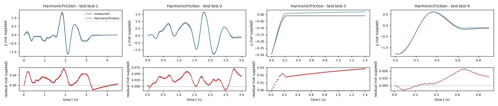
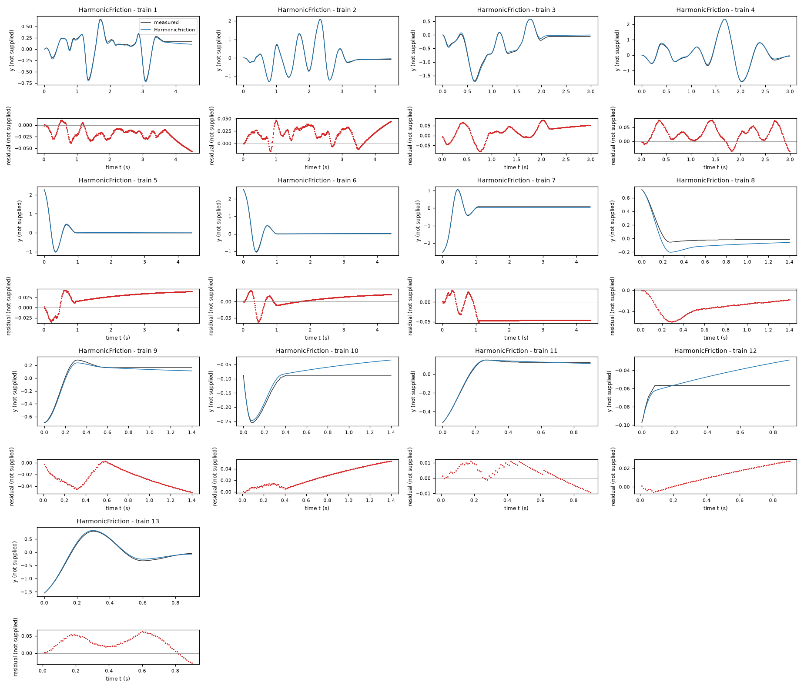
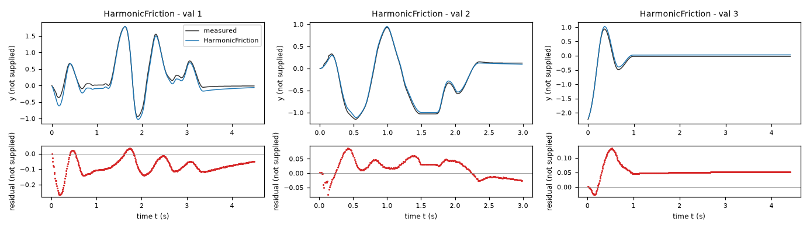
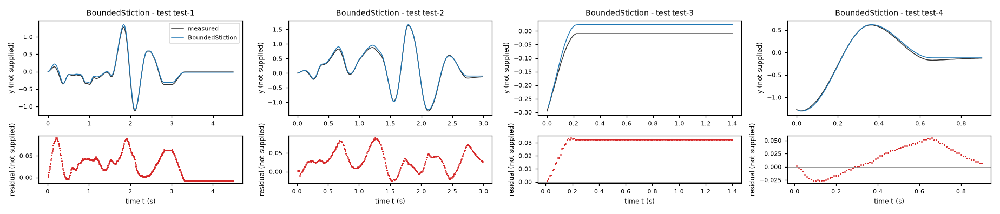
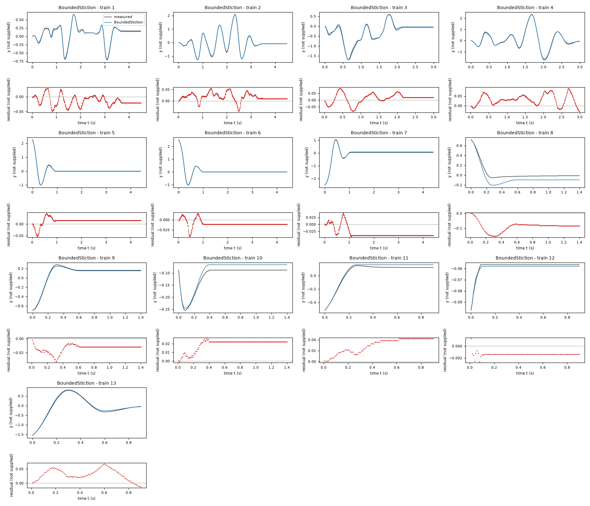
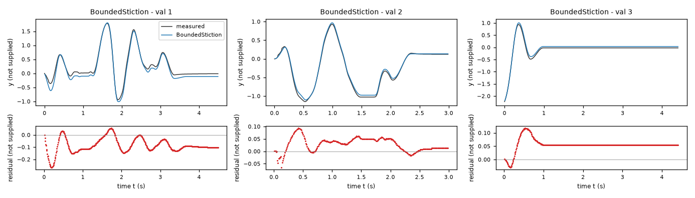
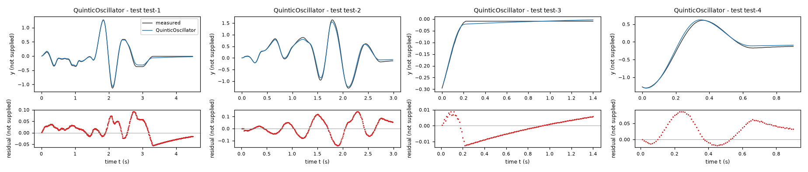
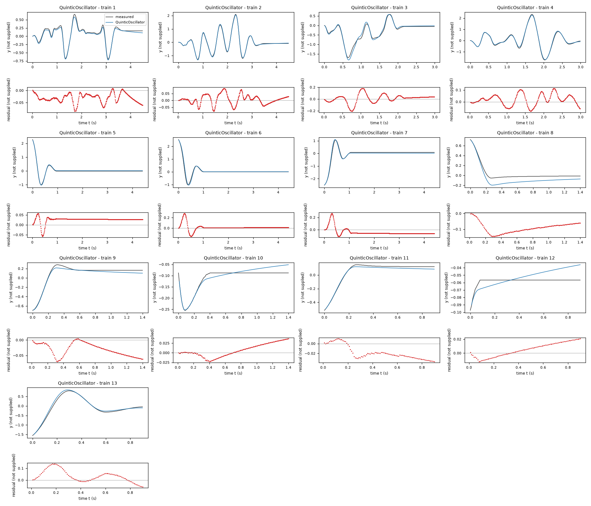
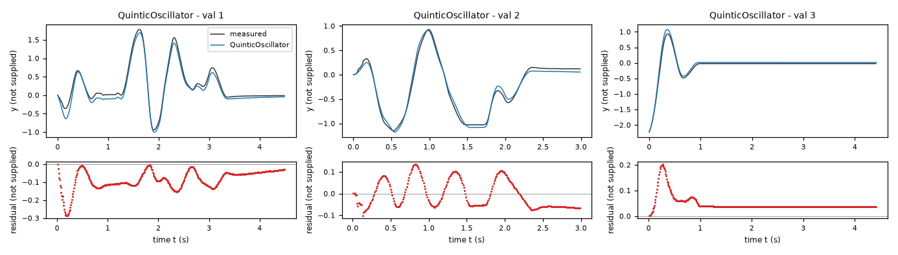

Identification task jdhj – run 2 of 5
Generated: 2026-10-08 01:24 UTC
Finished by the agent after 41 turns, 2242 s of execution time and 2.59 USD. 3 models delivered, 3 evaluated.
1 Models
| Model | Fitted parameters | Training error of y | Validation error | Test error of y | |
|---|---|---|---|---|---|
| HarmonicFriction | 10 | 0.0345 | 0.07188 | 0.0322 | recommended by the agent lowest test error |
| BoundedStiction | 10 | 0.03263 | 0.07621 | 0.0368 | |
| QuinticOscillator | 8 | 0.05282 | 0.07776 | 0.04527 |
The models are listed in the agent's order. Errors: root mean squared error between simulated and measured y. Training data: 13 trajectories of 91 to 450 samples (3509 scored samples). Test data, which the agent cannot access: 4 trajectories of 91 to 450 samples (978 scored samples). A simulation error grows with the length of the trajectory, and the training and the test trajectories differ in length, so the two errors are not directly comparable. The agent recommends a model from the training data. The model with the lowest test error is found with the test data, in hindsight, among the 3 models of this run; the agent could not make this choice.
0.0763671 in recorded y units). After all-data refitting its training and reused-validation free-running errors are 0.0344979 and 0.0718753 in recorded y units. These final figures are no longer independent holdout evidence. BoundedStiction offers exact stopping behavior; QuinticOscillator provides a polynomial restoring alternative. No test data were accessed.b = 3.673 V/s (fitted), k = -114.3 V/s (fitted), c = -1.711 1/s (fitted), f = 20.03 V/s (fitted), g = 28.73 V/(s*U) (fitted), s = 0.09 V (fitted), h = -6.604 V/s (fitted), j = -8.109 V/s (fitted), l = 3.409 V/s (fitted), m = 0.492 V/s (fitted)y: 0.0345 · validation error: 0.07188 · test error: 0.0322Equations as written in the model file
dy = x1
dx1 = b + k*sin(y) + c*x1 + g*x2 + l*(cos(y)-1) + m*sin(2*y) - (f + h*sin(y) + j*(cos(y)-1))*tanh(x1/s)
Equations with the values substituted
Every parameter is replaced by its value with 4 significant digits.
Parameters and estimation
| Name | Value | Unit | Type | Description |
|---|---|---|---|---|
b | 3.6729 | V/s | fitted | constant acceleration offset. Units use the recorded-unit convention defined in discussion. |
k | -114.268 | V/s | fitted | fundamental restoring-force coefficient multiplying . Units use the recorded-unit convention defined in discussion. |
c | -1.71102 | 1/s | fitted | linear velocity damping coefficient multiplying x1. Units use the recorded-unit convention defined in discussion. |
f | 20.0347 | V/s | fitted | baseline magnitude of the bounded velocity-opposing term. Units use the recorded-unit convention defined in discussion. |
g | 28.7252 | V/(s*U) | fitted | linear logged-input gain multiplying x2. Units use the recorded-unit convention defined in discussion. |
s | 0.09 | V | fitted | velocity scale in . Units use the recorded-unit convention defined in discussion. |
h | -6.60396 | V/s | fitted | coefficient of in the position-dependent friction bound. Units use the recorded-unit convention defined in discussion. |
j | -8.10864 | V/s | fitted | coefficient of in the position-dependent friction bound. Units use the recorded-unit convention defined in discussion. |
l | 3.40917 | V/s | fitted | coefficient of the even restoring correction . Units use the recorded-unit convention defined in discussion. |
m | 0.492021 | V/s | fitted | coefficient of the second harmonic restoring correction . Units use the recorded-unit convention defined in discussion. |
- Criterion minimized
Unweighted sum of squared free-running errors in
yover all noninitial samples, with equal weight per sample, rather than equal weight per trajectory. This matches the task scoring aggregation.dx1informed preliminary derivative-regression screening and residual diagnostics, but is not included in the final objective.- Data
Final estimation used every row of data/train.csv (all thirteen trajectories) and data/val.csv (all three trajectories); first states initialize simulations but first rows do not contribute residuals. Validation trajectories were first used separately for structure comparison, then included in the final parameter refit to use all available information. Consequently the final reported validation error is an in-sample diagnostic, not an unbiased holdout estimate. Trajectories remain separate experiments.
- Method
Deterministic bounded nonlinear least squares with scipy.optimize.least_squares, method trf (trust-region reflective), x_scale jac, finite-difference Jacobian and linear loss. All coefficients in this candidate were optimized jointly, without resetting states after the initial measured state of each trajectory. RK4 used s and held the logged
x2constant during a step, matching the stated scoring protocol. This output-error method was chosen over derivative-only regression because finite-difference derivative targets are quantized and scoring concerns free-runningy. There are no random seeds. First the joint train-plus-validation fit started at , , , , , , , , , . It used max_nfev 100, ftol 1e-8 and diff_step 1e-4, ending at its evaluation limit. These starts came from the preliminary training-only state-dependent-friction harmonic fit in fit_statefriction.py. A refinement then started at , , , , , , , , , with max_nfev 70, ftol 1e-9 and diff_step 1e-6. It also ended at its evaluation limit; no convergence claim is made. The refinement changes the objective only slightly. Starting values and bounds use each parameter's unit from the parameter table. The bounds were ; ; ; ; ; ; ; ; ; . Broad coefficient bounds constrain finite fits; restoring and damping signs encode the observed oscillator-like decay. The positive friction and smoothing bounds avoid sign-reversed dissipation and excessively stiff near-zero-velocity dynamics under the prescribed one-step RK4. Bounds are modeling assumptions, not known system limits.- Script
reproduce_candidates.py
The agent's explanation
Nonlinear Fourier oscillator with state-dependent smooth Coulomb-like friction. Related dry-friction simulation reference cited from memory, not independently verified: D. Karnopp, Computer Simulation of Stick-Slip Friction in Mechanical Dynamic Systems, ASME Journal of Dynamic Systems, Measurement, and Control (1985). This is a family-level reference, not a claim that the expression is Karnopp's exact algorithm. SciPy documentation retrieval was attempted but returned no usable text; software settings below report the actual calls, not an externally verified quotation.
Physical units were not supplied. Here Y, V and U mean the recorded units of y, x1 and x2; time is in seconds. The observed kinematic relation makes V consistent with Y/s. Trigonometric arguments use the raw numerical coordinate y; an angle interpretation is assumed only as a useful mathematical analogy, not identified physical provenance. is the kinematic relation. b shifts acceleration; supplies periodic restoring behavior; adds an even correction vanishing at the origin; changes amplitude dependence via a second harmonic; provides linear damping; and supplies input forcing. opposes velocity, with odd and even position modulation of its magnitude. The fitted magnitude stays positive for every real numerical y. The smooth transition scale is s. These are mathematical roles, not identified physical components.
Before fitting, affine, sparse polynomial, saturation, and state-dependent damping families were proposed. Exploratory ordinary least squares and nonlinear least squares in helper_nonlinear.py screened affine, sine, cubic, higher-polynomial, Coulomb, drag, input-nonlinearity and cross-term libraries; scan_terms.py also used sklearn.linear_model.ARDRegression as a diagnostic library screen, not as the final estimator. Centered differences showed within numerical precision, so dy was fixed to x1 without a fitted scale. The affine family and purely viscous damping had substantially worse free-running errors and were not delivered. Velocity-bin residuals and stopped trajectories motivated dry-friction-like terms; moving-row residual improvements from and motivated position dependence of its magnitude. No physical system description was available. Even and second-harmonic restoring corrections were introduced after asymmetric free-running errors persisted in a sine-only oscillator. Trigonometric operators were motivated by the oscillator analogy and the raw coordinate range; candidate terms were manually enumerated and compared, not produced by genetic programming. Input cubic, quadratic, sign and saturation terms were also screened; a final input-nonlinearity trial produced only a small reused-validation improvement with additional complexity, so the linear input term was retained.
s is at its lower fitting bound and is not a precisely identified physical friction width. Smooth friction permits slow drift rather than exact sticking, which contributes to errors on short decays. Its training-only held-out validation y RMSE before refitting was 0.0763671 Y. Final free-running y RMSE was 0.0344979 Y on training and 0.0718753 Y on the reused validation data. Derivative-residual RMSE was 9.73621 V/s and 16.2975 V/s, respectively; within-trajectory lag-one derivative-residual correlations were 0.5994 and 0.399. These nonwhite residuals leave quantization, unmodeled dynamics and input timing effects unresolved. No intended use, physical units, sensor accuracy, actuator dynamics, or true derivative measurements were supplied. The recorded derivatives are centered finite differences, not independent evidence. Models were checked only on supplied trajectories: training Y, V and U. Validation extends neither position nor velocity range substantially. Constant-input forcing far outside these data, alternate input timing, other integration steps, and long-term extrapolation are not validated. The state trajectories stayed finite and within the task bounds on supplied data, but no test score is known.
Plots of simulated and measured y, and errors per trajectory



| Data | Trajectory | Scored samples | RMSE | NRMSE | R² | Failure |
|---|---|---|---|---|---|---|
| training data | 1 | 449 of 449 | 0.02406 | 0.0938 | 0.9912 | none |
| training data | 2 | 449 of 449 | 0.02367 | 0.03552 | 0.9987 | none |
| training data | 3 | 299 of 299 | 0.04055 | 0.08586 | 0.9926 | none |
| training data | 4 | 299 of 299 | 0.03736 | 0.04558 | 0.9979 | none |
| training data | 5 | 441 of 441 | 0.03083 | 0.08054 | 0.9935 | none |
| training data | 6 | 441 of 441 | 0.01772 | 0.03882 | 0.9985 | none |
| training data | 7 | 441 of 441 | 0.04188 | 0.08072 | 0.9935 | none |
| training data | 8 | 140 of 140 | 0.08563 | 0.5214 | 0.7281 | none |
| training data | 9 | 140 of 140 | 0.02987 | 0.1366 | 0.9813 | none |
| training data | 10 | 140 of 140 | 0.03012 | 0.6127 | 0.6246 | none |
| training data | 11 | 90 of 90 | 0.00637 | 0.03871 | 0.9985 | none |
| training data | 12 | 90 of 90 | 0.01526 | 2.991 | -7.947 | none |
| training data | 13 | 90 of 90 | 0.03678 | 0.06771 | 0.9954 | none |
| validation data | 1 | 449 of 449 | 0.09762 | 0.1785 | 0.9681 | none |
| validation data | 2 | 299 of 299 | 0.03558 | 0.06363 | 0.996 | none |
| validation data | 3 | 441 of 441 | 0.05803 | 0.1544 | 0.9762 | none |
| test data | test-1 | 449 of 449 | 0.0343 | 0.09083 | 0.9918 | none |
| test data | test-2 | 299 of 299 | 0.03308 | 0.05353 | 0.9971 | none |
| test data | test-3 | 140 of 140 | 0.02295 | 0.4335 | 0.812 | none |
| test data | test-4 | 90 of 90 | 0.03073 | 0.05819 | 0.9966 | none |
RMSE of y; NRMSE = RMSE / σ and R² = 1 − SSE / Σ(y[k] − μ)², with μ and σ the mean and the population standard deviation of the measured output on the scored samples.
b = 4.282 V/s (fitted), k = -117 V/s (fitted), c = -1.884 1/s (fitted), f = 19.48 V/s (fitted), g = 29.29 V/(s*U) (fitted), tau = 0.007007 s (fitted), h = -7.642 V/s (fitted), j = -9.043 V/s (fitted), l = 3.89 V/s (fitted), m = 0.6072 V/s (fitted)y: 0.03263 · validation error: 0.07621 · test error: 0.0368Equations as written in the model file
dy = x1
dx1 = (b + k*sin(y) + c*x1 + g*x2 + l*(cos(y)-1) + m*sin(2*y)) - Min((f + h*sin(y) + j*(cos(y)-1)), Max(-(f + h*sin(y) + j*(cos(y)-1)), (b + k*sin(y) + c*x1 + g*x2 + l*(cos(y)-1) + m*sin(2*y)) + x1/tau))
Equations with the values substituted
Every parameter is replaced by its value with 4 significant digits.
Parameters and estimation
| Name | Value | Unit | Type | Description |
|---|---|---|---|---|
b | 4.28244 | V/s | fitted | constant acceleration offset. Units use the recorded-unit convention defined in discussion. |
k | -116.951 | V/s | fitted | fundamental restoring-force coefficient multiplying . Units use the recorded-unit convention defined in discussion. |
c | -1.884 | 1/s | fitted | linear velocity damping coefficient multiplying x1. Units use the recorded-unit convention defined in discussion. |
f | 19.4836 | V/s | fitted | baseline magnitude of the bounded velocity-opposing term. Units use the recorded-unit convention defined in discussion. |
g | 29.2907 | V/(s*U) | fitted | linear logged-input gain multiplying x2. Units use the recorded-unit convention defined in discussion. |
tau | 0.00700668 | s | fitted | relaxation time in the bounded-force projection; inside its unsaturated region the expression reduces to . Units use the recorded-unit convention defined in discussion. |
h | -7.64249 | V/s | fitted | coefficient of in the position-dependent friction bound. Units use the recorded-unit convention defined in discussion. |
j | -9.04312 | V/s | fitted | coefficient of in the position-dependent friction bound. Units use the recorded-unit convention defined in discussion. |
l | 3.89025 | V/s | fitted | coefficient of the even restoring correction . Units use the recorded-unit convention defined in discussion. |
m | 0.607243 | V/s | fitted | coefficient of the second harmonic restoring correction . Units use the recorded-unit convention defined in discussion. |
- Criterion minimized
Unweighted sum of squared free-running errors in
yover all noninitial samples, with equal weight per sample, rather than equal weight per trajectory. This matches the task scoring aggregation.dx1informed preliminary derivative-regression screening and residual diagnostics, but is not included in the final objective.- Data
Final estimation used every row of data/train.csv (all thirteen trajectories) and data/val.csv (all three trajectories); first states initialize simulations but first rows do not contribute residuals. Validation trajectories were first used separately for structure comparison, then included in the final parameter refit to use all available information. Consequently the final reported validation error is an in-sample diagnostic, not an unbiased holdout estimate. Trajectories remain separate experiments.
- Method
Deterministic bounded nonlinear least squares with scipy.optimize.least_squares, method trf (trust-region reflective), x_scale jac, finite-difference Jacobian and linear loss. All coefficients in this candidate were optimized jointly, without resetting states after the initial measured state of each trajectory. RK4 used s and held the logged
x2constant during a step, matching the stated scoring protocol. This output-error method was chosen over derivative-only regression because finite-difference derivative targets are quantized and scoring concerns free-runningy. There are no random seeds. Starting values were , , , , , , , , , . They were taken from the preliminary training-only state-dependent bounded-friction harmonic fit in fit_statefriction.py to initialize near a stable trajectory solution. All parameters were then jointly refitted with max_nfev 100, ftol 1e-8 and diff_step 1e-4. The final solver reported successful termination. Starting values and bounds use each parameter's unit from the parameter table. The bounds were ; ; ; ; ; ; ; ; ; . Broad coefficient bounds constrain finite fits; restoring and damping signs encode the observed oscillator-like decay. The positive friction and smoothing bounds avoid sign-reversed dissipation and excessively stiff near-zero-velocity dynamics under the prescribed one-step RK4. Bounds are modeling assumptions, not known system limits.- Script
reproduce_candidates.py
The agent's explanation
Nonlinear Fourier oscillator with a bounded-force projection regularization of dry friction and stiction. Related dry-friction simulation reference cited from memory, not independently verified: D. Karnopp, Computer Simulation of Stick-Slip Friction in Mechanical Dynamic Systems, ASME Journal of Dynamic Systems, Measurement, and Control (1985). This is a family-level reference, not a claim that the expression is Karnopp's exact algorithm. SciPy documentation retrieval was attempted but returned no usable text; software settings below report the actual calls, not an externally verified quotation.
Physical units were not supplied. Here Y, V and U mean the recorded units of y, x1 and x2; time is in seconds. The observed kinematic relation makes V consistent with Y/s. Trigonometric arguments use the raw numerical coordinate y; an angle interpretation is assumed only as a useful mathematical analogy, not identified physical provenance. is the kinematic relation. The unconstrained force is : b shifts acceleration, is periodic restoring behavior, is linear damping, is input forcing, adds an even correction vanishing at the origin, and adds a second harmonic. The friction bound is ; h gives odd and j even position modulation. Clipping the trial force plus to that bound gives exact relaxation when unsaturated, and force-minus-bounded-friction when saturated. Thus states at can remain stopped for a range of y and x2. The fitted bound remains positive for every real numerical y.
Before fitting, affine, sparse polynomial, saturation, and state-dependent damping families were proposed. Exploratory ordinary least squares and nonlinear least squares in helper_nonlinear.py screened affine, sine, cubic, higher-polynomial, Coulomb, drag, input-nonlinearity and cross-term libraries; scan_terms.py also used sklearn.linear_model.ARDRegression as a diagnostic library screen, not as the final estimator. Centered differences showed within numerical precision, so dy was fixed to x1 without a fitted scale. The affine family and purely viscous damping had substantially worse free-running errors and were not delivered. Velocity-bin residuals and stopped trajectories motivated dry-friction-like terms; moving-row residual improvements from and motivated position dependence of its magnitude. No physical system description was available. The Min and Max projection was introduced after observing different nonzero stopping positions, which smooth friction drifts away from. It is a guessed regularization of set-valued Coulomb friction, not a known apparatus mechanism. Even and second-harmonic restoring corrections came from a manually enumerated trigonometric library after amplitude- and sign-dependent trajectory errors remained. The clipped structure was selected for its stopping behavior, not because its held-out output error beat all smooth models.
The projection is nonsmooth at saturation boundaries, so fitted tau is sensitive to the specified integration step; it is near its lower bound and should not be treated as a resolved physical time constant. Its training-only held-out validation y RMSE before refitting was 0.0828222 Y. Final free-running y RMSE was 0.0326336 Y on training and 0.0762124 Y on the reused validation data. Derivative-residual RMSE was 7.9901 V/s and 15.7359 V/s, respectively; within-trajectory lag-one derivative-residual correlations were 0.4092 and 0.3584. These nonwhite residuals leave quantization, unmodeled dynamics and input timing effects unresolved. No intended use, physical units, sensor accuracy, actuator dynamics, or true derivative measurements were supplied. The recorded derivatives are centered finite differences, not independent evidence. Models were checked only on supplied trajectories: training Y, V and U. Validation extends neither position nor velocity range substantially. Constant-input forcing far outside these data, alternate input timing, other integration steps, and long-term extrapolation are not validated. The state trajectories stayed finite and within the task bounds on supplied data, but no test score is known.
Plots of simulated and measured y, and errors per trajectory



| Data | Trajectory | Scored samples | RMSE | NRMSE | R² | Failure |
|---|---|---|---|---|---|---|
| training data | 1 | 449 of 449 | 0.0212 | 0.08267 | 0.9932 | none |
| training data | 2 | 449 of 449 | 0.02432 | 0.03648 | 0.9987 | none |
| training data | 3 | 299 of 299 | 0.03789 | 0.08024 | 0.9936 | none |
| training data | 4 | 299 of 299 | 0.04148 | 0.05062 | 0.9974 | none |
| training data | 5 | 441 of 441 | 0.01933 | 0.05051 | 0.9974 | none |
| training data | 6 | 441 of 441 | 0.01241 | 0.02718 | 0.9993 | none |
| training data | 7 | 441 of 441 | 0.03621 | 0.0698 | 0.9951 | none |
| training data | 8 | 140 of 140 | 0.09308 | 0.5668 | 0.6787 | none |
| training data | 9 | 140 of 140 | 0.01444 | 0.06605 | 0.9956 | none |
| training data | 10 | 140 of 140 | 0.02037 | 0.4144 | 0.8283 | none |
| training data | 11 | 90 of 90 | 0.03242 | 0.197 | 0.9612 | none |
| training data | 12 | 90 of 90 | 0.001426 | 0.2796 | 0.9219 | none |
| training data | 13 | 90 of 90 | 0.03645 | 0.0671 | 0.9955 | none |
| validation data | 1 | 449 of 449 | 0.1041 | 0.1904 | 0.9638 | none |
| validation data | 2 | 299 of 299 | 0.03947 | 0.0706 | 0.995 | none |
| validation data | 3 | 441 of 441 | 0.05976 | 0.159 | 0.9747 | none |
| test data | test-1 | 449 of 449 | 0.0375 | 0.09931 | 0.9901 | none |
| test data | test-2 | 299 of 299 | 0.04003 | 0.06478 | 0.9958 | none |
| test data | test-3 | 140 of 140 | 0.03143 | 0.5937 | 0.6476 | none |
| test data | test-4 | 90 of 90 | 0.02891 | 0.05475 | 0.997 | none |
RMSE of y; NRMSE = RMSE / σ and R² = 1 − SSE / Σ(y[k] − μ)², with μ and σ the mean and the population standard deviation of the measured output on the scored samples.
b = 1.632 V/s (fitted), k = -113 V/(s*Y) (fitted), c = -1.673 1/s (fitted), f = 21.4 V/s (fitted), g = 28.37 V/(s*U) (fitted), s = 0.1115 V (fitted), a3 = 18.17 V/(s*Y**3) (fitted), a5 = -0.5029 V/(s*Y**5) (fitted)y: 0.05282 · validation error: 0.07776 · test error: 0.04527Equations as written in the model file
dy = x1
dx1 = b + k*y + a3*y**3 + a5*y**5 + c*x1 + g*x2 - f*tanh(x1/s)
Equations with the values substituted
Every parameter is replaced by its value with 4 significant digits.
Parameters and estimation
| Name | Value | Unit | Type | Description |
|---|---|---|---|---|
b | 1.63162 | V/s | fitted | constant acceleration offset. Units use the recorded-unit convention defined in discussion. |
k | -113.005 | V/(s*Y) | fitted | coefficient of y. Units use the recorded-unit convention defined in discussion. |
c | -1.67329 | 1/s | fitted | linear velocity damping coefficient multiplying x1. Units use the recorded-unit convention defined in discussion. |
f | 21.3993 | V/s | fitted | baseline magnitude of the bounded velocity-opposing term. Units use the recorded-unit convention defined in discussion. |
g | 28.3667 | V/(s*U) | fitted | linear logged-input gain multiplying x2. Units use the recorded-unit convention defined in discussion. |
s | 0.111515 | V | fitted | velocity scale in . Units use the recorded-unit convention defined in discussion. |
a3 | 18.1739 | V/(s*Y**3) | fitted | cubic restoring coefficient multiplying . Units use the recorded-unit convention defined in discussion. |
a5 | -0.502943 | V/(s*Y**5) | fitted | quintic restoring coefficient multiplying . Units use the recorded-unit convention defined in discussion. |
- Criterion minimized
Unweighted sum of squared free-running errors in
yover all noninitial samples, with equal weight per sample, rather than equal weight per trajectory. This matches the task scoring aggregation.dx1informed preliminary derivative-regression screening and residual diagnostics, but is not included in the final objective.- Data
Final estimation used every row of data/train.csv (all thirteen trajectories) and data/val.csv (all three trajectories); first states initialize simulations but first rows do not contribute residuals. Validation trajectories were first used separately for structure comparison, then included in the final parameter refit to use all available information. Consequently the final reported validation error is an in-sample diagnostic, not an unbiased holdout estimate. Trajectories remain separate experiments.
- Method
Deterministic bounded nonlinear least squares with scipy.optimize.least_squares, method trf (trust-region reflective), x_scale jac, finite-difference Jacobian and linear loss. All coefficients in this candidate were optimized jointly, without resetting states after the initial measured state of each trajectory. RK4 used s and held the logged
x2constant during a step, matching the stated scoring protocol. This output-error method was chosen over derivative-only regression because finite-difference derivative targets are quantized and scoring concerns free-runningy. There are no random seeds. Starting values were , , , , , , , . They were taken from the preliminary training-only quintic smooth-friction fit in fit_rollout.py to initialize near a stable trajectory solution. All parameters were then jointly refitted with max_nfev 100, ftol 1e-8 and diff_step 1e-4. The final solver reported successful termination. Starting values and bounds use each parameter's unit from the parameter table. The bounds were ; ; ; ; ; ; ; . Broad coefficient bounds constrain finite fits; restoring and damping signs encode the observed oscillator-like decay. The positive friction and smoothing bounds avoid sign-reversed dissipation and excessively stiff near-zero-velocity dynamics under the prescribed one-step RK4. Bounds are modeling assumptions, not known system limits.- Script
reproduce_candidates.py
The agent's explanation
Quintic polynomial nonlinear oscillator, an extension of the Duffing oscillator, with smooth Coulomb-like damping. The Duffing family is named as an established model family; the extension here is empirical. Related dry-friction simulation reference cited from memory, not independently verified: D. Karnopp, Computer Simulation of Stick-Slip Friction in Mechanical Dynamic Systems, ASME Journal of Dynamic Systems, Measurement, and Control (1985). This is a family-level reference, not a claim that the expression is Karnopp's exact algorithm. SciPy documentation retrieval was attempted but returned no usable text; software settings below report the actual calls, not an externally verified quotation.
Physical units were not supplied. Here Y, V and U mean the recorded units of y, x1 and x2; time is in seconds. The observed kinematic relation makes V consistent with Y/s. Trigonometric arguments use the raw numerical coordinate y; an angle interpretation is assumed only as a useful mathematical analogy, not identified physical provenance. is the kinematic relation. In dx1, b shifts acceleration, supplies local linear restoring behavior, softens that behavior at intermediate amplitude, and the negative fitted restores an inward highest-order force at large amplitude. is linear damping, is input forcing, and is a smooth velocity-opposing force with bounded magnitude. These are mathematical effects; no masses, lengths or material properties are inferred.
Before fitting, affine, sparse polynomial, saturation, and state-dependent damping families were proposed. Exploratory ordinary least squares and nonlinear least squares in helper_nonlinear.py screened affine, sine, cubic, higher-polynomial, Coulomb, drag, input-nonlinearity and cross-term libraries; scan_terms.py also used sklearn.linear_model.ARDRegression as a diagnostic library screen, not as the final estimator. Centered differences showed within numerical precision, so dy was fixed to x1 without a fitted scale. The affine family and purely viscous damping had substantially worse free-running errors and were not delivered. Velocity-bin residuals and stopped trajectories motivated dry-friction-like terms; moving-row residual improvements from and motivated position dependence of its magnitude. No physical system description was available. The cubic branch improved amplitude dependence over the affine model. The quintic term was added to approximate the sine-like softening over observed excursions while avoiding the outward highest-degree force of an unconstrained softening cubic model. Constant friction was retained to give an independently defensible compact polynomial alternative, not a coefficient perturbation of the harmonic model. Powers came from a manually enumerated polynomial library, not a genetic-programming search.
Polynomial extrapolation is not a physical law and becomes very steep outside observed excursions. Smooth friction does not admit an exact interval of stuck equilibria. Its training-only held-out validation y RMSE before refitting was 0.0837067 Y. Final free-running y RMSE was 0.0528176 Y on training and 0.0777601 Y on the reused validation data. Derivative-residual RMSE was 9.99382 V/s and 16.6145 V/s, respectively; within-trajectory lag-one derivative-residual correlations were 0.6388 and 0.4238. These nonwhite residuals leave quantization, unmodeled dynamics and input timing effects unresolved. No intended use, physical units, sensor accuracy, actuator dynamics, or true derivative measurements were supplied. The recorded derivatives are centered finite differences, not independent evidence. Models were checked only on supplied trajectories: training Y, V and U. Validation extends neither position nor velocity range substantially. Constant-input forcing far outside these data, alternate input timing, other integration steps, and long-term extrapolation are not validated. The state trajectories stayed finite and within the task bounds on supplied data, but no test score is known.
Plots of simulated and measured y, and errors per trajectory



| Data | Trajectory | Scored samples | RMSE | NRMSE | R² | Failure |
|---|---|---|---|---|---|---|
| training data | 1 | 449 of 449 | 0.03574 | 0.1393 | 0.9806 | none |
| training data | 2 | 449 of 449 | 0.0357 | 0.05357 | 0.9971 | none |
| training data | 3 | 299 of 299 | 0.07284 | 0.1542 | 0.9762 | none |
| training data | 4 | 299 of 299 | 0.04977 | 0.06072 | 0.9963 | none |
| training data | 5 | 441 of 441 | 0.02988 | 0.07806 | 0.9939 | none |
| training data | 6 | 441 of 441 | 0.06072 | 0.133 | 0.9823 | none |
| training data | 7 | 441 of 441 | 0.07367 | 0.142 | 0.9798 | none |
| training data | 8 | 140 of 140 | 0.0959 | 0.584 | 0.659 | none |
| training data | 9 | 140 of 140 | 0.03676 | 0.1681 | 0.9718 | none |
| training data | 10 | 140 of 140 | 0.01774 | 0.3607 | 0.8699 | none |
| training data | 11 | 90 of 90 | 0.02291 | 0.1392 | 0.9806 | none |
| training data | 12 | 90 of 90 | 0.01082 | 2.121 | -3.498 | none |
| training data | 13 | 90 of 90 | 0.06009 | 0.1106 | 0.9878 | none |
| validation data | 1 | 449 of 449 | 0.1008 | 0.1844 | 0.966 | none |
| validation data | 2 | 299 of 299 | 0.06293 | 0.1126 | 0.9873 | none |
| validation data | 3 | 441 of 441 | 0.05716 | 0.1521 | 0.9769 | none |
| test data | test-1 | 449 of 449 | 0.03591 | 0.0951 | 0.991 | none |
| test data | test-2 | 299 of 299 | 0.0647 | 0.1047 | 0.989 | none |
| test data | test-3 | 140 of 140 | 0.005776 | 0.1091 | 0.9881 | none |
| test data | test-4 | 90 of 90 | 0.04339 | 0.08218 | 0.9932 | none |
RMSE of y; NRMSE = RMSE / σ and R² = 1 − SSE / Σ(y[k] − μ)², with μ and σ the mean and the population standard deviation of the measured output on the scored samples.
2 Course of the run
The system prompt, TASK.md and FORMAT.md that the agent received are shown on the page of the experiment.
0:00Harness: opening message to the agent
10:05Read TASK.md0.01
5,474 input and 19 output tokens; 0.011 USD for this turn.
TASK.md
output as sent to the agent (3,688 characters, 38 lines)
[TASK.md: 3661 characters] # Task: Identification task jdhj ## 1 System and intended use The task gives no description of the system. The task states no intended use of the model. ## 2 Data `data/train.csv` holds 3522 samples of training data: 13 trajectories of 450, 450, 300, 300, 442, 442, 442, 141, 141, 141, 91, 91, 91 consecutive samples; the column `trajectory` holds the trajectory number. `data/val.csv` holds 1192 samples of validation data: 3 trajectories of 450, 300, 442 consecutive samples; the column `trajectory` holds the trajectory number. Whether and how you use the validation data is your decision. Row k+1 of a trajectory is the sample that follows row k; different trajectories are separate experiments. The sampling period is T_s = 0.01 s. | Column | Role | Unit | Training range | Description | |---|---|---|---|---| | `y` | state, scored output | not supplied | not declared | not supplied | | `x1` | state | not supplied | not declared | not supplied | | `x2` | input | not supplied | not declared | not supplied | | `dx1` | sampled time derivative of `x1` | not supplied | not declared | not supplied | The task does not state the units. The task does not describe the columns. ## 3 What you deliver A candidate is a continuous-time model of 2 closed-form expressions, `dy` and `dx1`: the time derivatives of the states `y` and `x1` as functions of `y`, `x1` and `x2`. The column `dx1` is a possible fitting target for the derivative of `x1`; it is not an argument of the expressions. `FORMAT.md` states how an expression is written and what it may contain. Write one file per candidate, `models/<label>.json`; `FORMAT.md` describes the file and gives an example. Write also `models/pool.json`, which lists the labels of your candidates in the order in which they are to be evaluated. You can recommend one candidate that you consider the best-performing. `models/pool.json` then names that candidate and gives your reason. Run `python check_submission.py` to check your files: it prints every error with its location, so that you can correct it. At most 10 candidates are evaluated, in the order of `models/pool.json`. Consider various identification approaches, for example physically motivated structures, symbolic-regression search or sparse regression; before fitting, list the approaches and the model families you will try. Build the pool from structurally different model families, not from variations of one form. Examine the residuals of your best candidates and try structures that can represent what they show. Include only candidates you would defend as a model of the system. ## 4 Evaluation The harness, the software that runs this task, evaluates every candidate on test data that you cannot access. For each test trajectory it starts from the first logged state and integrates the expressions with the classical fourth-order Runge–Kutta method, one step per sampling period, with the logged inputs held constant between samples; a simulated state is never replaced by a later measurement. The score is the root mean squared error (RMSE) between simulated and logged `y` over all test samples after the first of each trajectory. An evaluation fails when a value is not finite, when `y` leaves [-1000, 1000] or `x1` leaves [-1000, 1000], or when it takes longer than 60 s. ## 5 Limits and completion One round: 60 turns, 3600 s of execution time, 10 USD; a turn is one response of yours. When the files pass the check, send the exact message DONE. If the harness's check of the files then fails, you receive its report and may correct the files once. If a limit ends the round earlier, the complete candidate files are evaluated.
20:06Read FORMAT.md0.02
6,371 input and 19 output tokens; 0.013 USD for this turn.
FORMAT.md
output as sent to the agent (8,159 characters, 128 lines)
[FORMAT.md: 8130 characters]
# Model file format
This file is the same for every task. `TASK.md` names the expression keys, the variables and the permitted functions of your task.
## Candidate file `models/<label>.json`
Write one JSON file per candidate. The label is the file name: a letter, then up to 31 letters, digits, `_` or `-`. The file has these fields and no others:
- `expressions`: one expression text per expression key named in `TASK.md`.
- `parameters`: one row per parameter. A parameter is a constant of the expressions that you name yourself, for example `a1`. Its row has
- `name`: the name used in the expressions: a letter, then letters, digits or `_`; it differs from every column, expression key, constant and function name;
- `value`: the numerical value;
- `unit`: the unit; `-` for a dimensionless quantity;
- `type`: `fitted` (estimated from data), `fixed` (chosen or known, not estimated) or `tied` (computed from other parameters by `equation`);
- `description`: what the parameter represents; for a fixed value, where the value comes from and why it was chosen; for a value taken over from another candidate or an earlier fit, from which one;
- `equation`: for a tied parameter only: its defining equation over other parameters, given constants and numbers.
- `estimation`: how the values of the fitted parameters of this candidate were obtained and why in this way; for every fitted parameter it must be clear how its value was found. Write the record for this candidate model, not for the run as a whole: its own criterion, data, method and starting values, with the reasons that apply to this candidate. The record has
- `criterion`: what was minimized, on which variable, and why this criterion;
- `data`: the files, trajectories or rows used, and the reason when some were left out;
- `method`: how the values were estimated: the estimation method by its established name and the software function, and why this method and not another; the starting values as numbers, or the statement that the method needs none, and why these starting values; whether all fitted parameters were estimated together in one step and, if not, which parameters were estimated in which step, with which criterion, and why; the seeds where they apply;
- `script`: the file in the working directory that reproduces the values.
- `discussion`: four texts, in this order:
- `family`: the model family by its established name, with a reference where you know one;
- `interpretation`: what each term represents in the system; describe a term without a known physical meaning by its mathematical effect;
- `origin`: how you arrived at the structure of this expression, as distinct from its parameter values, which `estimation` covers: say which of its terms, variables and operators came from physical reasoning, which from a search and which from a guess, what you tried before, and what made you change it;
- `limitations`: what the data do not determine and where the model is not expected to hold.
- `answers`: only when `TASK.md` asks questions about the candidates: one text per question identifier.
- `predecessor`: only in a later round of an interactive session, and optional: the label of the candidate of the previous pool that this candidate revises.
## Expressions
An expression is a text in Python syntax. It may contain:
- the variables that `TASK.md` names as the arguments of the expression;
- your parameters, each with a row in `parameters`;
- the constants `pi` and `E`, the given constants that `TASK.md` lists, and numbers;
- these operators and functions, unless `TASK.md` states another list: `+` `-` `*` `/` `**` `sin` `cos` `tan` `asin` `acos` `atan` `atan2` `sinh` `cosh` `tanh` `exp` `log` `sqrt` `Abs` `sign` `Min` `Max` `Piecewise`.
`**` is the power (not `^`), and `log` is the natural logarithm. `Piecewise` takes pairs `(value, condition)` and ends with a pair `(value, True)`, for example `Piecewise((a1*q, (q > 0) & (q < 1)), (0, True))`. A condition is a comparison `<`, `<=`, `>`, `>=`, `Eq(a, b)` or `Ne(a, b)`, each in parentheses, combined with `&`, `|` and `~`.
A number that fixes the form of the expression, such as 2 in `q**2`, may be written directly. A value obtained by estimation is a parameter with a row in `parameters`, never a number written into the expression. Every parameter row must be used in an expression or in a tie equation.
## Pool file `models/pool.json`
- `order`: the candidate labels in your order;
- `recommended`: the label of the candidate you recommend, or `null` when you recommend none;
- `reason`: why you recommend this candidate, or why you recommend none.
Every file `models/<label>.json` must be listed in `order`.
## Example
An invented task with one input `q` and one output `z`, whose expression key is `z`. The example shows the format only: its model is not a proposal, and its discussion texts say what your texts must contain.
`models/M01.json`:
```json
{
"expressions": {
"z": "a1*q + b1*q**2/n0"
},
"parameters": [
{
"name": "a1",
"value": 0.5,
"unit": "-",
"type": "fitted",
"description": "coefficient of `q`"
},
{
"name": "n0",
"value": 2.0,
"unit": "-",
"type": "fixed",
"description": "normalisation of the quadratic term; chosen as the largest value of `q` in the training data, so that `b1` has the scale of `a1`"
},
{
"name": "b1",
"value": 1.0,
"unit": "-",
"type": "tied",
"equation": "2*a1",
"description": "coefficient of `q**2/n0`, tied to `a1` by the assumption stated in the discussion"
}
],
"estimation": {
"criterion": "sum of squared differences between the expression `z` and the column `z`, because the expression gives `z` directly and no row is known to be more accurate than another",
"data": "data/train.csv, all rows",
"method": "The value of `a1` was estimated by ordinary least squares with numpy.linalg.lstsq. With `b1 = 2*a1` the expression is linear in the one fitted parameter `a1`, so the least-squares solution is obtained directly and an iterative method is not needed; for the same reason the method needs no starting values. `a1` is the only fitted parameter and was estimated in one step. The method uses no random numbers, so that no seed applies.",
"script": "fit_M01.py"
},
"discussion": {
"family": "State the model family by its established name.",
"interpretation": "State what each term represents.",
"origin": "State how you arrived at this expression.",
"limitations": "State what the data do not determine and where the model is not expected to hold."
}
}
```
`models/pool.json`:
```json
{
"order": [
"M01"
],
"recommended": "M01",
"reason": "State why you recommend this candidate, or why you recommend none."
}
```
## Checking
`python check_submission.py` checks every file against these rules and evaluates each expression on the training data. It names each error with its rule. Correct the errors and run it again.
## Writing
- Define every symbol at first use.
- Give every number with its unit and the data it was computed on.
- Name methods by their established names.
- Cite a reference for a model family or a method where one applies. Cite only references you are certain exist, and say when you cite from memory without having checked the source.
- Say what is estimated, what is assumed and what is unknown.
- Give a brief reason for every choice you made: a structure, a criterion, a method, a starting value, a fixed value, a term you removed.
- Write every expression inside a text between backticks, in the syntax of the expressions, for example `a1*q**2`; write it out, do not describe it in words. This holds also for a single parameter, column or expression name, such as `a1`, for a value given to one, such as `a1 = 0.5`, and for a range, such as `0 <= a1 <= 2`. A unit follows outside the backticks; a dimensionless value has no unit and no hyphen after it.
- Describe a term without a known physical meaning by its mathematical effect; do not invent a meaning.
30:09Listed the files0.04
8,423 input and 98 output tokens (of which 11 reasoning); 0.018 USD for this turn.
reasoning summary (written by the model provider's summarizer; the model's own reasoning is not available)
Planning the fit
I need to inspect and plan carefully before fitting anything. It seems like checking all the details first is essential to ensure everything aligns properly. I wonder if I have all the necessary tools and information to make this fit successful. Planning ahead can help me avoid any surprises, and I definitely don’t want to overlook anything. So, let’s make sure to consider all the factors before moving forward!
I’ll compare affine dynamics, sparse polynomial dynamics, and compact nonlinear models such as saturation or state-dependent damping. I’ll fit the available derivative data, check free-running simulations on validation trajectories, and use residual patterns to refine the structures. Since the system is undescribed, I’ll distinguish mathematical effects from any physical interpretation.
{}output as sent to the agent (188 characters, 9 lines)
[.: 8 entries] data/ models/ FORMAT.md 8130 bytes TASK.md 3663 bytes check_config.json 985 bytes check_submission.py 102476 bytes data/train.csv 179789 bytes data/val.csv 65398 bytes
40:17Wrote explore.py0.06
8,593 input and 417 output tokens; 0.021 USD for this turn.
explore.py
file content written (1,101 characters)
import numpy as np,pandas as pd
from scipy.signal import savgol_filter
tr=pd.read_csv('data/train.csv'); va=pd.read_csv('data/val.csv')
print(tr.head().to_string());print(tr.describe().to_string()); print('validation',va.describe().to_string())
for k,g in tr.groupby('trajectory',sort=False):
print('trajectory',k,'n',len(g),'first',g.iloc[0].to_dict(),'range',[(c,round(g[c].min(),4),round(g[c].max(),4)) for c in ['y','x1','x2','dx1']])
print('correlation');print(tr.corr().to_string())
for name,d in [('train',tr),('val',va)]:
yy=[]; xx=[]
for k,g in d.groupby('trajectory',sort=False):
a=g[['y','x1','x2']].values
dy=np.gradient(a[:,0],.01); xx.append(a[2:-2]);yy.append(dy[2:-2])
X=np.concatenate(xx);Y=np.concatenate(yy)
for cols in [[0],[1],[0,1],[0,1,2]]:
A=np.column_stack([np.ones(len(X)),X[:,cols]]);b=np.linalg.lstsq(A,Y,rcond=None)[0]
print(name,'dy linear',cols,b,'rmse',np.sqrt(np.mean((A@b-Y)**2)))
A=np.column_stack([np.ones(len(d)),d[['y','x1','x2']].values]);b=np.linalg.lstsq(A,d.dx1,rcond=None)[0]
print(name,'dx1 linear',b,'rmse',np.sqrt(np.mean((A@b-d.dx1)**2)))
output as sent to the agent (36 characters, 1 lines)
Wrote 1101 characters to explore.py.
50:18Ran python explore.py0.08
9,031 input and 20 output tokens; 0.018 USD for this turn.
$ python explore.py
output as sent to the agent (7,321 characters, 55 lines)
[exit status 0]
y x1 x2 dx1 trajectory
0 0.000000 0.000000 1.286047 3.141593e+01 1
1 0.000000 0.314159 1.218545 2.356194e+01 1
2 0.006283 0.471239 1.087069 7.853982e+00 1
3 0.009425 0.471239 0.830988 7.853982e+00 1
4 0.015708 0.628319 0.332211 3.000000e-15 1
y x1 x2 dx1 trajectory
count 3522.000000 3522.000000 3522.000000 3.522000e+03 3522.000000
mean -0.003704 0.001204 -0.062450 1.337987e-01 5.249574
std 0.497717 3.988737 1.120932 4.360072e+01 3.168541
min -2.513274 -20.106193 -4.945106 -1.963495e+02 1.000000
25% -0.087965 0.000000 0.000000 -6.700000e-14 2.000000
50% 0.001571 0.000000 0.000000 0.000000e+00 5.000000
75% 0.122522 0.471239 0.000000 6.900000e-14 7.000000
max 2.535265 14.451326 3.952501 1.806416e+02 13.000000
validation y x1 x2 dx1 trajectory
count 1192.000000 1192.000000 1192.000000 1192.000000 1192.000000
mean 0.005324 0.194636 -0.044547 -0.013178 1.993289
std 0.537581 3.723961 1.471655 42.080756 0.865393
min -2.227389 -17.907078 -4.819706 -180.641578 1.000000
25% -0.035343 -0.157080 0.000000 -7.853982 1.000000
50% -0.021991 0.000000 0.000000 0.000000 2.000000
75% 0.126449 0.628319 0.000000 7.853982 3.000000
max 1.781283 13.194689 3.839543 212.057504 3.000000
trajectory 1 n 450 first {'y': 0.0, 'x1': 0.0, 'x2': 1.28604680325023, 'dx1': 31.41592653589793, 'trajectory': 1.0} range [('y', np.float64(-0.6943), np.float64(0.6629)), ('x1', np.float64(-8.9535), np.float64(5.8119)), ('x2', np.float64(-3.8953), np.float64(3.1774)), ('dx1', np.float64(-109.9557), np.float64(157.0796))]
trajectory 2 n 450 first {'y': 0.0, 'x1': 0.0, 'x2': 0.077937988441196, 'dx1': 0.0, 'trajectory': 2.0} range [('y', np.float64(-1.2849), np.float64(2.0923)), ('x1', np.float64(-20.1062), np.float64(14.4513)), ('x2', np.float64(-3.6138), np.float64(3.6098)), ('dx1', np.float64(-196.3495), np.float64(180.6416))]
trajectory 3 n 300 first {'y': 0.0, 'x1': -0.628318530717959, 'x2': -4.945106137694161, 'dx1': -62.83185307179586, 'trajectory': 3.0} range [('y', np.float64(-1.6933), np.float64(0.5843)), ('x1', np.float64(-9.4248), np.float64(8.6394)), ('x2', np.float64(-4.9451), np.float64(3.9525)), ('dx1', np.float64(-125.6637), np.float64(157.0796))]
trajectory 4 n 300 first {'y': 0.0, 'x1': -0.314159265358979, 'x2': -2.512056739479866, 'dx1': -31.41592653589793, 'trajectory': 4.0} range [('y', np.float64(-1.7342), np.float64(2.3342)), ('x1', np.float64(-18.2212), np.float64(13.3518)), ('x2', np.float64(-4.2573), np.float64(3.5825)), ('dx1', np.float64(-188.4956), np.float64(172.7876))]
trajectory 5 n 442 first {'y': 2.2776546738526, 'x1': -4.555309347705201, 'x2': 0.0, 'dx1': -54.97787143782231, 'trajectory': 5.0} range [('y', np.float64(-1.0085), np.float64(2.2777)), ('x1', np.float64(-14.7655), np.float64(6.9115)), ('x2', np.float64(0.0), np.float64(0.0)), ('dx1', np.float64(-78.5398), np.float64(141.3717))]
trajectory 6 n 442 first {'y': 2.535265271446963, 'x1': -3.298672286269253, 'x2': 0.0, 'dx1': -39.26990816987211, 'trajectory': 6.0} range [('y', np.float64(-1.0179), np.float64(2.5353)), ('x1', np.float64(-15.2367), np.float64(7.0686)), ('x2', np.float64(0.0), np.float64(0.0)), ('dx1', np.float64(-78.5398), np.float64(149.2257))]
trajectory 7 n 442 first {'y': -2.513274122871834, 'x1': 1.884955592153868, 'x2': 0.0, 'dx1': 15.707963267949085, 'trajectory': 7.0} range [('y', np.float64(-2.5133), np.float64(1.0556)), ('x1', np.float64(-7.6969), np.float64(13.823)), ('x2', np.float64(0.0), np.float64(0.0)), ('dx1', np.float64(-117.8097), np.float64(86.3938))]
trajectory 8 n 141 first {'y': 0.722566310325652, 'x1': -1.413716694115406, 'x2': 0.0, 'dx1': -47.12388980384722, 'trajectory': 8.0} range [('y', np.float64(-0.0534), np.float64(0.7226)), ('x1', np.float64(-4.0841), np.float64(0.1571)), ('x2', np.float64(0.0), np.float64(0.0)), ('dx1', np.float64(-47.1239), np.float64(47.1239))]
trajectory 9 n 141 first {'y': -0.694291976443344, 'x1': 0.157079632679491, 'x2': 0.0, 'dx1': 78.53981633974479, 'trajectory': 9.0} range [('y', np.float64(-0.6943), np.float64(0.2827)), ('x1', np.float64(-0.6283), np.float64(4.8695)), ('x2', np.float64(0.0), np.float64(0.0)), ('dx1', np.float64(-47.1239), np.float64(78.5398))]
trajectory 10 n 141 first {'y': -0.087964594300514, 'x1': -3.926990816987239, 'x2': 0.0, 'dx1': 39.269908169872295, 'trajectory': 10.0} range [('y', np.float64(-0.2545), np.float64(-0.088)), ('x1', np.float64(-3.927), np.float64(0.7854)), ('x2', np.float64(0.0), np.float64(0.0)), ('dx1', np.float64(-15.708), np.float64(54.9779))]
trajectory 11 n 91 first {'y': -0.518362787842316, 'x1': 1.884955592153873, 'x2': 0.0, 'dx1': 31.415926535897725, 'trajectory': 11.0} range [('y', np.float64(-0.5184), np.float64(0.1508)), ('x1', np.float64(-0.3142), np.float64(3.4558)), ('x2', np.float64(0.0), np.float64(0.0)), ('dx1', np.float64(-39.2699), np.float64(31.4159))]
trajectory 12 n 91 first {'y': -0.097389372261284, 'x1': 0.785398163397447, 'x2': 0.0, 'dx1': -7.853981633974542, 'trajectory': 12.0} range [('y', np.float64(-0.0974), np.float64(-0.0565)), ('x1', np.float64(0.0), np.float64(0.7854)), ('x2', np.float64(0.0), np.float64(0.0)), ('dx1', np.float64(-15.708), np.float64(0.0))]
trajectory 13 n 91 first {'y': -1.555088363526948, 'x1': 5.183627878423154, 'x2': 0.0, 'dx1': 62.83185307179576, 'trajectory': 13.0} range [('y', np.float64(-1.5551), np.float64(0.798)), ('x1', np.float64(-5.969), np.float64(11.1527)), ('x2', np.float64(0.0), np.float64(0.0)), ('dx1', np.float64(-102.1018), np.float64(70.6858))]
correlation
y x1 x2 dx1 trajectory
y 1.000000 -0.156305 0.019007 -0.692006 -0.005163
x1 -0.156305 1.000000 0.357618 -0.006188 0.045032
x2 0.019007 0.357618 1.000000 0.497894 0.042029
dx1 -0.692006 -0.006188 0.497894 1.000000 -0.006490
trajectory -0.005163 0.045032 0.042029 -0.006490 1.000000
train dy linear [0] [-0.00163082 -1.23211941] rmse 3.9657966984290414
train dy linear [1] [3.65694957e-17 1.00000000e+00] rmse 1.9416986262977178e-14
train dy linear [0, 1] [-4.00271161e-17 1.09912079e-14 1.00000000e+00] rmse 4.902243027491961e-14
train dy linear [0, 1, 2] [-2.24140089e-16 7.39686090e-15 1.00000000e+00 7.21644966e-16] rmse 4.4475411447431735e-14
train dx1 linear [ 1.44346339 -66.52132984 -3.86167662 24.84210363] rmse 17.126687223844687
val dy linear [0] [ 0.19987414 -0.70253349] rmse 3.716699570261087
val dy linear [1] [-2.94995925e-16 1.00000000e+00] rmse 1.8924870013603014e-14
val dy linear [0, 1] [ 1.83792764e-16 -4.55191440e-15 1.00000000e+00] rmse 2.633643689387166e-14
val dy linear [0, 1, 2] [ 9.49173014e-16 -3.33066907e-16 1.00000000e+00 -1.33226763e-15] rmse 2.4817643455927408e-14
val dx1 linear [ 2.22005496 -75.39076531 -4.17703794 22.87173148] rmse 19.850203346774403
60:29Started a helper agent (Independently inspect data for nonlinear dx1 dynamics. dy=x1 is exact…)0.11
12,388 input and 178 output tokens (of which 67 reasoning); 0.027 USD for this turn.
reasoning summary (written by the model provider's summarizer; the model's own reasoning is not available)
Investigating pendulum dynamics
I’ve got 50 turns, so there's plenty of time to explore! I'm computing the derivatives of a quantized pendulum's angle using a central difference method. It seems likely that the motion involves non-linear sine functions and damping due to Coulomb friction. I’ll need to investigate how polynomial and trigonometric hyperbolic tangent functions behave in this context. It might be helpful to analyze independent derivatives of non-linear families with zero input compared to forced input. Let's see where this takes us!
{
"task": "Independently inspect data for nonlinear dx1 dynamics. dy=x1 is exact central difference. Explore physically plausible oscillator restoring-force/damping/input structures using regression and residual diagnostics (sin(y), y^3, tanh or sign(x1), nonlinear input etc). Do not create models final. Write your scripts/results with helper_ prefix. Report fitted forms and diagnostics. Stay only workdir. No web needed unless external references required.",
"max_turns": 10
}output as sent to the agent (360 characters, 2 lines)
Helper helper-1 stopped because the turn limit of the helper-1 was reached (10 turns, 0.3145 USD). Its last text: I will compare linear, nonlinear restoring-force, nonlinear damping, and nonlinear input families using derivative regression, then inspect residuals and validation rollouts. I will write only `helper_` analysis files, not final model candidates.
0:29Harness: helper agent helper-1 started
task-jdhj
0:31Helper agent helper-1: read TASK.md, FORMAT.md; listed the files0.12
5,016 input and 62 output tokens; 0.011 USD for this turn.
TASK.md
output as sent to the agent (3,688 characters, 38 lines)
[TASK.md: 3661 characters] # Task: Identification task jdhj ## 1 System and intended use The task gives no description of the system. The task states no intended use of the model. ## 2 Data `data/train.csv` holds 3522 samples of training data: 13 trajectories of 450, 450, 300, 300, 442, 442, 442, 141, 141, 141, 91, 91, 91 consecutive samples; the column `trajectory` holds the trajectory number. `data/val.csv` holds 1192 samples of validation data: 3 trajectories of 450, 300, 442 consecutive samples; the column `trajectory` holds the trajectory number. Whether and how you use the validation data is your decision. Row k+1 of a trajectory is the sample that follows row k; different trajectories are separate experiments. The sampling period is T_s = 0.01 s. | Column | Role | Unit | Training range | Description | |---|---|---|---|---| | `y` | state, scored output | not supplied | not declared | not supplied | | `x1` | state | not supplied | not declared | not supplied | | `x2` | input | not supplied | not declared | not supplied | | `dx1` | sampled time derivative of `x1` | not supplied | not declared | not supplied | The task does not state the units. The task does not describe the columns. ## 3 What you deliver A candidate is a continuous-time model of 2 closed-form expressions, `dy` and `dx1`: the time derivatives of the states `y` and `x1` as functions of `y`, `x1` and `x2`. The column `dx1` is a possible fitting target for the derivative of `x1`; it is not an argument of the expressions. `FORMAT.md` states how an expression is written and what it may contain. Write one file per candidate, `models/<label>.json`; `FORMAT.md` describes the file and gives an example. Write also `models/pool.json`, which lists the labels of your candidates in the order in which they are to be evaluated. You can recommend one candidate that you consider the best-performing. `models/pool.json` then names that candidate and gives your reason. Run `python check_submission.py` to check your files: it prints every error with its location, so that you can correct it. At most 10 candidates are evaluated, in the order of `models/pool.json`. Consider various identification approaches, for example physically motivated structures, symbolic-regression search or sparse regression; before fitting, list the approaches and the model families you will try. Build the pool from structurally different model families, not from variations of one form. Examine the residuals of your best candidates and try structures that can represent what they show. Include only candidates you would defend as a model of the system. ## 4 Evaluation The harness, the software that runs this task, evaluates every candidate on test data that you cannot access. For each test trajectory it starts from the first logged state and integrates the expressions with the classical fourth-order Runge–Kutta method, one step per sampling period, with the logged inputs held constant between samples; a simulated state is never replaced by a later measurement. The score is the root mean squared error (RMSE) between simulated and logged `y` over all test samples after the first of each trajectory. An evaluation fails when a value is not finite, when `y` leaves [-1000, 1000] or `x1` leaves [-1000, 1000], or when it takes longer than 60 s. ## 5 Limits and completion One round: 60 turns, 3600 s of execution time, 10 USD; a turn is one response of yours. When the files pass the check, send the exact message DONE. If the harness's check of the files then fails, you receive its report and may correct the files once. If a limit ends the round earlier, the complete candidate files are evaluated.
FORMAT.md
output as sent to the agent (8,159 characters, 128 lines)
[FORMAT.md: 8130 characters]
# Model file format
This file is the same for every task. `TASK.md` names the expression keys, the variables and the permitted functions of your task.
## Candidate file `models/<label>.json`
Write one JSON file per candidate. The label is the file name: a letter, then up to 31 letters, digits, `_` or `-`. The file has these fields and no others:
- `expressions`: one expression text per expression key named in `TASK.md`.
- `parameters`: one row per parameter. A parameter is a constant of the expressions that you name yourself, for example `a1`. Its row has
- `name`: the name used in the expressions: a letter, then letters, digits or `_`; it differs from every column, expression key, constant and function name;
- `value`: the numerical value;
- `unit`: the unit; `-` for a dimensionless quantity;
- `type`: `fitted` (estimated from data), `fixed` (chosen or known, not estimated) or `tied` (computed from other parameters by `equation`);
- `description`: what the parameter represents; for a fixed value, where the value comes from and why it was chosen; for a value taken over from another candidate or an earlier fit, from which one;
- `equation`: for a tied parameter only: its defining equation over other parameters, given constants and numbers.
- `estimation`: how the values of the fitted parameters of this candidate were obtained and why in this way; for every fitted parameter it must be clear how its value was found. Write the record for this candidate model, not for the run as a whole: its own criterion, data, method and starting values, with the reasons that apply to this candidate. The record has
- `criterion`: what was minimized, on which variable, and why this criterion;
- `data`: the files, trajectories or rows used, and the reason when some were left out;
- `method`: how the values were estimated: the estimation method by its established name and the software function, and why this method and not another; the starting values as numbers, or the statement that the method needs none, and why these starting values; whether all fitted parameters were estimated together in one step and, if not, which parameters were estimated in which step, with which criterion, and why; the seeds where they apply;
- `script`: the file in the working directory that reproduces the values.
- `discussion`: four texts, in this order:
- `family`: the model family by its established name, with a reference where you know one;
- `interpretation`: what each term represents in the system; describe a term without a known physical meaning by its mathematical effect;
- `origin`: how you arrived at the structure of this expression, as distinct from its parameter values, which `estimation` covers: say which of its terms, variables and operators came from physical reasoning, which from a search and which from a guess, what you tried before, and what made you change it;
- `limitations`: what the data do not determine and where the model is not expected to hold.
- `answers`: only when `TASK.md` asks questions about the candidates: one text per question identifier.
- `predecessor`: only in a later round of an interactive session, and optional: the label of the candidate of the previous pool that this candidate revises.
## Expressions
An expression is a text in Python syntax. It may contain:
- the variables that `TASK.md` names as the arguments of the expression;
- your parameters, each with a row in `parameters`;
- the constants `pi` and `E`, the given constants that `TASK.md` lists, and numbers;
- these operators and functions, unless `TASK.md` states another list: `+` `-` `*` `/` `**` `sin` `cos` `tan` `asin` `acos` `atan` `atan2` `sinh` `cosh` `tanh` `exp` `log` `sqrt` `Abs` `sign` `Min` `Max` `Piecewise`.
`**` is the power (not `^`), and `log` is the natural logarithm. `Piecewise` takes pairs `(value, condition)` and ends with a pair `(value, True)`, for example `Piecewise((a1*q, (q > 0) & (q < 1)), (0, True))`. A condition is a comparison `<`, `<=`, `>`, `>=`, `Eq(a, b)` or `Ne(a, b)`, each in parentheses, combined with `&`, `|` and `~`.
A number that fixes the form of the expression, such as 2 in `q**2`, may be written directly. A value obtained by estimation is a parameter with a row in `parameters`, never a number written into the expression. Every parameter row must be used in an expression or in a tie equation.
## Pool file `models/pool.json`
- `order`: the candidate labels in your order;
- `recommended`: the label of the candidate you recommend, or `null` when you recommend none;
- `reason`: why you recommend this candidate, or why you recommend none.
Every file `models/<label>.json` must be listed in `order`.
## Example
An invented task with one input `q` and one output `z`, whose expression key is `z`. The example shows the format only: its model is not a proposal, and its discussion texts say what your texts must contain.
`models/M01.json`:
```json
{
"expressions": {
"z": "a1*q + b1*q**2/n0"
},
"parameters": [
{
"name": "a1",
"value": 0.5,
"unit": "-",
"type": "fitted",
"description": "coefficient of `q`"
},
{
"name": "n0",
"value": 2.0,
"unit": "-",
"type": "fixed",
"description": "normalisation of the quadratic term; chosen as the largest value of `q` in the training data, so that `b1` has the scale of `a1`"
},
{
"name": "b1",
"value": 1.0,
"unit": "-",
"type": "tied",
"equation": "2*a1",
"description": "coefficient of `q**2/n0`, tied to `a1` by the assumption stated in the discussion"
}
],
"estimation": {
"criterion": "sum of squared differences between the expression `z` and the column `z`, because the expression gives `z` directly and no row is known to be more accurate than another",
"data": "data/train.csv, all rows",
"method": "The value of `a1` was estimated by ordinary least squares with numpy.linalg.lstsq. With `b1 = 2*a1` the expression is linear in the one fitted parameter `a1`, so the least-squares solution is obtained directly and an iterative method is not needed; for the same reason the method needs no starting values. `a1` is the only fitted parameter and was estimated in one step. The method uses no random numbers, so that no seed applies.",
"script": "fit_M01.py"
},
"discussion": {
"family": "State the model family by its established name.",
"interpretation": "State what each term represents.",
"origin": "State how you arrived at this expression.",
"limitations": "State what the data do not determine and where the model is not expected to hold."
}
}
```
`models/pool.json`:
```json
{
"order": [
"M01"
],
"recommended": "M01",
"reason": "State why you recommend this candidate, or why you recommend none."
}
```
## Checking
`python check_submission.py` checks every file against these rules and evaluates each expression on the training data. It names each error with its rule. Correct the errors and run it again.
## Writing
- Define every symbol at first use.
- Give every number with its unit and the data it was computed on.
- Name methods by their established names.
- Cite a reference for a model family or a method where one applies. Cite only references you are certain exist, and say when you cite from memory without having checked the source.
- Say what is estimated, what is assumed and what is unknown.
- Give a brief reason for every choice you made: a structure, a criterion, a method, a starting value, a fixed value, a term you removed.
- Write every expression inside a text between backticks, in the syntax of the expressions, for example `a1*q**2`; write it out, do not describe it in words. This holds also for a single parameter, column or expression name, such as `a1`, for a value given to one, such as `a1 = 0.5`, and for a range, such as `0 <= a1 <= 2`. A unit follows outside the backticks; a dimensionless value has no unit and no hyphen after it.
- Describe a term without a known physical meaning by its mathematical effect; do not invent a meaning.
{}output as sent to the agent (211 characters, 10 lines)
[.: 9 entries] data/ models/ FORMAT.md 8130 bytes TASK.md 3663 bytes check_config.json 985 bytes check_submission.py 102476 bytes explore.py 1101 bytes data/train.csv 179789 bytes data/val.csv 65398 bytes
0:35Helper agent helper-1: ran python -c "import pandas as pd,numpy as np,scipy; d=pd.read_csv('data/train.csv'); print(…0.14
8,066 input and 153 output tokens (of which 23 reasoning); 0.018 USD for this turn.
reasoning summary (written by the model provider's summarizer; the model's own reasoning is not available)
Planning a script
I think we have about 10 minutes for this task, and I need to create a comprehensive exploratory script. It might be good to start by reading samples from various packages to gather the necessary information. This way, I can ensure that my script is thorough and covers all the bases. I just want to make sure I’m approaching this efficiently and effectively! Let’s dive in and get to work!
I will compare linear, nonlinear restoring-force, nonlinear damping, and nonlinear input families using derivative regression, then inspect residuals and validation rollouts. I will write only helper_ analysis files, not final model candidates.
$ python -c "import pandas as pd,numpy as np,scipy; d=pd.read_csv('data/train.csv'); print(d.head()); print(d.describe()); print(d.groupby('trajectory').size()); print(pd.read_csv('data/val.csv').groupby('trajectory').size())"output as sent to the agent (1,251 characters, 36 lines)
[exit status 0]
y x1 x2 dx1 trajectory
0 0.000000 0.000000 1.286047 3.141593e+01 1
1 0.000000 0.314159 1.218545 2.356194e+01 1
2 0.006283 0.471239 1.087069 7.853982e+00 1
3 0.009425 0.471239 0.830988 7.853982e+00 1
4 0.015708 0.628319 0.332211 3.000000e-15 1
y x1 x2 dx1 trajectory
count 3522.000000 3522.000000 3522.000000 3.522000e+03 3522.000000
mean -0.003704 0.001204 -0.062450 1.337987e-01 5.249574
std 0.497717 3.988737 1.120932 4.360072e+01 3.168541
min -2.513274 -20.106193 -4.945106 -1.963495e+02 1.000000
25% -0.087965 0.000000 0.000000 -6.700000e-14 2.000000
50% 0.001571 0.000000 0.000000 0.000000e+00 5.000000
75% 0.122522 0.471239 0.000000 6.900000e-14 7.000000
max 2.535265 14.451326 3.952501 1.806416e+02 13.000000
trajectory
1 450
2 450
3 300
4 300
5 442
6 442
7 442
8 141
9 141
10 141
11 91
12 91
13 91
dtype: int64
trajectory
1 450
2 300
3 442
dtype: int64
1:22Helper agent helper-1: wrote helper_nonlinear.py0.19
8,803 input and 3,173 output tokens (of which 59 reasoning); 0.049 USD for this turn.
reasoning summary (written by the model provider's summarizer; the model's own reasoning is not available)
Analyzing encoder data
I'm looking at a friction quantized encoder and need to figure out the primary regression for the motor pendulum's sine wave and the deadzone input. I'll create libraries to fit a polynomial and conduct a tanh sweep, checking for residual correlations and thresholds with nonlinear torque inputs, perhaps involving some sharp tanh clipping. I also need to consider fitting a central differential to manage large noise. It’s essential that I quantify these aspects effectively!
helper_nonlinear.py
file content written (8,473 characters)
"""Independent nonlinear oscillator diagnostics; no model submission files.
Units: Y, V, U denote unspecified recorded units of y, x1, x2; dx1 is V/s.
All derivative errors are RMS(predicted dx1 - recorded dx1). Rollout errors
are RMS(predicted y - recorded y), excluding initial row per trajectory.
"""
import json
import numpy as np
import pandas as pd
from scipy.optimize import least_squares
from scipy.stats import pearsonr
train=pd.read_csv('data/train.csv'); val=pd.read_csv('data/val.csv')
def features(d):
y=d.y.values; v=d.x1.values; u=d.x2.values
return {'1':np.ones(len(d)),'y':y,'x1':v,'x2':u,'sin(y)':np.sin(y),'y**3':y**3,'y**5':y**5,'x1*Abs(x1)':v*np.abs(v),'x1**3':v**3,'sign(x1)':np.sign(v),'x2*Abs(x2)':u*np.abs(u),'x2**3':u**3,'sign(x2)':np.sign(u),'y*x1':y*v,'y**2*x1':y*y*v,'y*x2':y*u,'y**2*x2':y*y*u,'x1*x2':v*u,'x1**2*x2':v*v*u,'x1*x2**2':v*u*u,'cos(y)*x2':np.cos(y)*u,'sin(y)*x1**2':np.sin(y)*v*v}
F=features(train); G=features(val)
models={}
def fit(label,names):
X=np.column_stack([F[n] for n in names]); Z=np.column_stack([G[n] for n in names]); c=np.linalg.lstsq(X,train.dx1,rcond=None)[0]
models[label]={'names':names,'coef':c.tolist(),'train_rmse':float(np.sqrt(np.mean((X@c-train.dx1)**2))),'val_rmse':float(np.sqrt(np.mean((Z@c-val.dx1)**2))),'condition':float(np.linalg.cond(X))}
return X@c,Z@c
families={
'linear':['1','y','x1','x2'],
'pendulum':['1','sin(y)','x1','x2'],
'duffing':['1','y','y**3','x1','x2'],
'pendulum_coulomb':['1','sin(y)','x1','sign(x1)','x2'],
'duffing_coulomb':['1','y','y**3','x1','sign(x1)','x2'],
'linear_coulomb':['1','y','x1','sign(x1)','x2'],
'pendulum_drag':['1','sin(y)','x1','x1*Abs(x1)','sign(x1)','x2'],
'duffing_drag':['1','y','y**3','x1','x1*Abs(x1)','sign(x1)','x2'],
'input_cubic':['1','sin(y)','x1','sign(x1)','x2','x2**3'],
'input_quadratic':['1','sin(y)','x1','sign(x1)','x2','x2*Abs(x2)'],
'input_sign':['1','sin(y)','x1','sign(x1)','x2','sign(x2)'],
'input_projection':['1','sin(y)','x1','sign(x1)','x2','cos(y)*x2'],
'poly_extended':['1','y','y**3','y**5','x1','x1*Abs(x1)','x1**3','sign(x1)','x2','x2*Abs(x2)','x2**3'],
'cross_terms':['1','sin(y)','x1','sign(x1)','x2','y**2*x1','y**2*x2','x1*x2**2','sin(y)*x1**2'],
}
preds={}
for label,names in families.items(): preds[label]=fit(label,names)
# Smooth friction and input saturation scans; chosen scales are in recorded units.
for scale in np.logspace(-2,1.5,35):
name=f'tanh(x1/{scale:.16g})'; F[name]=np.tanh(train.x1/scale); G[name]=np.tanh(val.x1/scale)
label='tanh_'+str(scale); preds[label]=fit(label,['1','sin(y)','x1',name,'x2']); models[label]['scale']=float(scale)
for scale in np.logspace(-1,1,25):
name=f'tanh(x2/{scale:.16g})'; F[name]=np.tanh(train.x2/scale); G[name]=np.tanh(val.x2/scale)
label='input_tanh_'+str(scale); preds[label]=fit(label,['1','sin(y)','x1','sign(x1)',name]); models[label]['scale']=float(scale)
# Joint nonlinear least-squares: pendulum angle scale, smooth friction, input saturation.
def nonlinear_prediction(d,p,form):
y=d.y.values;v=d.x1.values;u=d.x2.values
b,k,c,f,g=p[:5]
restoring=np.sin(y) if form not in ('freq','freq_friction') else np.sin(np.exp(p[5])*y)
friction=np.sign(v) if form not in ('friction','freq_friction') else np.tanh(v/np.exp(p[-1]))
return b+k*restoring+c*v+f*friction+g*u
base=models['pendulum_coulomb']['coef']
for form in ['freq','friction','freq_friction']:
p0=base+[0.] if form=='freq' else base+[-2.] if form=='friction' else base+[0.,-2.]
fun=lambda p:nonlinear_prediction(train,p,form)-train.dx1.values
opt=least_squares(fun,p0,max_nfev=500,bounds=([-np.inf]*5+([-3.] if form=='freq' else [-8.] if form=='friction' else [-3.,-8.]),[np.inf]*5+([2.] if form=='freq' else [4.] if form=='friction' else [2.,4.])))
pt=nonlinear_prediction(train,opt.x,form);pv=nonlinear_prediction(val,opt.x,form)
models['nonlinear_'+form]={'parameters':opt.x.tolist(),'train_rmse':float(np.sqrt(np.mean((pt-train.dx1)**2))),'val_rmse':float(np.sqrt(np.mean((pv-val.dx1)**2))),'success':bool(opt.success),'initial':p0}
preds['nonlinear_'+form]=(pt,pv)
# Dataset kinematics and quantization.
metadata={}
for label,d in [('train',train),('val',val)]:
err=[]; dv=[]; ystep=[]
for tid,a in d.groupby('trajectory',sort=False):
err.extend((a.y.values[2:]-a.y.values[:-2])/.02-a.x1.values[1:-1]);dv.extend((a.x1.values[2:]-a.x1.values[:-2])/.02-a.dx1.values[1:-1]);ystep.extend(np.diff(a.y))
metadata[label]={'ranges':{n:[float(d[n].min()),float(d[n].max())] for n in ['y','x1','x2','dx1']},'dy_cd_rmse':float(np.sqrt(np.mean(np.array(err)**2))),'dx1_cd_rmse':float(np.sqrt(np.mean(np.array(dv)**2))),'zero_velocity_fraction':float(np.mean(d.x1==0)),'zero_input_fraction':float(np.mean(d.x2==0)),'min_nonzero_y_step':float(np.min(np.abs(np.array(ystep)[np.array(ystep)!=0])))}
residuals={}
for label in ['linear','pendulum','pendulum_coulomb','duffing_coulomb','input_cubic','input_quadratic','cross_terms','nonlinear_freq','nonlinear_friction']:
residuals[label]={}
for tag,d,p in [('train',train,preds[label][0]),('val',val,preds[label][1])]:
r=d.dx1.values-p
corrs={n:float(np.corrcoef(r,features(d)[n])[0,1]) for n in ['y','sin(y)','y**3','x1','sign(x1)','x1*Abs(x1)','x2','sign(x2)','x2**3','y**2*x1','y**2*x2','x1*x2**2']}
bytraj={str(t):{'n':len(a),'rmse':float(np.sqrt(np.mean(r[a.index]**2))),'bias':float(np.mean(r[a.index]))} for t,a in d.groupby('trajectory')}
bins={}
for n,edges in [('x1',[-np.inf,-10,-3,-.5,-.001,.001,.5,3,10,np.inf]),('y',[-np.inf,-1,-.3,-.05,.05,.3,1,np.inf]),('x2',[-np.inf,-2,-.5,-.001,.001,.5,2,np.inf])]:
q=d[n].values
bins[n]=[{'lower':str(lo),'upper':str(hi),'n':int(np.sum((q>=lo)&(q<hi))),'bias':float(np.mean(r[(q>=lo)&(q<hi)])) if np.any((q>=lo)&(q<hi)) else None,'rmse':float(np.sqrt(np.mean(r[(q>=lo)&(q<hi)]**2))) if np.any((q>=lo)&(q<hi)) else None} for lo,hi in zip(edges[:-1],edges[1:])]
adjacent=[]
for t,a in d.groupby('trajectory'): adjacent.extend(zip(r[a.index][:-1],r[a.index][1:]))
residuals[label][tag]={'correlations':corrs,'by_trajectory':bytraj,'bins':bins,'lag1':float(np.corrcoef(np.array(adjacent).T)[0,1])}
# RK4 trajectory validation, zero-order-hold input, identical to stated harness.
def force(z,u,model):
y,v=z
if 'names' in model:
env={'y':y,'x1':v,'x2':u,'sin':np.sin,'cos':np.cos,'tanh':np.tanh,'Abs':np.abs,'sign':np.sign}
return sum(c*eval(n,{'__builtins__':{}},env) for n,c in zip(model['names'],model['coef']))
p=model['parameters'];form=model['form'];b,k,c,f,g=p[:5]
s=np.exp(p[5]) if form in ('freq','freq_friction') else 1
friction=np.tanh(v/np.exp(p[-1])) if form in ('friction','freq_friction') else np.sign(v)
return b+k*np.sin(s*y)+c*v+f*friction+g*u
for form in ['freq','friction','freq_friction']:models['nonlinear_'+form]['form']=form
selected=list(families)+['nonlinear_freq','nonlinear_friction','nonlinear_freq_friction']
selected += [min((l for l in models if l.startswith('tanh_')),key=lambda l:models[l]['val_rmse']),min((l for l in models if l.startswith('input_tanh_')),key=lambda l:models[l]['val_rmse'])]
for label in selected:
rollout={}
for tag,d in [('train',train),('val',val)]:
errors=[];trajectories={};failed=False
for tid,a in d.groupby('trajectory',sort=False):
z=a[['y','x1']].values[0].copy(); yy=[z[0]]
def rhs(z,u):return np.array([z[1],force(z,u,models[label])])
with np.errstate(all='ignore'):
for u in a.x2.values[:-1]:
k1=rhs(z,u);k2=rhs(z+.005*k1,u);k3=rhs(z+.005*k2,u);k4=rhs(z+.01*k3,u);z=z+.01*(k1+2*k2+2*k3+k4)/6
yy.append(z[0])
if not np.all(np.isfinite(z)) or np.max(np.abs(z))>1000:failed=True;break
if len(yy)==len(a):
e=np.array(yy)[1:]-a.y.values[1:]; errors.extend(e);trajectories[str(tid)]=float(np.sqrt(np.mean(e**2)))
else:trajectories[str(tid)]=None
rollout[tag]={'rmse':float(np.sqrt(np.mean(np.array(errors)**2))) if not failed else None,'per_trajectory':trajectories,'failed':failed}
models[label]['rollout']=rollout
out={'units':'y: Y, x1: V, x2: U, dx1: V/s (all physical units unspecified); derivative RMSE: V/s; rollout RMSE: Y; correlations/fractions/condition numbers dimensionless','metadata':metadata,'models':models,'residuals':residuals}
with open('helper_results.json','w') as f:json.dump(out,f,indent=2,allow_nan=False)
for l in selected:
m=models[l]; print(l,'derivative',m['train_rmse'],m['val_rmse'],'rollout',m['rollout']['train']['rmse'],m['rollout']['val']['rmse']);print(' ',m.get('coef',m.get('parameters')))
print('metadata',metadata)
output as sent to the agent (45 characters, 1 lines)
Wrote 8473 characters to helper_nonlinear.py.
1:24Helper agent helper-1: ran python helper_nonlinear.py > helper_console.txt0.21
12,000 input and 27 output tokens; 0.024 USD for this turn.
$ python helper_nonlinear.py > helper_console.txt
output as sent to the agent (15 characters, 1 lines)
[exit status 0]
2:41Helper agent helper-1: read helper_console.txt0.23
12,044 input and 20 output tokens; 0.024 USD for this turn.
helper_console.txt
output as sent to the agent (5,423 characters, 41 lines)
[helper_console.txt: 5385 characters]
linear derivative 17.126687223844687 20.974682236489997 rollout 0.2076268282536331 0.27359481432866833
[1.4434633858362436, -66.52132983801606, -3.8616766164085603, 24.842103631816087]
pendulum derivative 12.586242304431465 18.42873024831015 rollout 0.13806252201212801 0.1837228312390557
[0.8360545908479918, -101.63756757132951, -3.886257484005008, 25.5568924315877]
duffing derivative 12.38711976084675 18.35326244814579 rollout 0.13823589871951322 0.16933411368396364
[0.8324246387701918, -98.14325871647273, 12.386634386071556, -3.908495882077193, 25.648290164620732]
pendulum_coulomb derivative 9.485470736252307 16.326762179958184 rollout 0.07095751247061101 0.10754716424485865
[1.6846909465431095, -105.44233132749456, -1.813703178225179, -17.07080572718197, 26.375103454103183]
duffing_coulomb derivative 9.360029105674828 16.287630203591437 rollout 0.07322513202823984 0.10753938162900797
[1.6551803268807461, -102.00470621139715, 13.031006385562684, -1.872953754600693, -16.735364350262678, 26.457555683790112]
linear_coulomb derivative 15.541558534232482 19.33444010698937 rollout 0.1983149874041051 0.25268433127498247
[2.1991992446185376, -68.48147988636836, -2.0593412369826316, -14.80032813193089, 25.520707507597663]
pendulum_drag derivative 9.404295220805585 16.299144784792222 rollout 0.0714489770088358 0.09965977720210327
[1.7182928452136015, -105.30328044543165, -3.01379287876052, 0.09049043349310182, -15.115024011946891, 26.502702776625863]
duffing_drag derivative 9.273725575617378 16.257559817120654 rollout 0.07666961913870393 0.10131529499049635
[1.6951292070459616, -101.65374863439907, 12.896705756810677, -3.1094955900371057, 0.09307421848205877, -14.718425720908396, 26.584107326556556]
input_cubic derivative 9.482748927909537 16.32492317794321 rollout 0.07155210780127116 0.107373518939478
[1.7050793943203704, -105.48022208517239, -1.8186635216385798, -17.051087232152575, 26.000612759893023, 0.036247594492948565]
input_quadratic derivative 9.47999326012132 16.317298141187397 rollout 0.07150992052646207 0.10628400789844883
[1.7133168458714765, -105.4908715069817, -1.8234106030218977, -17.030343533876326, 25.445690761949397, 0.3032029436419066]
input_sign derivative 9.480050191775613 16.301029935636087 rollout 0.07102357546963999 0.10823593501091798
[1.6946520067020865, -105.44669442372228, -1.8234777082995357, -17.018635709872513, 26.771971749327896, -1.0271358429281374]
input_projection derivative 9.485445749731209 16.328002543998092 rollout 0.07092145475928918 0.10775754845946822
[1.6848773627564877, -105.4436108514258, -1.8144849348858356, -17.06743744975416, 26.410788985536747, -0.047653525957152]
poly_extended derivative 9.217169249454763 16.168646445141043 rollout 0.07666051464535087 0.10132452784055312
[1.6948235970193009, -99.79317424906701, 10.529749506283846, 0.40433678845218635, -3.83434780410537, 0.20160915396067747, -0.004392050561008887, -13.68139719594593, 21.60902477886796, 3.2262851571249964, -0.4730962175774609]
cross_terms derivative 9.247918294148825 16.36345393918073 rollout 0.07777407537901807 0.13208329288900644
[1.7365463774932925, -102.34993220896986, -1.896297235668981, -16.21298745181535, 25.8954951216893, -0.37600635297511786, 0.5790498074782633, 0.03897772477716721, -0.09461609221293088]
nonlinear_freq derivative 9.48042089795869 16.32162340685148 rollout 0.07330619338659176 0.10850240378499443
[1.696713717679497, -105.95086795595566, -1.822203233901497, -17.03951390936998, 26.367200641205073, -0.011562039803119506]
nonlinear_friction derivative 9.299755092541945 16.069082270253645 rollout 0.0735115736522441 0.09558615114752143
[1.748661290864723, -105.57721294362346, -1.5434307147323003, -19.26957844334825, 26.40825473982933, -1.1187810430101335]
nonlinear_freq_friction derivative 9.293223616948676 16.062558999764015 rollout 0.07621054723481187 0.09702967423534194
[1.7625348660620201, -106.15324478028265, -1.5507345472713723, -19.253181631479023, 26.399664083322296, -0.013033902124596184, -1.1107371198944562]
tanh_0.7127564834438911 derivative 9.421722280370776 16.013550857304484 rollout 0.0789719279375925 0.09224220649017856
[1.7080403885284579, -105.4345062308677, -1.2812438009950844, -21.49344389213985, 26.40192081832577]
input_tanh_10.0 derivative 9.513219643726574 16.347142595423904 rollout 0.07138651221644199 0.10639750670035686
[1.6369255810036771, -105.35139193623391, -1.8006260675728627, -17.115844120806713, 272.52017369944684]
metadata {'train': {'ranges': {'y': [-2.513274122871834, 2.535265271446963], 'x1': [-20.106192982974655, 14.451326206513036], 'x2': [-4.945106137694161, 3.952500731191914], 'dx1': [-196.34954084936183, 180.6415775814248]}, 'dy_cd_rmse': 1.8247979828999406e-14, 'dx1_cd_rmse': 1.5028007260576104e-13, 'zero_velocity_fraction': 0.4906303236797274, 'zero_input_fraction': 0.7160704145371948, 'min_nonzero_y_step': 0.0031415926535887095}, 'val': {'ranges': {'y': [-2.227389191395163, 1.781283034585413], 'x1': [-17.90707812546181, 13.194689145077126], 'x2': [-4.819705718682826, 3.839543348468416], 'dx1': [-180.6415775814129, 212.05750411731051]}, 'dy_cd_rmse': 1.8534921035175275e-14, 'dx1_cd_rmse': 1.481475802993621e-13, 'zero_velocity_fraction': 0.438758389261745, 'zero_input_fraction': 0.5805369127516778, 'min_nonzero_y_step': 0.0031415926535889316}}
2:44Helper agent helper-1: ran python -c "import json; r=json.load(open('helper_results.json')); print('residual',json.d…0.26
14,317 input and 86 output tokens (of which 21 reasoning); 0.029 USD for this turn.
$ python -c "import json; r=json.load(open('helper_results.json')); print('residual',json.dumps(r['residuals']['pendulum_coulomb'],indent=2))" > helper_residual_excerpt.txtoutput as sent to the agent (15 characters, 1 lines)
[exit status 0]
2:47Helper agent helper-1: read helper_residual_excerpt.txt0.29
14,420 input and 22 output tokens; 0.029 USD for this turn.
helper_residual_excerpt.txt
output as sent to the agent (11,316 characters, 460 lines)
[helper_residual_excerpt.txt: 11268 characters]
residual {
"train": {
"correlations": {
"y": -0.006165200557119748,
"sin(y)": 3.0283606171350367e-15,
"y**3": -0.006213496872502384,
"x1": 2.4045241702619312e-14,
"sign(x1)": 1.5972428452397197e-14,
"x1*Abs(x1)": 0.03985989993724785,
"x2": 2.6928157522532536e-14,
"sign(x2)": -0.019807258831258754,
"x2**3": 0.011328874144235663,
"y**2*x1": -0.07352267617850987,
"y**2*x2": 0.007382509134731043,
"x1*x2**2": 0.01755014530976847
},
"by_trajectory": {
"1": {
"n": 450,
"rmse": 11.149529111248462,
"bias": 5.711096872409031
},
"2": {
"n": 450,
"rmse": 11.765601590050506,
"bias": -3.10899878318308
},
"3": {
"n": 300,
"rmse": 11.873981825159756,
"bias": -3.9009220910817257
},
"4": {
"n": 300,
"rmse": 11.005795389447458,
"bias": -1.951452959415664
},
"5": {
"n": 442,
"rmse": 5.194991211324464,
"bias": -2.3453452616269543
},
"6": {
"n": 442,
"rmse": 4.906628079306367,
"bias": -0.6576774824940281
},
"7": {
"n": 442,
"rmse": 8.19037485921772,
"bias": 4.069426769336976
},
"8": {
"n": 141,
"rmse": 8.947434291765024,
"bias": 2.094493206131465
},
"9": {
"n": 141,
"rmse": 12.785718141824884,
"bias": 10.183817269863388
},
"10": {
"n": 141,
"rmse": 9.894848428860163,
"bias": -7.815934895823067
},
"11": {
"n": 91,
"rmse": 9.60862055787464,
"bias": 4.68898401677081
},
"12": {
"n": 91,
"rmse": 7.59639029663769,
"bias": -6.988694792055685
},
"13": {
"n": 91,
"rmse": 8.122530342038752,
"bias": -3.368170114299205
}
},
"bins": {
"x1": [
{
"lower": "-inf",
"upper": "-10",
"n": 81,
"bias": -1.9659692956014396,
"rmse": 13.830650192105493
},
{
"lower": "-10",
"upper": "-3",
"n": 343,
"bias": -0.10611971511252605,
"rmse": 11.618529688930884
},
{
"lower": "-3",
"upper": "-0.5",
"n": 260,
"bias": 1.4114467912710122,
"rmse": 10.617519675314574
},
{
"lower": "-0.5",
"upper": "-0.001",
"n": 127,
"bias": -2.5069040180870013,
"rmse": 11.639678894139019
},
{
"lower": "-0.001",
"upper": "0.001",
"n": 1728,
"bias": 0.17018891179827456,
"rmse": 7.905644887333666
},
{
"lower": "0.001",
"upper": "0.5",
"n": 148,
"bias": 6.336546839421899,
"rmse": 11.948434815961459
},
{
"lower": "0.5",
"upper": "3",
"n": 412,
"bias": -0.7680259188446347,
"rmse": 8.683031145713828
},
{
"lower": "3",
"upper": "10",
"n": 330,
"bias": -2.5673168660997225,
"rmse": 10.6935228168138
},
{
"lower": "10",
"upper": "inf",
"n": 93,
"bias": 0.8471945413864247,
"rmse": 10.701219166091859
}
],
"y": [
{
"lower": "-inf",
"upper": "-1",
"n": 122,
"bias": -2.0393629217370295,
"rmse": 16.335814772175624
},
{
"lower": "-1",
"upper": "-0.3",
"n": 363,
"bias": 0.5384961936510753,
"rmse": 11.33539610510585
},
{
"lower": "-0.3",
"upper": "-0.05",
"n": 755,
"bias": -4.573076386036185,
"rmse": 9.186665499401569
},
{
"lower": "-0.05",
"upper": "0.05",
"n": 931,
"bias": -1.21563413902199,
"rmse": 5.174634190762746
},
{
"lower": "0.05",
"upper": "0.3",
"n": 960,
"bias": 6.415998408020219,
"rmse": 9.988754267403982
},
{
"lower": "0.3",
"upper": "1",
"n": 281,
"bias": -2.8863567930354312,
"rmse": 11.736119808796188
},
{
"lower": "1",
"upper": "inf",
"n": 110,
"bias": -6.45941818011894,
"rmse": 11.502725858397119
}
],
"x2": [
{
"lower": "-inf",
"upper": "-2",
"n": 229,
"bias": -0.8526647820776584,
"rmse": 12.037431825306438
},
{
"lower": "-2",
"upper": "-0.5",
"n": 168,
"bias": 2.471586279774032,
"rmse": 12.889072538964005
},
{
"lower": "-0.5",
"upper": "-0.001",
"n": 124,
"bias": -0.4793966736440634,
"rmse": 12.684344628707708
},
{
"lower": "-0.001",
"upper": "0.001",
"n": 2522,
"bias": 0.012476605674198685,
"rmse": 8.387150633976695
},
{
"lower": "0.001",
"upper": "0.5",
"n": 94,
"bias": -1.0816421946877282,
"rmse": 11.384145567025001
},
{
"lower": "0.5",
"upper": "2",
"n": 240,
"bias": -0.012470841542296895,
"rmse": 11.643802781469851
},
{
"lower": "2",
"upper": "inf",
"n": 145,
"bias": -0.6022048525097975,
"rmse": 9.7263797221198
}
]
},
"lag1": 0.6430643237997067
},
"val": {
"correlations": {
"y": 0.009408960084494393,
"sin(y)": 0.012665813428871754,
"y**3": 0.0026183746952723286,
"x1": -0.026713282579422497,
"sign(x1)": -0.02428870971478275,
"x1*Abs(x1)": -0.0024048027984862473,
"x2": -0.031484546687328134,
"sign(x2)": -0.07091392572982136,
"x2**3": -0.023002711984079133,
"y**2*x1": -0.07438962899748981,
"y**2*x2": -0.06122860483207278,
"x1*x2**2": -0.0026024133012183094
},
"by_trajectory": {
"1": {
"n": 450,
"rmse": 18.10695283996684,
"bias": 6.416224264695037
},
"2": {
"n": 300,
"rmse": 22.62375383546545,
"bias": 1.0823495207452307
},
"3": {
"n": 442,
"rmse": 6.138528246307207,
"bias": -4.926509981576703
}
},
"bins": {
"x1": [
{
"lower": "-inf",
"upper": "-10",
"n": 14,
"bias": 2.028755220730837,
"rmse": 16.504255974489123
},
{
"lower": "-10",
"upper": "-3",
"n": 140,
"bias": 3.790882670997559,
"rmse": 20.825750006005247
},
{
"lower": "-3",
"upper": "-0.5",
"n": 111,
"bias": 7.222943776844431,
"rmse": 22.04640874840959
},
{
"lower": "-0.5",
"upper": "-0.001",
"n": 43,
"bias": -3.6920721458411934,
"rmse": 12.187017963825278
},
{
"lower": "-0.001",
"upper": "0.001",
"n": 523,
"bias": -2.0319991009195775,
"rmse": 5.900178353336245
},
{
"lower": "0.001",
"upper": "0.5",
"n": 54,
"bias": 12.385704402567198,
"rmse": 16.125686176804823
},
{
"lower": "0.5",
"upper": "3",
"n": 136,
"bias": 0.38269861587952564,
"rmse": 24.367869506392843
},
{
"lower": "3",
"upper": "10",
"n": 150,
"bias": 1.5537576611886827,
"rmse": 22.35196353347058
},
{
"lower": "10",
"upper": "inf",
"n": 21,
"bias": -2.8013623526011977,
"rmse": 15.316642196427011
}
],
"y": [
{
"lower": "-inf",
"upper": "-1",
"n": 66,
"bias": -2.6190723251177292,
"rmse": 13.451013638514398
},
{
"lower": "-1",
"upper": "-0.3",
"n": 149,
"bias": 1.8264111873894717,
"rmse": 19.15987661240603
},
{
"lower": "-0.3",
"upper": "-0.05",
"n": 69,
"bias": 0.7984056541758254,
"rmse": 17.124799032670946
},
{
"lower": "-0.05",
"upper": "0.05",
"n": 533,
"bias": -0.7390061863745018,
"rmse": 12.574289162244082
},
{
"lower": "0.05",
"upper": "0.3",
"n": 171,
"bias": 6.153793610365807,
"rmse": 26.337028365821286
},
{
"lower": "0.3",
"upper": "1",
"n": 152,
"bias": 2.731194888765534,
"rmse": 12.578881086799818
},
{
"lower": "1",
"upper": "inf",
"n": 52,
"bias": -3.7197721778704675,
"rmse": 8.695682509233555
}
],
"x2": [
{
"lower": "-inf",
"upper": "-2",
"n": 122,
"bias": 4.933934446041057,
"rmse": 22.806256336357837
},
{
"lower": "-2",
"upper": "-0.5",
"n": 96,
"bias": 7.81567923573315,
"rmse": 23.185292369017233
},
{
"lower": "-0.5",
"upper": "-0.001",
"n": 46,
"bias": 7.093181176720524,
"rmse": 14.16729677233844
},
{
"lower": "-0.001",
"upper": "0.001",
"n": 692,
"bias": -2.032219634706872,
"rmse": 7.6860523306996855
},
{
"lower": "0.001",
"upper": "0.5",
"n": 32,
"bias": 3.370958064575208,
"rmse": 15.467469705942444
},
{
"lower": "0.5",
"upper": "2",
"n": 100,
"bias": 1.8333504572482615,
"rmse": 35.66289874816464
},
{
"lower": "2",
"upper": "inf",
"n": 104,
"bias": 4.529299074315576,
"rmse": 13.056648832589467
}
]
},
"lag1": 0.42615395936624023
}
}
3:09Helper agent helper-1: wrote helper_stiction.py0.34
18,197 input and 1,423 output tokens (of which 278 reasoning); 0.051 USD for this turn.
helper_stiction.py
file content written (2,821 characters)
"""Follow-up zero-velocity/stiction and moving-only derivative fits. No candidates."""
import json,numpy as np,pandas as pd
from scipy.optimize import least_squares
tr=pd.read_csv('data/train.csv');va=pd.read_csv('data/val.csv');res={}
def pred(d,p,kind):
y=d.y.values;v=d.x1.values;u=d.x2.values
b,k,c,f,g=p[:5];q=b+k*np.sin(y)+g*u
if kind=='moving':return q+c*v+f*np.sign(v)
if kind=='smooth_drive':
s=np.exp(p[5]);alpha=np.exp(p[6]);return q+c*v-f*np.tanh(v/s+alpha*q/f)
if kind=='stiction_blend':
s=np.exp(p[5]);v0=np.exp(p[6]);fs=np.exp(p[7]);w=np.exp(-(v/v0)**2)
return (1-w)*(q+c*v-f*np.tanh(v/s))+w*np.sign(q)*np.maximum(np.abs(q)-fs,0)
for threshold in [0,.3,1,2]:
mask=np.abs(tr.x1)>threshold; X=np.column_stack([np.ones(mask.sum()),np.sin(tr.y[mask]),tr.x1[mask],np.sign(tr.x1[mask]),tr.x2[mask]])
p=np.linalg.lstsq(X,tr.dx1[mask],rcond=None)[0];label='moving_'+str(threshold)
res[label]={'p':p.tolist(),'nfit':int(mask.sum()),'threshold':threshold,'form':'moving','initial':None}
for kind,p0,lo,hi in [('smooth_drive',[0,-105,-1.5,19,26,-1,0],[-10,-200,-20,1,0,-8,-4],[10,-10,5,100,100,3,4]),('stiction_blend',[0,-105,-1.5,19,26,-1,-1,3],[-10,-200,-20,1,0,-8,-8,0],[10,-10,5,100,100,3,3,5])]:
opt=least_squares(lambda p:pred(tr,p,kind)-tr.dx1,p0,bounds=(lo,hi),max_nfev=1000)
res[kind]={'p':opt.x.tolist(),'form':kind,'initial':p0,'bounds':[lo,hi],'success':bool(opt.success)}
for label,m in res.items():
for tag,d in [('train',tr),('val',va)]:
e=pred(d,m['p'],m['form'])-d.dx1
m[tag+'_derivative_rmse']=float(np.sqrt(np.mean(e**2)))
m[tag+'_moving_rmse']=float(np.sqrt(np.mean(e[np.abs(d.x1)>.3]**2)))
m[tag+'_stationary_rmse']=float(np.sqrt(np.mean(e[d.x1==0]**2)))
errors=[];bytraj={};failed=False
p=m['p'];kind=m['form']
def rhs(z,u):
y,v=z;b,k,c,f,g=p[:5];q=b+k*np.sin(y)+g*u
if kind=='moving':a=q+c*v+f*np.sign(v)
elif kind=='smooth_drive':a=q+c*v-f*np.tanh(v/np.exp(p[5])+np.exp(p[6])*q/f)
else:
w=np.exp(-(v/np.exp(p[6]))**2);a=(1-w)*(q+c*v-f*np.tanh(v/np.exp(p[5])))+w*np.sign(q)*max(abs(q)-np.exp(p[7]),0)
return np.array([v,a])
for tid,a in d.groupby('trajectory'):
z=a[['y','x1']].values[0].copy();yy=[z[0]]
with np.errstate(all='ignore'):
for u in a.x2.values[:-1]:
k1=rhs(z,u);k2=rhs(z+.005*k1,u);k3=rhs(z+.005*k2,u);k4=rhs(z+.01*k3,u);z+=.01*(k1+2*k2+2*k3+k4)/6;yy.append(z[0])
if not np.all(np.isfinite(z)) or np.max(np.abs(z))>1000:failed=True;break
if len(yy)==len(a):
e=np.array(yy)[1:]-a.y.values[1:];errors.extend(e);bytraj[str(tid)]=float(np.sqrt(np.mean(e**2)))
else:bytraj[str(tid)]=None
m[tag+'_rollout_rmse']=None if failed else float(np.sqrt(np.mean(np.array(errors)**2)));m[tag+'_rollout_bytraj']=bytraj
print(label,m)
with open('helper_stiction_results.json','w') as f:json.dump(res,f,indent=2)
output as sent to the agent (44 characters, 1 lines)
Wrote 2821 characters to helper_stiction.py.
3:12Helper agent helper-1: ran python helper_stiction.py > helper_stiction_console.txt0.38
19,643 input and 28 output tokens; 0.040 USD for this turn.
$ python helper_stiction.py > helper_stiction_console.txt
output as sent to the agent (15 characters, 1 lines)
[exit status 0]
3:18Helper agent helper-1: read helper_stiction_console.txt0.42
19,688 input and 22 output tokens; 0.040 USD for this turn.
helper_stiction_console.txt
output as sent to the agent (94 characters, 1 lines)
Not executed: the turn limit of the helper-1 was reached before this tool request was started.
3:18Harness: helper agent helper-1 ended
task-jdhj
73:20Listed the files0.45
12,655 input and 14 output tokens; 0.025 USD for this turn.
{}output as sent to the agent (462 characters, 17 lines)
[.: 16 entries] data/ models/ FORMAT.md 8130 bytes TASK.md 3663 bytes check_config.json 985 bytes check_submission.py 102476 bytes explore.py 1101 bytes helper_console.txt 5385 bytes helper_nonlinear.py 8473 bytes helper_residual_excerpt.txt 11268 bytes helper_results.json 175910 bytes helper_stiction.py 2821 bytes helper_stiction_console.txt 6269 bytes helper_stiction_results.json 8298 bytes data/train.csv 179789 bytes data/val.csv 65398 bytes
83:22Read helper_console.txt, helper_stiction_console.txt, helper_nonlinear.py0.47
12,822 input and 72 output tokens; 0.026 USD for this turn.
helper_console.txt
output as sent to the agent (5,423 characters, 41 lines)
[helper_console.txt: 5385 characters]
linear derivative 17.126687223844687 20.974682236489997 rollout 0.2076268282536331 0.27359481432866833
[1.4434633858362436, -66.52132983801606, -3.8616766164085603, 24.842103631816087]
pendulum derivative 12.586242304431465 18.42873024831015 rollout 0.13806252201212801 0.1837228312390557
[0.8360545908479918, -101.63756757132951, -3.886257484005008, 25.5568924315877]
duffing derivative 12.38711976084675 18.35326244814579 rollout 0.13823589871951322 0.16933411368396364
[0.8324246387701918, -98.14325871647273, 12.386634386071556, -3.908495882077193, 25.648290164620732]
pendulum_coulomb derivative 9.485470736252307 16.326762179958184 rollout 0.07095751247061101 0.10754716424485865
[1.6846909465431095, -105.44233132749456, -1.813703178225179, -17.07080572718197, 26.375103454103183]
duffing_coulomb derivative 9.360029105674828 16.287630203591437 rollout 0.07322513202823984 0.10753938162900797
[1.6551803268807461, -102.00470621139715, 13.031006385562684, -1.872953754600693, -16.735364350262678, 26.457555683790112]
linear_coulomb derivative 15.541558534232482 19.33444010698937 rollout 0.1983149874041051 0.25268433127498247
[2.1991992446185376, -68.48147988636836, -2.0593412369826316, -14.80032813193089, 25.520707507597663]
pendulum_drag derivative 9.404295220805585 16.299144784792222 rollout 0.0714489770088358 0.09965977720210327
[1.7182928452136015, -105.30328044543165, -3.01379287876052, 0.09049043349310182, -15.115024011946891, 26.502702776625863]
duffing_drag derivative 9.273725575617378 16.257559817120654 rollout 0.07666961913870393 0.10131529499049635
[1.6951292070459616, -101.65374863439907, 12.896705756810677, -3.1094955900371057, 0.09307421848205877, -14.718425720908396, 26.584107326556556]
input_cubic derivative 9.482748927909537 16.32492317794321 rollout 0.07155210780127116 0.107373518939478
[1.7050793943203704, -105.48022208517239, -1.8186635216385798, -17.051087232152575, 26.000612759893023, 0.036247594492948565]
input_quadratic derivative 9.47999326012132 16.317298141187397 rollout 0.07150992052646207 0.10628400789844883
[1.7133168458714765, -105.4908715069817, -1.8234106030218977, -17.030343533876326, 25.445690761949397, 0.3032029436419066]
input_sign derivative 9.480050191775613 16.301029935636087 rollout 0.07102357546963999 0.10823593501091798
[1.6946520067020865, -105.44669442372228, -1.8234777082995357, -17.018635709872513, 26.771971749327896, -1.0271358429281374]
input_projection derivative 9.485445749731209 16.328002543998092 rollout 0.07092145475928918 0.10775754845946822
[1.6848773627564877, -105.4436108514258, -1.8144849348858356, -17.06743744975416, 26.410788985536747, -0.047653525957152]
poly_extended derivative 9.217169249454763 16.168646445141043 rollout 0.07666051464535087 0.10132452784055312
[1.6948235970193009, -99.79317424906701, 10.529749506283846, 0.40433678845218635, -3.83434780410537, 0.20160915396067747, -0.004392050561008887, -13.68139719594593, 21.60902477886796, 3.2262851571249964, -0.4730962175774609]
cross_terms derivative 9.247918294148825 16.36345393918073 rollout 0.07777407537901807 0.13208329288900644
[1.7365463774932925, -102.34993220896986, -1.896297235668981, -16.21298745181535, 25.8954951216893, -0.37600635297511786, 0.5790498074782633, 0.03897772477716721, -0.09461609221293088]
nonlinear_freq derivative 9.48042089795869 16.32162340685148 rollout 0.07330619338659176 0.10850240378499443
[1.696713717679497, -105.95086795595566, -1.822203233901497, -17.03951390936998, 26.367200641205073, -0.011562039803119506]
nonlinear_friction derivative 9.299755092541945 16.069082270253645 rollout 0.0735115736522441 0.09558615114752143
[1.748661290864723, -105.57721294362346, -1.5434307147323003, -19.26957844334825, 26.40825473982933, -1.1187810430101335]
nonlinear_freq_friction derivative 9.293223616948676 16.062558999764015 rollout 0.07621054723481187 0.09702967423534194
[1.7625348660620201, -106.15324478028265, -1.5507345472713723, -19.253181631479023, 26.399664083322296, -0.013033902124596184, -1.1107371198944562]
tanh_0.7127564834438911 derivative 9.421722280370776 16.013550857304484 rollout 0.0789719279375925 0.09224220649017856
[1.7080403885284579, -105.4345062308677, -1.2812438009950844, -21.49344389213985, 26.40192081832577]
input_tanh_10.0 derivative 9.513219643726574 16.347142595423904 rollout 0.07138651221644199 0.10639750670035686
[1.6369255810036771, -105.35139193623391, -1.8006260675728627, -17.115844120806713, 272.52017369944684]
metadata {'train': {'ranges': {'y': [-2.513274122871834, 2.535265271446963], 'x1': [-20.106192982974655, 14.451326206513036], 'x2': [-4.945106137694161, 3.952500731191914], 'dx1': [-196.34954084936183, 180.6415775814248]}, 'dy_cd_rmse': 1.8247979828999406e-14, 'dx1_cd_rmse': 1.5028007260576104e-13, 'zero_velocity_fraction': 0.4906303236797274, 'zero_input_fraction': 0.7160704145371948, 'min_nonzero_y_step': 0.0031415926535887095}, 'val': {'ranges': {'y': [-2.227389191395163, 1.781283034585413], 'x1': [-17.90707812546181, 13.194689145077126], 'x2': [-4.819705718682826, 3.839543348468416], 'dx1': [-180.6415775814129, 212.05750411731051]}, 'dy_cd_rmse': 1.8534921035175275e-14, 'dx1_cd_rmse': 1.481475802993621e-13, 'zero_velocity_fraction': 0.438758389261745, 'zero_input_fraction': 0.5805369127516778, 'min_nonzero_y_step': 0.0031415926535889316}}
helper_stiction_console.txt
output as sent to the agent (6,316 characters, 8 lines)
[helper_stiction_console.txt: 6269 characters]
moving_0 {'p': [1.4712941896707274, -107.88129620503756, -1.8246093391260039, -17.29161409072379, 26.468629635504215], 'nfit': 1794, 'threshold': 0, 'form': 'moving', 'initial': None, 'train_derivative_rmse': 9.523173898456854, 'train_moving_rmse': 10.41346629551181, 'train_stationary_rmse': 8.08160366310589, 'train_rollout_rmse': 0.07124369116246118, 'train_rollout_bytraj': {'1': 0.043150363267513994, '2': 0.07987160803284375, '3': 0.08088272459618139, '4': 0.08814742673177536, '5': 0.03648561899541717, '6': 0.05012613159222728, '7': 0.11860177629731963, '8': 0.08121566247194328, '9': 0.053522044640017245, '10': 0.043306720591099565, '11': 0.01454902773186333, '12': 0.013512705479644534, '13': 0.058678310052657445}, 'val_derivative_rmse': 16.380931180124676, 'val_moving_rmse': 21.905359103914623, 'val_stationary_rmse': 5.946446958815711, 'val_rollout_rmse': 0.09884278548484163, 'val_rollout_bytraj': {'1': 0.12073928981671664, '2': 0.06965355458813932, '3': 0.09060469168509094}}
moving_0.3 {'p': [1.4531524723503406, -107.97355787781649, -1.646954672906456, -18.736402439736906, 26.508572077331863], 'nfit': 1673, 'threshold': 0.3, 'form': 'moving', 'initial': None, 'train_derivative_rmse': 9.55279738466989, 'train_moving_rmse': 10.369183398427129, 'train_stationary_rmse': 8.089181521796187, 'train_rollout_rmse': 0.06940696908169978, 'train_rollout_bytraj': {'1': 0.03524076777059585, '2': 0.07660168234633469, '3': 0.07208926919644315, '4': 0.09226116431329077, '5': 0.03534412651111275, '6': 0.04549537565659872, '7': 0.11893402114055926, '8': 0.09705840251526442, '9': 0.03258527333700283, '10': 0.027305906727011657, '11': 0.006752364879682321, '12': 0.009254255538428884, '13': 0.06030274942412555}, 'val_derivative_rmse': 16.39796780061705, 'val_moving_rmse': 21.85220727500816, 'val_stationary_rmse': 5.944923527449561, 'val_rollout_rmse': 0.09515268972992216, 'val_rollout_bytraj': {'1': 0.1180094531607428, '2': 0.06883870434847082, '3': 0.08378080845825639}}
moving_1 {'p': [1.1184849632408518, -108.28950028214439, -1.5244879505439144, -19.860462270991434, 26.595833068718832], 'nfit': 1312, 'threshold': 1, 'form': 'moving', 'initial': None, 'train_derivative_rmse': 9.636174831950616, 'train_moving_rmse': 10.404771680256692, 'train_stationary_rmse': 8.136978038484513, 'train_rollout_rmse': 0.06955354818950542, 'train_rollout_bytraj': {'1': 0.03664854053170014, '2': 0.07205352603711153, '3': 0.06495229304604791, '4': 0.10044169944860337, '5': 0.035608593150009436, '6': 0.04630093195153608, '7': 0.11813428046265702, '8': 0.10861990371516186, '9': 0.025759530784329673, '10': 0.014859433134918939, '11': 0.01340989129783705, '12': 0.008240449518182454, '13': 0.05836015881338647}, 'val_derivative_rmse': 16.465647038278917, 'val_moving_rmse': 21.894145152214175, 'val_stationary_rmse': 5.863285967122791, 'val_rollout_rmse': 0.0923644473499021, 'val_rollout_bytraj': {'1': 0.1169903014790613, '2': 0.06900762829414361, '3': 0.07640431932564122}}
moving_2 {'p': [0.822393649621333, -108.40768907680817, -1.4587495157382122, -20.583035348483648, 26.72057740379792], 'nfit': 1073, 'threshold': 2, 'form': 'moving', 'initial': None, 'train_derivative_rmse': 9.72139886172858, 'train_moving_rmse': 10.473474044319818, 'train_stationary_rmse': 8.179762576479405, 'train_rollout_rmse': 0.06961607380580563, 'train_rollout_bytraj': {'1': 0.041018285313291644, '2': 0.07228462478474684, '3': 0.06057424318806825, '4': 0.0972484731439691, '5': 0.0362660401604745, '6': 0.045236502013810145, '7': 0.11738049243248733, '8': 0.11688124467446348, '9': 0.029581395266280706, '10': 0.018208506749739374, '11': 0.023426717520634206, '12': 0.007516667664963085, '13': 0.05628145864374965}, 'val_derivative_rmse': 16.528994706846937, 'val_moving_rmse': 21.946051340231115, 'val_stationary_rmse': 5.798545256557156, 'val_rollout_rmse': 0.09008624057602345, 'val_rollout_bytraj': {'1': 0.11626513124836801, '2': 0.07066909098613272, '3': 0.06878818735316056}}
smooth_drive {'p': [1.6206299759552374, -108.66657594143248, -1.8385375680155662, 17.49163814054157, 26.748779933199568, -2.885301052087368, 0.12317558117954314], 'form': 'smooth_drive', 'initial': [0, -105, -1.5, 19, 26, -1, 0], 'bounds': [[-10, -200, -20, 1, 0, -8, -4], [10, -10, 5, 100, 100, 3, 4]], 'success': True, 'train_derivative_rmse': 7.893427778638946, 'train_moving_rmse': 10.458917749609967, 'train_stationary_rmse': 2.610624498946636, 'train_rollout_rmse': 0.07535797457453186, 'train_rollout_bytraj': {'1': 0.036867938570172745, '2': 0.08019354048016686, '3': 0.07740013934386883, '4': 0.08159150621328465, '5': 0.05651560794404979, '6': 0.0803009490389707, '7': 0.12222736384306009, '8': 0.08904152625149088, '9': 0.03792296739920601, '10': 0.028218884359220122, '11': 0.02580733000948158, '12': 0.0038880741513208873, '13': 0.05988561676095112}, 'val_derivative_rmse': 15.960022984779355, 'val_moving_rmse': 21.903591058811337, 'val_stationary_rmse': 2.7843929374324827, 'val_rollout_rmse': 0.11246370812271317, 'val_rollout_bytraj': {'1': 0.12155539678757685, '2': 0.07233390340252926, '3': 0.12453862377065285}}
stiction_blend {'p': [1.7742806834153688, -108.34942948484499, -1.5579115350558728, 19.56156139390798, 26.591796590285423, -1.17383742679661, -1.86172209919035, 2.6585588214432403], 'form': 'stiction_blend', 'initial': [0, -105, -1.5, 19, 26, -1, -1, 3], 'bounds': [[-10, -200, -20, 1, 0, -8, -8, 0], [10, -10, 5, 100, 100, 3, 3, 5]], 'success': True, 'train_derivative_rmse': 7.5865995321712, 'train_moving_rmse': 10.339714952301078, 'train_stationary_rmse': 2.363396003657423, 'train_rollout_rmse': 0.07653506156483138, 'train_rollout_bytraj': {'1': 0.05104841164133241, '2': 0.08013382525328658, '3': 0.07375941303550099, '4': 0.0870067286478127, '5': 0.05094221841387669, '6': 0.07590947855686773, '7': 0.1207989597921458, '8': 0.07151219645088162, '9': 0.07405751351814889, '10': 0.05899757592814184, '11': 0.015765201920295246, '12': 0.03773189581363417, '13': 0.0639858422389119}, 'val_derivative_rmse': 15.693543167910551, 'val_moving_rmse': 21.754140394440576, 'val_stationary_rmse': 2.6576144128082895, 'val_rollout_rmse': 0.10514798683892042, 'val_rollout_bytraj': {'1': 0.10745051451919578, '2': 0.06664721563928018, '3': 0.12264662704191572}}
helper_nonlinear.py
output as sent to the agent (8,512 characters, 119 lines)
[helper_nonlinear.py: 8473 characters]
"""Independent nonlinear oscillator diagnostics; no model submission files.
Units: Y, V, U denote unspecified recorded units of y, x1, x2; dx1 is V/s.
All derivative errors are RMS(predicted dx1 - recorded dx1). Rollout errors
are RMS(predicted y - recorded y), excluding initial row per trajectory.
"""
import json
import numpy as np
import pandas as pd
from scipy.optimize import least_squares
from scipy.stats import pearsonr
train=pd.read_csv('data/train.csv'); val=pd.read_csv('data/val.csv')
def features(d):
y=d.y.values; v=d.x1.values; u=d.x2.values
return {'1':np.ones(len(d)),'y':y,'x1':v,'x2':u,'sin(y)':np.sin(y),'y**3':y**3,'y**5':y**5,'x1*Abs(x1)':v*np.abs(v),'x1**3':v**3,'sign(x1)':np.sign(v),'x2*Abs(x2)':u*np.abs(u),'x2**3':u**3,'sign(x2)':np.sign(u),'y*x1':y*v,'y**2*x1':y*y*v,'y*x2':y*u,'y**2*x2':y*y*u,'x1*x2':v*u,'x1**2*x2':v*v*u,'x1*x2**2':v*u*u,'cos(y)*x2':np.cos(y)*u,'sin(y)*x1**2':np.sin(y)*v*v}
F=features(train); G=features(val)
models={}
def fit(label,names):
X=np.column_stack([F[n] for n in names]); Z=np.column_stack([G[n] for n in names]); c=np.linalg.lstsq(X,train.dx1,rcond=None)[0]
models[label]={'names':names,'coef':c.tolist(),'train_rmse':float(np.sqrt(np.mean((X@c-train.dx1)**2))),'val_rmse':float(np.sqrt(np.mean((Z@c-val.dx1)**2))),'condition':float(np.linalg.cond(X))}
return X@c,Z@c
families={
'linear':['1','y','x1','x2'],
'pendulum':['1','sin(y)','x1','x2'],
'duffing':['1','y','y**3','x1','x2'],
'pendulum_coulomb':['1','sin(y)','x1','sign(x1)','x2'],
'duffing_coulomb':['1','y','y**3','x1','sign(x1)','x2'],
'linear_coulomb':['1','y','x1','sign(x1)','x2'],
'pendulum_drag':['1','sin(y)','x1','x1*Abs(x1)','sign(x1)','x2'],
'duffing_drag':['1','y','y**3','x1','x1*Abs(x1)','sign(x1)','x2'],
'input_cubic':['1','sin(y)','x1','sign(x1)','x2','x2**3'],
'input_quadratic':['1','sin(y)','x1','sign(x1)','x2','x2*Abs(x2)'],
'input_sign':['1','sin(y)','x1','sign(x1)','x2','sign(x2)'],
'input_projection':['1','sin(y)','x1','sign(x1)','x2','cos(y)*x2'],
'poly_extended':['1','y','y**3','y**5','x1','x1*Abs(x1)','x1**3','sign(x1)','x2','x2*Abs(x2)','x2**3'],
'cross_terms':['1','sin(y)','x1','sign(x1)','x2','y**2*x1','y**2*x2','x1*x2**2','sin(y)*x1**2'],
}
preds={}
for label,names in families.items(): preds[label]=fit(label,names)
# Smooth friction and input saturation scans; chosen scales are in recorded units.
for scale in np.logspace(-2,1.5,35):
name=f'tanh(x1/{scale:.16g})'; F[name]=np.tanh(train.x1/scale); G[name]=np.tanh(val.x1/scale)
label='tanh_'+str(scale); preds[label]=fit(label,['1','sin(y)','x1',name,'x2']); models[label]['scale']=float(scale)
for scale in np.logspace(-1,1,25):
name=f'tanh(x2/{scale:.16g})'; F[name]=np.tanh(train.x2/scale); G[name]=np.tanh(val.x2/scale)
label='input_tanh_'+str(scale); preds[label]=fit(label,['1','sin(y)','x1','sign(x1)',name]); models[label]['scale']=float(scale)
# Joint nonlinear least-squares: pendulum angle scale, smooth friction, input saturation.
def nonlinear_prediction(d,p,form):
y=d.y.values;v=d.x1.values;u=d.x2.values
b,k,c,f,g=p[:5]
restoring=np.sin(y) if form not in ('freq','freq_friction') else np.sin(np.exp(p[5])*y)
friction=np.sign(v) if form not in ('friction','freq_friction') else np.tanh(v/np.exp(p[-1]))
return b+k*restoring+c*v+f*friction+g*u
base=models['pendulum_coulomb']['coef']
for form in ['freq','friction','freq_friction']:
p0=base+[0.] if form=='freq' else base+[-2.] if form=='friction' else base+[0.,-2.]
fun=lambda p:nonlinear_prediction(train,p,form)-train.dx1.values
opt=least_squares(fun,p0,max_nfev=500,bounds=([-np.inf]*5+([-3.] if form=='freq' else [-8.] if form=='friction' else [-3.,-8.]),[np.inf]*5+([2.] if form=='freq' else [4.] if form=='friction' else [2.,4.])))
pt=nonlinear_prediction(train,opt.x,form);pv=nonlinear_prediction(val,opt.x,form)
models['nonlinear_'+form]={'parameters':opt.x.tolist(),'train_rmse':float(np.sqrt(np.mean((pt-train.dx1)**2))),'val_rmse':float(np.sqrt(np.mean((pv-val.dx1)**2))),'success':bool(opt.success),'initial':p0}
preds['nonlinear_'+form]=(pt,pv)
# Dataset kinematics and quantization.
metadata={}
for label,d in [('train',train),('val',val)]:
err=[]; dv=[]; ystep=[]
for tid,a in d.groupby('trajectory',sort=False):
err.extend((a.y.values[2:]-a.y.values[:-2])/.02-a.x1.values[1:-1]);dv.extend((a.x1.values[2:]-a.x1.values[:-2])/.02-a.dx1.values[1:-1]);ystep.extend(np.diff(a.y))
metadata[label]={'ranges':{n:[float(d[n].min()),float(d[n].max())] for n in ['y','x1','x2','dx1']},'dy_cd_rmse':float(np.sqrt(np.mean(np.array(err)**2))),'dx1_cd_rmse':float(np.sqrt(np.mean(np.array(dv)**2))),'zero_velocity_fraction':float(np.mean(d.x1==0)),'zero_input_fraction':float(np.mean(d.x2==0)),'min_nonzero_y_step':float(np.min(np.abs(np.array(ystep)[np.array(ystep)!=0])))}
residuals={}
for label in ['linear','pendulum','pendulum_coulomb','duffing_coulomb','input_cubic','input_quadratic','cross_terms','nonlinear_freq','nonlinear_friction']:
residuals[label]={}
for tag,d,p in [('train',train,preds[label][0]),('val',val,preds[label][1])]:
r=d.dx1.values-p
corrs={n:float(np.corrcoef(r,features(d)[n])[0,1]) for n in ['y','sin(y)','y**3','x1','sign(x1)','x1*Abs(x1)','x2','sign(x2)','x2**3','y**2*x1','y**2*x2','x1*x2**2']}
bytraj={str(t):{'n':len(a),'rmse':float(np.sqrt(np.mean(r[a.index]**2))),'bias':float(np.mean(r[a.index]))} for t,a in d.groupby('trajectory')}
bins={}
for n,edges in [('x1',[-np.inf,-10,-3,-.5,-.001,.001,.5,3,10,np.inf]),('y',[-np.inf,-1,-.3,-.05,.05,.3,1,np.inf]),('x2',[-np.inf,-2,-.5,-.001,.001,.5,2,np.inf])]:
q=d[n].values
bins[n]=[{'lower':str(lo),'upper':str(hi),'n':int(np.sum((q>=lo)&(q<hi))),'bias':float(np.mean(r[(q>=lo)&(q<hi)])) if np.any((q>=lo)&(q<hi)) else None,'rmse':float(np.sqrt(np.mean(r[(q>=lo)&(q<hi)]**2))) if np.any((q>=lo)&(q<hi)) else None} for lo,hi in zip(edges[:-1],edges[1:])]
adjacent=[]
for t,a in d.groupby('trajectory'): adjacent.extend(zip(r[a.index][:-1],r[a.index][1:]))
residuals[label][tag]={'correlations':corrs,'by_trajectory':bytraj,'bins':bins,'lag1':float(np.corrcoef(np.array(adjacent).T)[0,1])}
# RK4 trajectory validation, zero-order-hold input, identical to stated harness.
def force(z,u,model):
y,v=z
if 'names' in model:
env={'y':y,'x1':v,'x2':u,'sin':np.sin,'cos':np.cos,'tanh':np.tanh,'Abs':np.abs,'sign':np.sign}
return sum(c*eval(n,{'__builtins__':{}},env) for n,c in zip(model['names'],model['coef']))
p=model['parameters'];form=model['form'];b,k,c,f,g=p[:5]
s=np.exp(p[5]) if form in ('freq','freq_friction') else 1
friction=np.tanh(v/np.exp(p[-1])) if form in ('friction','freq_friction') else np.sign(v)
return b+k*np.sin(s*y)+c*v+f*friction+g*u
for form in ['freq','friction','freq_friction']:models['nonlinear_'+form]['form']=form
selected=list(families)+['nonlinear_freq','nonlinear_friction','nonlinear_freq_friction']
selected += [min((l for l in models if l.startswith('tanh_')),key=lambda l:models[l]['val_rmse']),min((l for l in models if l.startswith('input_tanh_')),key=lambda l:models[l]['val_rmse'])]
for label in selected:
rollout={}
for tag,d in [('train',train),('val',val)]:
errors=[];trajectories={};failed=False
for tid,a in d.groupby('trajectory',sort=False):
z=a[['y','x1']].values[0].copy(); yy=[z[0]]
def rhs(z,u):return np.array([z[1],force(z,u,models[label])])
with np.errstate(all='ignore'):
for u in a.x2.values[:-1]:
k1=rhs(z,u);k2=rhs(z+.005*k1,u);k3=rhs(z+.005*k2,u);k4=rhs(z+.01*k3,u);z=z+.01*(k1+2*k2+2*k3+k4)/6
yy.append(z[0])
if not np.all(np.isfinite(z)) or np.max(np.abs(z))>1000:failed=True;break
if len(yy)==len(a):
e=np.array(yy)[1:]-a.y.values[1:]; errors.extend(e);trajectories[str(tid)]=float(np.sqrt(np.mean(e**2)))
else:trajectories[str(tid)]=None
rollout[tag]={'rmse':float(np.sqrt(np.mean(np.array(errors)**2))) if not failed else None,'per_trajectory':trajectories,'failed':failed}
models[label]['rollout']=rollout
out={'units':'y: Y, x1: V, x2: U, dx1: V/s (all physical units unspecified); derivative RMSE: V/s; rollout RMSE: Y; correlations/fractions/condition numbers dimensionless','metadata':metadata,'models':models,'residuals':residuals}
with open('helper_results.json','w') as f:json.dump(out,f,indent=2,allow_nan=False)
for l in selected:
m=models[l]; print(l,'derivative',m['train_rmse'],m['val_rmse'],'rollout',m['rollout']['train']['rmse'],m['rollout']['val']['rmse']);print(' ',m.get('coef',m.get('parameters')))
print('metadata',metadata)
93:33Wrote residual_view.py0.52
20,889 input and 360 output tokens (of which 217 reasoning); 0.045 USD for this turn.
residual_view.py
file content written (335 characters)
import json
r=json.load(open('helper_results.json'))
for n in ['pendulum_coulomb','nonlinear_friction','duffing_coulomb']:
print(n)
for d in ['train','val']:
z=r['residuals'][n][d];print(d,'lag1',z['lag1'],'corr',z['correlations']);print('bytraj',z['by_trajectory']);print('bins y',z['bins']['y']); print('bins v',z['bins']['x1'])
output as sent to the agent (41 characters, 1 lines)
Wrote 335 characters to residual_view.py.
103:35Ran python residual_view.py0.56
21,270 input and 21 output tokens; 0.043 USD for this turn.
$ python residual_view.py
output as sent to the agent (15,835 characters, 28 lines)
[exit status 0]
pendulum_coulomb
train lag1 0.6430643237997067 corr {'y': -0.006165200557119748, 'sin(y)': 3.0283606171350367e-15, 'y**3': -0.006213496872502384, 'x1': 2.4045241702619312e-14, 'sign(x1)': 1.5972428452397197e-14, 'x1*Abs(x1)': 0.03985989993724785, 'x2': 2.6928157522532536e-14, 'sign(x2)': -0.019807258831258754, 'x2**3': 0.011328874144235663, 'y**2*x1': -0.07352267617850987, 'y**2*x2': 0.007382509134731043, 'x1*x2**2': 0.01755014530976847}
bytraj {'1': {'n': 450, 'rmse': 11.149529111248462, 'bias': 5.711096872409031}, '2': {'n': 450, 'rmse': 11.765601590050506, 'bias': -3.10899878318308}, '3': {'n': 300, 'rmse': 11.873981825159756, 'bias': -3.9009220910817257}, '4': {'n': 300, 'rmse': 11.005795389447458, 'bias': -1.951452959415664}, '5': {'n': 442, 'rmse': 5.194991211324464, 'bias': -2.3453452616269543}, '6': {'n': 442, 'rmse': 4.906628079306367, 'bias': -0.6576774824940281}, '7': {'n': 442, 'rmse': 8.19037485921772, 'bias': 4.069426769336976}, '8': {'n': 141, 'rmse': 8.947434291765024, 'bias': 2.094493206131465}, '9': {'n': 141, 'rmse': 12.785718141824884, 'bias': 10.183817269863388}, '10': {'n': 141, 'rmse': 9.894848428860163, 'bias': -7.815934895823067}, '11': {'n': 91, 'rmse': 9.60862055787464, 'bias': 4.68898401677081}, '12': {'n': 91, 'rmse': 7.59639029663769, 'bias': -6.988694792055685}, '13': {'n': 91, 'rmse': 8.122530342038752, 'bias': -3.368170114299205}}
bins y [{'lower': '-inf', 'upper': '-1', 'n': 122, 'bias': -2.0393629217370295, 'rmse': 16.335814772175624}, {'lower': '-1', 'upper': '-0.3', 'n': 363, 'bias': 0.5384961936510753, 'rmse': 11.33539610510585}, {'lower': '-0.3', 'upper': '-0.05', 'n': 755, 'bias': -4.573076386036185, 'rmse': 9.186665499401569}, {'lower': '-0.05', 'upper': '0.05', 'n': 931, 'bias': -1.21563413902199, 'rmse': 5.174634190762746}, {'lower': '0.05', 'upper': '0.3', 'n': 960, 'bias': 6.415998408020219, 'rmse': 9.988754267403982}, {'lower': '0.3', 'upper': '1', 'n': 281, 'bias': -2.8863567930354312, 'rmse': 11.736119808796188}, {'lower': '1', 'upper': 'inf', 'n': 110, 'bias': -6.45941818011894, 'rmse': 11.502725858397119}]
bins v [{'lower': '-inf', 'upper': '-10', 'n': 81, 'bias': -1.9659692956014396, 'rmse': 13.830650192105493}, {'lower': '-10', 'upper': '-3', 'n': 343, 'bias': -0.10611971511252605, 'rmse': 11.618529688930884}, {'lower': '-3', 'upper': '-0.5', 'n': 260, 'bias': 1.4114467912710122, 'rmse': 10.617519675314574}, {'lower': '-0.5', 'upper': '-0.001', 'n': 127, 'bias': -2.5069040180870013, 'rmse': 11.639678894139019}, {'lower': '-0.001', 'upper': '0.001', 'n': 1728, 'bias': 0.17018891179827456, 'rmse': 7.905644887333666}, {'lower': '0.001', 'upper': '0.5', 'n': 148, 'bias': 6.336546839421899, 'rmse': 11.948434815961459}, {'lower': '0.5', 'upper': '3', 'n': 412, 'bias': -0.7680259188446347, 'rmse': 8.683031145713828}, {'lower': '3', 'upper': '10', 'n': 330, 'bias': -2.5673168660997225, 'rmse': 10.6935228168138}, {'lower': '10', 'upper': 'inf', 'n': 93, 'bias': 0.8471945413864247, 'rmse': 10.701219166091859}]
val lag1 0.42615395936624023 corr {'y': 0.009408960084494393, 'sin(y)': 0.012665813428871754, 'y**3': 0.0026183746952723286, 'x1': -0.026713282579422497, 'sign(x1)': -0.02428870971478275, 'x1*Abs(x1)': -0.0024048027984862473, 'x2': -0.031484546687328134, 'sign(x2)': -0.07091392572982136, 'x2**3': -0.023002711984079133, 'y**2*x1': -0.07438962899748981, 'y**2*x2': -0.06122860483207278, 'x1*x2**2': -0.0026024133012183094}
bytraj {'1': {'n': 450, 'rmse': 18.10695283996684, 'bias': 6.416224264695037}, '2': {'n': 300, 'rmse': 22.62375383546545, 'bias': 1.0823495207452307}, '3': {'n': 442, 'rmse': 6.138528246307207, 'bias': -4.926509981576703}}
bins y [{'lower': '-inf', 'upper': '-1', 'n': 66, 'bias': -2.6190723251177292, 'rmse': 13.451013638514398}, {'lower': '-1', 'upper': '-0.3', 'n': 149, 'bias': 1.8264111873894717, 'rmse': 19.15987661240603}, {'lower': '-0.3', 'upper': '-0.05', 'n': 69, 'bias': 0.7984056541758254, 'rmse': 17.124799032670946}, {'lower': '-0.05', 'upper': '0.05', 'n': 533, 'bias': -0.7390061863745018, 'rmse': 12.574289162244082}, {'lower': '0.05', 'upper': '0.3', 'n': 171, 'bias': 6.153793610365807, 'rmse': 26.337028365821286}, {'lower': '0.3', 'upper': '1', 'n': 152, 'bias': 2.731194888765534, 'rmse': 12.578881086799818}, {'lower': '1', 'upper': 'inf', 'n': 52, 'bias': -3.7197721778704675, 'rmse': 8.695682509233555}]
bins v [{'lower': '-inf', 'upper': '-10', 'n': 14, 'bias': 2.028755220730837, 'rmse': 16.504255974489123}, {'lower': '-10', 'upper': '-3', 'n': 140, 'bias': 3.790882670997559, 'rmse': 20.825750006005247}, {'lower': '-3', 'upper': '-0.5', 'n': 111, 'bias': 7.222943776844431, 'rmse': 22.04640874840959}, {'lower': '-0.5', 'upper': '-0.001', 'n': 43, 'bias': -3.6920721458411934, 'rmse': 12.187017963825278}, {'lower': '-0.001', 'upper': '0.001', 'n': 523, 'bias': -2.0319991009195775, 'rmse': 5.900178353336245}, {'lower': '0.001', 'upper': '0.5', 'n': 54, 'bias': 12.385704402567198, 'rmse': 16.125686176804823}, {'lower': '0.5', 'upper': '3', 'n': 136, 'bias': 0.38269861587952564, 'rmse': 24.367869506392843}, {'lower': '3', 'upper': '10', 'n': 150, 'bias': 1.5537576611886827, 'rmse': 22.35196353347058}, {'lower': '10', 'upper': 'inf', 'n': 21, 'bias': -2.8013623526011977, 'rmse': 15.316642196427011}]
nonlinear_friction
train lag1 0.6690076679118279 corr {'y': -0.00789439347066384, 'sin(y)': 6.229707929386426e-10, 'y**3': -0.010532313361433723, 'x1': -1.9084592851698267e-09, 'sign(x1)': 0.000524245171682383, 'x1*Abs(x1)': 0.01621716573419675, 'x2': -4.878318315904836e-10, 'sign(x2)': -0.024998946087344858, 'x2**3': 0.013432442971860071, 'y**2*x1': -0.07648668553346691, 'y**2*x2': 0.004888020835578976, 'x1*x2**2': 0.014855999401057833}
bytraj {'1': {'n': 450, 'rmse': 10.91901744169067, 'bias': 5.962773840120814}, '2': {'n': 450, 'rmse': 11.568698911586676, 'bias': -3.2041689875110735}, '3': {'n': 300, 'rmse': 11.745592988677775, 'bias': -3.7895321549802405}, '4': {'n': 300, 'rmse': 10.899996249300278, 'bias': -1.831766940108201}, '5': {'n': 442, 'rmse': 5.075128580629608, 'bias': -2.380516303699472}, '6': {'n': 442, 'rmse': 4.8303778329990035, 'bias': -0.7101083949309601}, '7': {'n': 442, 'rmse': 7.980456215931099, 'bias': 4.08589886634282}, '8': {'n': 141, 'rmse': 7.139799879945499, 'bias': 0.23419059775783804}, '9': {'n': 141, 'rmse': 12.74882722873439, 'bias': 10.607624117942352}, '10': {'n': 141, 'rmse': 9.952142353674379, 'bias': -8.16468784892779}, '11': {'n': 91, 'rmse': 9.535865766685633, 'bias': 6.480059813232422}, '12': {'n': 91, 'rmse': 7.764461731895182, 'bias': -7.177213139587243}, '13': {'n': 91, 'rmse': 8.130476555952368, 'bias': -3.3948107858136995}}
bins y [{'lower': '-inf', 'upper': '-1', 'n': 122, 'bias': -1.907766094214949, 'rmse': 15.91057816082376}, {'lower': '-1', 'upper': '-0.3', 'n': 363, 'bias': 0.727159132083748, 'rmse': 10.92779503134998}, {'lower': '-0.3', 'upper': '-0.05', 'n': 755, 'bias': -4.634016873131228, 'rmse': 9.17901685030861}, {'lower': '-0.05', 'upper': '0.05', 'n': 931, 'bias': -1.5240272030585067, 'rmse': 4.822130062055322}, {'lower': '0.05', 'upper': '0.3', 'n': 960, 'bias': 6.69362254702142, 'rmse': 9.953794170412259}, {'lower': '0.3', 'upper': '1', 'n': 281, 'bias': -3.0223890142910577, 'rmse': 11.337947153599098}, {'lower': '1', 'upper': 'inf', 'n': 110, 'bias': -6.274961609373688, 'rmse': 11.2297901772373}]
bins v [{'lower': '-inf', 'upper': '-10', 'n': 81, 'bias': -0.34864706826150504, 'rmse': 13.47050854573979}, {'lower': '-10', 'upper': '-3', 'n': 343, 'bias': -0.7653409696001852, 'rmse': 11.582456245742799}, {'lower': '-3', 'upper': '-0.5', 'n': 260, 'bias': -0.23296276536648128, 'rmse': 10.517272482697088}, {'lower': '-0.5', 'upper': '-0.001', 'n': 127, 'bias': 1.9811772952303135, 'rmse': 10.805866372561821}, {'lower': '-0.001', 'upper': '0.001', 'n': 1728, 'bias': 0.10833327637359866, 'rmse': 7.913864253334611}, {'lower': '0.001', 'upper': '0.5', 'n': 148, 'bias': 1.8568843354136013, 'rmse': 9.623132813854616}, {'lower': '0.5', 'upper': '3', 'n': 412, 'bias': 0.7638305701177827, 'rmse': 8.709120039264898}, {'lower': '3', 'upper': '10', 'n': 330, 'bias': -1.9868944661896721, 'rmse': 10.544256915559073}, {'lower': '10', 'upper': 'inf', 'n': 93, 'bias': -0.22934242336930574, 'rmse': 10.591231118648018}]
val lag1 0.42996436345833716 corr {'y': 0.016592857215694624, 'sin(y)': 0.020302046145473523, 'y**3': 0.006521099016122889, 'x1': -0.01602779436018657, 'sign(x1)': -0.029433827599324825, 'x1*Abs(x1)': -0.008578018295476301, 'x2': -0.017234078255265337, 'sign(x2)': -0.06282594760921895, 'x2**3': -0.008145745441734326, 'y**2*x1': -0.06848797587503726, 'y**2*x2': -0.050910794749128324, 'x1*x2**2': 0.006467589599614364}
bytraj {'1': {'n': 450, 'rmse': 17.63310623449771, 'bias': 5.86322795442281}, '2': {'n': 300, 'rmse': 22.48936212104583, 'bias': 1.3967448701035359}, '3': {'n': 442, 'rmse': 6.043665436147375, 'bias': -4.9691471867781125}}
bins y [{'lower': '-inf', 'upper': '-1', 'n': 66, 'bias': -3.0876319831480794, 'rmse': 12.961957324681128}, {'lower': '-1', 'upper': '-0.3', 'n': 149, 'bias': 1.8474706885914558, 'rmse': 18.79520251694343}, {'lower': '-0.3', 'upper': '-0.05', 'n': 69, 'bias': 0.6210642400171945, 'rmse': 16.86932020235208}, {'lower': '-0.05', 'upper': '0.05', 'n': 533, 'bias': -1.234517693373035, 'rmse': 12.24758695114515}, {'lower': '0.05', 'upper': '0.3', 'n': 171, 'bias': 6.9050811968629855, 'rmse': 26.175593433756255}, {'lower': '0.3', 'upper': '1', 'n': 152, 'bias': 2.649864170651203, 'rmse': 12.465575428704884}, {'lower': '1', 'upper': 'inf', 'n': 52, 'bias': -3.4380803527474253, 'rmse': 8.433949392915263}]
bins v [{'lower': '-inf', 'upper': '-10', 'n': 14, 'bias': 3.833906193048723, 'rmse': 16.48960531346713}, {'lower': '-10', 'upper': '-3', 'n': 140, 'bias': 2.956294422249256, 'rmse': 20.563032815060104}, {'lower': '-3', 'upper': '-0.5', 'n': 111, 'bias': 5.537209085596276, 'rmse': 21.53408067060463}, {'lower': '-0.5', 'upper': '-0.001', 'n': 43, 'bias': 2.049361142956803, 'rmse': 11.234841222808658}, {'lower': '-0.001', 'upper': '0.001', 'n': 523, 'bias': -2.0967434470714923, 'rmse': 5.928929141171044}, {'lower': '0.001', 'upper': '0.5', 'n': 54, 'bias': 5.449378097684867, 'rmse': 12.3227192682149}, {'lower': '0.5', 'upper': '3', 'n': 136, 'bias': 1.929119374048534, 'rmse': 24.42766356021255}, {'lower': '3', 'upper': '10', 'n': 150, 'bias': 2.0827163452964212, 'rmse': 22.357774604459532}, {'lower': '10', 'upper': 'inf', 'n': 21, 'bias': -3.8872828867697073, 'rmse': 15.691942494852215}]
duffing_coulomb
train lag1 0.6356443179318222 corr {'y': 2.7628367934787124e-14, 'sin(y)': 0.0018029999308184315, 'y**3': 2.531778996930474e-14, 'x1': -1.3628674416461877e-14, 'sign(x1)': -2.0741662666731863e-14, 'x1*Abs(x1)': 0.04118778768367753, 'x2': -3.045555437767569e-14, 'sign(x2)': -0.025567005400456543, 'x2**3': 0.013428329511181399, 'y**2*x1': -0.07915738028425903, 'y**2*x2': 0.0183524463939532, 'x1*x2**2': 0.018040639429264288}
bytraj {'1': {'n': 450, 'rmse': 10.938322785365488, 'bias': 5.424314860226618}, '2': {'n': 450, 'rmse': 11.675887176423352, 'bias': -2.7595869505954793}, '3': {'n': 300, 'rmse': 11.838787782099445, 'bias': -3.8222962203287345}, '4': {'n': 300, 'rmse': 10.827776090918416, 'bias': -2.0189284614067264}, '5': {'n': 442, 'rmse': 5.192409162245883, 'bias': -2.232640882357902}, '6': {'n': 442, 'rmse': 5.056219080497935, 'bias': -0.7192049246379125}, '7': {'n': 442, 'rmse': 7.85553730016568, 'bias': 3.981974797982327}, '8': {'n': 141, 'rmse': 8.814093023115262, 'bias': 2.0304976441095164}, '9': {'n': 141, 'rmse': 12.409038302449686, 'bias': 9.86586799136203}, '10': {'n': 141, 'rmse': 9.644613435348266, 'bias': -7.4673638738315455}, '11': {'n': 91, 'rmse': 9.36161531768652, 'bias': 4.5331179132529975}, '12': {'n': 91, 'rmse': 7.392334046534355, 'bias': -6.7902388896053685}, '13': {'n': 91, 'rmse': 8.729069817730522, 'bias': -3.5293231689300617}}
bins y [{'lower': '-inf', 'upper': '-1', 'n': 122, 'bias': -3.691652984870674, 'rmse': 16.097599389052952}, {'lower': '-1', 'upper': '-0.3', 'n': 363, 'bias': 1.4400431250364047, 'rmse': 11.39414540393224}, {'lower': '-0.3', 'upper': '-0.05', 'n': 755, 'bias': -4.201616192235441, 'rmse': 9.04132921981892}, {'lower': '-0.05', 'upper': '0.05', 'n': 931, 'bias': -1.1627563786511932, 'rmse': 5.160803099600319}, {'lower': '0.05', 'upper': '0.3', 'n': 960, 'bias': 6.016022649953212, 'rmse': 9.72075759235409}, {'lower': '0.3', 'upper': '1', 'n': 281, 'bias': -3.8147716898029715, 'rmse': 11.986087477830706}, {'lower': '1', 'upper': 'inf', 'n': 110, 'bias': -4.736713415386089, 'rmse': 10.541677963293411}]
bins v [{'lower': '-inf', 'upper': '-10', 'n': 81, 'bias': -1.5781064242554599, 'rmse': 13.517355376070265}, {'lower': '-10', 'upper': '-3', 'n': 343, 'bias': -0.11068201328826462, 'rmse': 11.584935504981404}, {'lower': '-3', 'upper': '-0.5', 'n': 260, 'bias': 1.4173758908272558, 'rmse': 10.627293640824183}, {'lower': '-0.5', 'upper': '-0.001', 'n': 127, 'bias': -2.5497791108086845, 'rmse': 11.619713165146258}, {'lower': '-0.001', 'upper': '0.001', 'n': 1728, 'bias': 0.14015597960694887, 'rmse': 7.6697857969843275}, {'lower': '0.001', 'upper': '0.5', 'n': 148, 'bias': 6.083742900053812, 'rmse': 11.763293680501294}, {'lower': '0.5', 'upper': '3', 'n': 412, 'bias': -0.7114077283217165, 'rmse': 8.36392232456305}, {'lower': '3', 'upper': '10', 'n': 330, 'bias': -2.5494928799154297, 'rmse': 10.936406140230403}, {'lower': '10', 'upper': 'inf', 'n': 93, 'bias': 1.2144507403441023, 'rmse': 10.774109486241736}]
val lag1 0.4237233105583904 corr {'y': 0.025761807974670075, 'sin(y)': 0.0188981996261128, 'y**3': 0.041587357653724934, 'x1': -0.03166114202475694, 'sign(x1)': -0.03157077464748774, 'x1*Abs(x1)': -0.004175252768449229, 'x2': -0.03840569604582852, 'sign(x2)': -0.07780687640638628, 'x2**3': -0.026990009661972097, 'y**2*x1': -0.09075516386975173, 'y**2*x2': -0.05059837166045802, 'x1*x2**2': -0.004610350136970482}
bytraj {'1': {'n': 450, 'rmse': 17.94562062489078, 'bias': 6.57676924416641}, '2': {'n': 300, 'rmse': 22.652234547866023, 'bias': 1.1316056378928545}, '3': {'n': 442, 'rmse': 6.2678664394180785, 'bias': -4.899603818234844}}
bins y [{'lower': '-inf', 'upper': '-1', 'n': 66, 'bias': -3.4811123195023748, 'rmse': 14.18965916526984}, {'lower': '-1', 'upper': '-0.3', 'n': 149, 'bias': 2.776555957926469, 'rmse': 19.270391946946805}, {'lower': '-0.3', 'upper': '-0.05', 'n': 69, 'bias': 1.2497635987064764, 'rmse': 17.077221275431057}, {'lower': '-0.05', 'upper': '0.05', 'n': 533, 'bias': -0.6688454721818569, 'rmse': 12.542844410701543}, {'lower': '0.05', 'upper': '0.3', 'n': 171, 'bias': 5.689763045754989, 'rmse': 26.243847769555725}, {'lower': '0.3', 'upper': '1', 'n': 152, 'bias': 1.8193248246592295, 'rmse': 12.291824517308005}, {'lower': '1', 'upper': 'inf', 'n': 52, 'bias': -0.5726224398282714, 'rmse': 7.450580103288214}]
bins v [{'lower': '-inf', 'upper': '-10', 'n': 14, 'bias': 1.9776395983301722, 'rmse': 16.713624883137864}, {'lower': '-10', 'upper': '-3', 'n': 140, 'bias': 4.001979042647506, 'rmse': 20.904045561945132}, {'lower': '-3', 'upper': '-0.5', 'n': 111, 'bias': 7.665966218363277, 'rmse': 22.053321806320024}, {'lower': '-0.5', 'upper': '-0.001', 'n': 43, 'bias': -3.5092229210605774, 'rmse': 11.951725069517384}, {'lower': '-0.001', 'upper': '0.001', 'n': 523, 'bias': -1.9796753397543687, 'rmse': 5.7735657747698435}, {'lower': '0.001', 'upper': '0.5', 'n': 54, 'bias': 12.115741539709562, 'rmse': 15.908739254207473}, {'lower': '0.5', 'upper': '3', 'n': 136, 'bias': 0.4733484581018292, 'rmse': 24.180194350223996}, {'lower': '3', 'upper': '10', 'n': 150, 'bias': 1.4802260363792303, 'rmse': 22.378577276310015}, {'lower': '10', 'upper': 'inf', 'n': 21, 'bias': -2.851231314693637, 'rmse': 15.841106048022281}]
114:10Wrote fit_rollout.py0.64
28,650 input and 1,971 output tokens (of which 356 reasoning); 0.077 USD for this turn.
reasoning summary (written by the model provider's summarizer; the model's own reasoning is not available)
Evaluating simulation parameters
I'm considering whether the data indicates harmonic motion due to friction. The train tails have variations around +/- 0.02-0.17, but using a smooth tanh might incorrectly affect equilibrium and lead to residuals. I need to optimize the scale near the RK stiffness threshold to avoid issues like chattering and stiction, aiming for a constrained scale of 0.1. I'll implement a vectorized scipy least-squares simulation and evaluate models over time to assess performance efficiently!
fit_rollout.py
file content written (3,571 characters)
import numpy as np,pandas as pd,json,time
from scipy.optimize import least_squares
train=pd.read_csv('data/train.csv');val=pd.read_csv('data/val.csv')
def pack(d):
gs=list(d.groupby('trajectory',sort=False));n=max(len(g) for _,g in gs);m=len(gs)
Y=np.zeros((n,m));V=Y.copy();U=Y.copy();mask=np.zeros((n,m),bool)
for j,(k,g) in enumerate(gs):
l=len(g);Y[:l,j]=g.y;V[:l,j]=g.x1;U[:l,j]=g.x2;mask[1:l,j]=True
return Y,V,U,mask,[int(k) for k,g in gs]
TR=pack(train);VA=pack(val)
def force(y,v,u,p,form):
b,k,c,f,g,s=p[:6]
restoring=k*np.sin(y) if form not in ['duffing','quintic','linear'] else k*y
F=b+restoring+c*v+g*u
if form=='duffing':F+=p[6]*y**3
if form=='quintic':F+=p[6]*y**3+p[7]*y**5
if form=='linear':return F
friction=f*np.tanh(v/s)
if form=='harmonic':F+=p[6]*(np.cos(y)-1)+p[7]*np.sin(2*y)
if form=='drag':F+=p[6]*v*np.abs(v)
if form=='asym':friction+=p[6]*np.tanh(v/s)**2;F+=p[7]*v*np.tanh(v/s)
if form=='stribeck':friction+=p[6]*np.exp(-(v/p[7])**2)*np.tanh(v/s)
if form=='positiondamp':F+=p[6]*y*y*v
if form=='stiction':
# activation by speed; static branch removes forces below breakaway magnitude.
w=np.exp(-(v/p[6])**2)
drive=b+restoring+g*u
stat=np.sign(drive)*np.maximum(np.abs(drive)-p[7],0)+c*v
return (1-w)*(F-friction)+w*stat
return F-friction
def rollout(p,form,D,full=False):
Y,V,U,mask,ids=D;y=Y[0].copy();v=V[0].copy();py=np.zeros_like(Y);pv=np.zeros_like(Y);py[0]=y;pv[0]=v
with np.errstate(over='ignore',invalid='ignore'):
for i in range(len(Y)-1):
u=U[i];a1=force(y,v,u,p,form);y2=y+.005*v;v2=v+.005*a1;a2=force(y2,v2,u,p,form);y3=y+.005*v2;v3=v+.005*a2;a3=force(y3,v3,u,p,form);y4=y+.01*v3;v4=v+.01*a3;a4=force(y4,v4,u,p,form)
y+=.01*(v+2*v2+2*v3+v4)/6;v+=.01*(a1+2*a2+2*a3+a4)/6
py[i+1]=y;pv[i+1]=v
if not np.all(np.isfinite(y)) or np.max(np.abs(y))>1000:return np.ones(np.sum(mask))*1e3
if full:return py,pv
return (py-Y)[mask]
def metrics(p,form,D):
e=rollout(p,form,D);Y,V,U,M,ids=D
py,pv=rollout(p,form,D,True)
return {'rmse':float(np.sqrt(np.mean(e*e))),'bytraj':{str(k):float(np.sqrt(np.mean((py[:,j]-Y[:,j])[M[:,j]]**2))) for j,k in enumerate(ids)}}
forms={'pendulum':[1.75,-105.58,-1.54,19.27,26.4,.327],
'duffing':[1.65,-102,-1.87,18,26.5,.327,13.0],
'quintic':[1.65,-105,-1.87,18,26.5,.327,17.5,-.87],
'harmonic':[1.75,-105.58,-1.54,19.27,26.4,.327,0,0],
'drag':[1.75,-105.58,-1.54,19.27,26.4,.327,0],
'asym':[1.75,-105.58,-1.54,19.27,26.4,.327,0,0],
'positiondamp':[1.75,-105.58,-1.54,19.27,26.4,.327,0],
'stribeck':[1.75,-105.58,-1.54,19.27,26.4,.327,0,1.0],
'stiction':[1.75,-105.58,-1.54,19.27,26.4,.327,.3,20],
'linear':[1.44,-66.52,-3.86,0,24.84,1]}
results={}
for form,p0 in forms.items():
lo=[-20,-200,-15,0,0,.09];hi=[20,-20,0,50,60,3]
if form=='duffing':lo+=[0];hi+=[30]
if form=='quintic':lo+=[0,-5];hi+=[30,0]
if form=='harmonic':lo+=[-40,-40];hi+=[40,40]
if form in ['drag','positiondamp']:lo+=[-2];hi+=[1]
if form=='asym':lo+=[-15,-3];hi+=[15,3]
if form=='stribeck':lo+=[-20,.1];hi+=[20,8]
if form=='stiction':lo+=[.05,5];hi+=[2,50]
if form=='linear':lo=[-20,-200,-15,-1,0,.09];hi=[20,-20,0,1,60,3]
t=time.time();opt=least_squares(lambda p:rollout(p,form,TR),p0,bounds=(lo,hi),x_scale='jac',max_nfev=120,ftol=1e-8,diff_step=1e-4)
out={'p':opt.x.tolist(),'initial':p0,'bounds':[lo,hi],'nfev':opt.nfev,'success':bool(opt.success),'train':metrics(opt.x,form,TR),'val':metrics(opt.x,form,VA),'seconds':time.time()-t}
results[form]=out
print(form,out,flush=True)
json.dump(results,open('rollout_results.json','w'),indent=2)
if __name__=='__main__':pass
output as sent to the agent (40 characters, 1 lines)
Wrote 3571 characters to fit_rollout.py.
124:12Ran python fit_rollout.py > rollout_console.txt0.70
30,644 input and 26 output tokens; 0.062 USD for this turn.
$ python fit_rollout.py > rollout_console.txt
output as sent to the agent (15 characters, 1 lines)
[exit status 0]
137:40Read rollout_console.txt0.76
30,687 input and 21 output tokens; 0.062 USD for this turn.
rollout_console.txt
output as sent to the agent (8,884 characters, 12 lines)
[rollout_console.txt: 8845 characters]
pendulum {'p': [1.9794209320804763, -110.50963045631163, -1.7338067549261205, 20.4583954577022, 28.104281234549553, 0.09000002612664056], 'initial': [1.75, -105.58, -1.54, 19.27, 26.4, 0.327], 'bounds': [[-20, -200, -15, 0, 0, 0.09], [20, -20, 0, 50, 60, 3]], 'nfev': 30, 'success': True, 'train': {'rmse': 0.06106128494362463, 'bytraj': {'1': 0.029193219955318848, '2': 0.05564110160875354, '3': 0.07340794626036536, '4': 0.055687847087598975, '5': 0.028462665842740962, '6': 0.02101567594002292, '7': 0.12098669892997373, '8': 0.0951477250032013, '9': 0.02876016300541047, '10': 0.018268099360157223, '11': 0.013152407994732994, '12': 0.009656611560624135, '13': 0.058767426151564085}}, 'val': {'rmse': 0.08227873694769773, 'bytraj': {'1': 0.1017209945293725, '2': 0.06741365139314048, '3': 0.06808974809062412}}, 'seconds': 16.232991218566895}
duffing {'p': [1.5747055447554192, -111.43847081063419, -1.7333551255016144, 20.587284497577027, 28.55078755636113, 0.09000000041062077, 15.259293412737122], 'initial': [1.65, -102, -1.87, 18, 26.5, 0.327, 13.0], 'bounds': [[-20, -200, -15, 0, 0, 0.09, 0], [20, -20, 0, 50, 60, 3, 30]], 'nfev': 17, 'success': True, 'train': {'rmse': 0.05321980148555161, 'bytraj': {'1': 0.0332114902665225, '2': 0.040452032730606005, '3': 0.08223905926596056, '4': 0.05421110169483084, '5': 0.02256450080256231, '6': 0.06475006816119194, '7': 0.06329821651889672, '8': 0.0993387165117714, '9': 0.0315450902916789, '10': 0.01566897558772488, '11': 0.016822331317054295, '12': 0.008735134799889695, '13': 0.06496422995477345}}, 'val': {'rmse': 0.08302098414788807, 'bytraj': {'1': 0.1044943296929104, '2': 0.06278604012797141, '3': 0.06923323373192165}}, 'seconds': 13.922741174697876}
quintic {'p': [1.2946930206324743, -114.48331140635653, -1.6819096496761896, 20.666489751160512, 27.92645992220124, 0.09000001675718572, 19.581587054373855, -0.6940465090892288], 'initial': [1.65, -105, -1.87, 18, 26.5, 0.327, 17.5, -0.87], 'bounds': [[-20, -200, -15, 0, 0, 0.09, 0, -5], [20, -20, 0, 50, 60, 3, 30, 0]], 'nfev': 16, 'success': True, 'train': {'rmse': 0.05140815176513475, 'bytraj': {'1': 0.0401176718562191, '2': 0.03202216297491145, '3': 0.07626029605647643, '4': 0.04827717640163909, '5': 0.021616594663720772, '6': 0.06062302922908178, '7': 0.06607409411765752, '8': 0.09851461877423319, '9': 0.035364475931563735, '10': 0.01627697140620088, '11': 0.016095268733848304, '12': 0.008484643840939202, '13': 0.05792388933725029}}, 'val': {'rmse': 0.08370672923910957, 'bytraj': {'1': 0.10964334195752533, '2': 0.06544253175601088, '3': 0.06122046040894223}}, 'seconds': 17.062675714492798}
harmonic {'p': [3.154659730590076, -105.59352272647806, -1.5306600729434543, 21.365586702082712, 27.275791810716292, 0.09000000011134845, 4.106881140275472, -5.965318142521791], 'initial': [1.75, -105.58, -1.54, 19.27, 26.4, 0.327, 0, 0], 'bounds': [[-20, -200, -15, 0, 0, 0.09, -40, -40], [20, -20, 0, 50, 60, 3, 40, 40]], 'nfev': 18, 'success': True, 'train': {'rmse': 0.047888495151459216, 'bytraj': {'1': 0.03693180632773265, '2': 0.036403456362200555, '3': 0.08380535434135512, '4': 0.06759304766601795, '5': 0.028682835379132472, '6': 0.029784647602928965, '7': 0.04917058809863336, '8': 0.08572085380211372, '9': 0.02361731235759434, '10': 0.030209220483424393, '11': 0.014904352068588022, '12': 0.012666367203692984, '13': 0.05621885905540347}}, 'val': {'rmse': 0.08564063735003044, 'bytraj': {'1': 0.10317211141004076, '2': 0.07760163828132827, '3': 0.069669598843523}}, 'seconds': 14.541033029556274}
drag {'p': [2.0572412937011615, -110.52699658690794, -2.128350569693924, 19.697497124640392, 28.211224731058813, 0.09000000000054012, 0.028010262278734665], 'initial': [1.75, -105.58, -1.54, 19.27, 26.4, 0.327, 0], 'bounds': [[-20, -200, -15, 0, 0, 0.09, -2], [20, -20, 0, 50, 60, 3, 1]], 'nfev': 35, 'success': True, 'train': {'rmse': 0.060744897622633826, 'bytraj': {'1': 0.029545739702281023, '2': 0.055390833945993055, '3': 0.07316138059097083, '4': 0.053988746546793705, '5': 0.02982544035125043, '6': 0.02250912637089554, '7': 0.12051217679854005, '8': 0.08948657446076064, '9': 0.03180291199924407, '10': 0.023365673039679284, '11': 0.014067056087699615, '12': 0.010844752977898817, '13': 0.05949136722158453}}, 'val': {'rmse': 0.08157423139279654, 'bytraj': {'1': 0.09975794272142241, '2': 0.06738840946784208, '3': 0.06877484180783046}}, 'seconds': 25.066022157669067}
asym {'p': [3.4295443038309212, -109.98294749252159, -1.7718093439551164, 20.028209946368555, 28.051155803798682, 0.09000000000000001, 1.5922503816702382, -0.028771815392036056], 'initial': [1.75, -105.58, -1.54, 19.27, 26.4, 0.327, 0, 0], 'bounds': [[-20, -200, -15, 0, 0, 0.09, -15, -3], [20, -20, 0, 50, 60, 3, 15, 3]], 'nfev': 19, 'success': True, 'train': {'rmse': 0.06089587724278895, 'bytraj': {'1': 0.029878958918163116, '2': 0.0597116028780714, '3': 0.07763338477064012, '4': 0.05401301694889427, '5': 0.03184784169351099, '6': 0.024124295816059217, '7': 0.11593532944177795, '8': 0.09319895346474784, '9': 0.029072047748916738, '10': 0.022645082172542796, '11': 0.011766294788914578, '12': 0.012233448981410737, '13': 0.05505751858176012}}, 'val': {'rmse': 0.08494563661047753, 'bytraj': {'1': 0.10492848563354996, '2': 0.07066024163854587, '3': 0.06971252568252723}}, 'seconds': 26.157984972000122}
positiondamp {'p': [1.6894157287487384, -111.71261844088784, -1.4440321641704021, 20.880375960256746, 28.300481369592422, 0.09000000059746167, -0.3792470274221614], 'initial': [1.75, -105.58, -1.54, 19.27, 26.4, 0.327, 0], 'bounds': [[-20, -200, -15, 0, 0, 0.09, -2], [20, -20, 0, 50, 60, 3, 1]], 'nfev': 22, 'success': True, 'train': {'rmse': 0.056682517530169015, 'bytraj': {'1': 0.033278445426228286, '2': 0.06209471982999553, '3': 0.07148689879509183, '4': 0.05213854671984025, '5': 0.030455547979236917, '6': 0.04941428771691941, '7': 0.0879990390935086, '8': 0.0995062725158475, '9': 0.028319156366366404, '10': 0.015970800250015134, '11': 0.011398989194459447, '12': 0.008781011902639187, '13': 0.052817758971717726}}, 'val': {'rmse': 0.08111828950467596, 'bytraj': {'1': 0.10527445107398528, '2': 0.06206899144982369, '3': 0.0620104987569634}}, 'seconds': 13.945142984390259}
stribeck {'p': [2.024082856557111, -110.4878308051288, -1.4768893690285154, 23.124845965411424, 28.20122293663726, 0.09000000038997641, -3.367295908873555, 3.455695398551413], 'initial': [1.75, -105.58, -1.54, 19.27, 26.4, 0.327, 0, 1.0], 'bounds': [[-20, -200, -15, 0, 0, 0.09, -20, 0.1], [20, -20, 0, 50, 60, 3, 20, 8]], 'nfev': 41, 'success': True, 'train': {'rmse': 0.060619675523824045, 'bytraj': {'1': 0.030486656788127727, '2': 0.05433527813879163, '3': 0.07363204149147978, '4': 0.054417806086085756, '5': 0.029038622386526866, '6': 0.023190886091875727, '7': 0.11977284355996631, '8': 0.0887683237920083, '9': 0.03330974519832336, '10': 0.024809556451073453, '11': 0.015554032873643065, '12': 0.010935457695818572, '13': 0.06079254900013632}}, 'val': {'rmse': 0.08101391229156425, 'bytraj': {'1': 0.09848302712639642, '2': 0.06693872375766535, '3': 0.06915661153693188}}, 'seconds': 42.34455227851868}
stiction {'p': [1.895635186695441, -111.61705889413187, -1.651789705258829, 21.91901308678274, 28.56391043262571, 0.09000000000595612, 0.4337679554506747, 15.168105777731759], 'initial': [1.75, -105.58, -1.54, 19.27, 26.4, 0.327, 0.3, 20], 'bounds': [[-20, -200, -15, 0, 0, 0.09, 0.05, 5], [20, -20, 0, 50, 60, 3, 2, 50]], 'nfev': 17, 'success': True, 'train': {'rmse': 0.05811283596111392, 'bytraj': {'1': 0.036752133463675576, '2': 0.048204566354881614, '3': 0.07000181059067241, '4': 0.05143107755806591, '5': 0.02152323791618288, '6': 0.02282653632000278, '7': 0.11560885645635251, '8': 0.07937534674269164, '9': 0.04395541467043877, '10': 0.02164760976197325, '11': 0.01271568037754583, '12': 0.021728259880775553, '13': 0.061548827870530294}}, 'val': {'rmse': 0.08685566782937089, 'bytraj': {'1': 0.10604747854253588, '2': 0.06998379912714951, '3': 0.07462376005327707}}, 'seconds': 26.590709686279297}
linear {'p': [1.7597133882902618, -74.24321329663778, -5.637359532953037, 0.4040920899831504, 31.13133269413918, 1.0], 'initial': [1.44, -66.52, -3.86, 0, 24.84, 1], 'bounds': [[-20, -200, -15, -1, 0, 0.09], [20, -20, 0, 1, 60, 3]], 'nfev': 18, 'success': True, 'train': {'rmse': 0.17873105329564754, 'bytraj': {'1': 0.17984101044788225, '2': 0.2383974451764095, '3': 0.12508613811137922, '4': 0.2725770884498303, '5': 0.07891892434253638, '6': 0.12146739987327382, '7': 0.24409646128197449, '8': 0.08023102461844647, '9': 0.12789176496307586, '10': 0.12602783174749788, '11': 0.0969009002668019, '12': 0.08916336840035291, '13': 0.1717871554827716}}, 'val': {'rmse': 0.22905743405521506, 'bytraj': {'1': 0.19835428435436953, '2': 0.36660637685526914, '3': 0.10137728821694333}}, 'seconds': 7.446040391921997}
148:06Wrote fit_projection.py0.85
35,082 input and 1,427 output tokens (of which 415 reasoning); 0.084 USD for this turn.
The logged states have a strong kinematic relationship: within each trajectory, the centered difference of y equals x1, and the centered difference of x1 equals dx1 to numerical precision. Nonlinear restoring-force and dry-friction-like terms improve substantially on the affine model. Many trajectories stop at nonzero y, which a smooth friction model struggles to retain. I’ll test a bounded-friction model that permits sticking, then compare free-running errors.
fit_projection.py
file content written (1,955 characters)
import numpy as np,pandas as pd,json,time
from scipy.optimize import least_squares
# Reuse only definitions, not the fitting loop.
exec(open('fit_rollout.py').read().split('forms=')[0])
oldforce=force
def force(y,v,u,p,form):
if not form.startswith('proj'):return oldforce(y,v,u,p,form)
b,k,c,f,g,t=p[:6]
F=b+k*np.sin(y)+c*v+g*u
if form=='projharm':F+=p[6]*(np.cos(y)-1)+p[7]*np.sin(2*y)
if form=='projduff':F=b+k*y+c*v+g*u+p[6]*y**3
if form=='projquint':F=b+k*y+c*v+g*u+p[6]*y**3+p[7]*y**5
if form=='projpos':F+=p[6]*y*y*v
if form=='projfreq':F=b+k*np.sin(p[6]*y)+c*v+g*u
if form=='projinput':F+=p[6]*u*np.abs(u)
if form=='projasym':
return F-np.clip(F+v/t,-f+p[6],f+p[6])
return F-np.clip(F+v/t,-f,f)
forms={'proj':[1.98,-110.5,-1.73,20.46,28.1,.012],
'projharm':[3.15,-105.59,-1.53,21.37,27.28,.012,4.11,-5.97],
'projduff':[1.57,-111.44,-1.73,20.59,28.55,.012,15.26],
'projquint':[1.29,-114.48,-1.68,20.67,27.93,.012,19.58,-.69],
'projpos':[1.69,-111.71,-1.44,20.88,28.3,.012,-.38],
'projfreq':[1.98,-110.5,-1.73,20.46,28.1,.012,1],
'projinput':[1.98,-110.5,-1.73,20.46,28.1,.012,0],
'projasym':[1.98,-110.5,-1.73,20.46,28.1,.012,0]}
results={}
for form,p0 in forms.items():
lo=[-20,-200,-15,5,0,.007];hi=[20,-20,0,50,60,.3]
if form=='projharm':lo+=[-40,-40];hi+=[40,40]
if form=='projduff':lo+=[0];hi+=[30]
if form=='projquint':lo+=[0,-5];hi+=[30,0]
if form=='projpos':lo+=[-2];hi+=[0]
if form=='projfreq':lo+=[.7];hi+=[1.3]
if form=='projinput':lo+=[-5];hi+=[5]
if form=='projasym':lo+=[-10];hi+=[10]
t=time.time();opt=least_squares(lambda p:rollout(p,form,TR),p0,bounds=(lo,hi),x_scale='jac',max_nfev=120,ftol=1e-9,diff_step=1e-4)
out={'p':opt.x.tolist(),'initial':p0,'bounds':[lo,hi],'nfev':opt.nfev,'success':bool(opt.success),'train':metrics(opt.x,form,TR),'val':metrics(opt.x,form,VA),'seconds':time.time()-t}
results[form]=out;print(form,out,flush=True);json.dump(results,open('projection_results.json','w'),indent=2)
output as sent to the agent (43 characters, 1 lines)
Wrote 1955 characters to fit_projection.py.
158:08Ran python fit_projection.py > projection_console.txt0.92
36,531 input and 25 output tokens; 0.073 USD for this turn.
$ python fit_projection.py > projection_console.txt
output as sent to the agent (15 characters, 1 lines)
[exit status 0]
1611:33Read projection_console.txt0.99
36,573 input and 20 output tokens; 0.073 USD for this turn.
projection_console.txt
output as sent to the agent (7,158 characters, 10 lines)
[projection_console.txt: 7116 characters]
proj {'p': [1.967066914092892, -112.89470879356881, -1.9672999742702655, 19.42540113109599, 28.711749584033104, 0.007000074504833793], 'initial': [1.98, -110.5, -1.73, 20.46, 28.1, 0.012], 'bounds': [[-20, -200, -15, 5, 0, 0.007], [20, -20, 0, 50, 60, 0.3]], 'nfev': 17, 'success': True, 'train': {'rmse': 0.06194497272219861, 'bytraj': {'1': 0.02614752660147412, '2': 0.05439311972964411, '3': 0.08280609507833951, '4': 0.05426975719482101, '5': 0.016742901114803446, '6': 0.01902465372148857, '7': 0.12313839490328363, '8': 0.10590057156579397, '9': 0.014317564561849457, '10': 0.0077086884112379395, '11': 0.016264178478543407, '12': 0.007489665198149794, '13': 0.05699323185419784}}, 'val': {'rmse': 0.09148508080099366, 'bytraj': {'1': 0.11431782154054208, '2': 0.0693120217509425, '3': 0.07747622207125508}}, 'seconds': 7.991111993789673}
projharm {'p': [3.4909761244893063, -107.49834443299412, -1.714617750420195, 21.130798705904287, 27.969282157523438, 0.011751251056443994, 4.54590497182896, -7.195078131384942], 'initial': [3.15, -105.59, -1.53, 21.37, 27.28, 0.012, 4.11, -5.97], 'bounds': [[-20, -200, -15, 5, 0, 0.007, -40, -40], [20, -20, 0, 50, 60, 0.3, 40, 40]], 'nfev': 19, 'success': True, 'train': {'rmse': 0.04654071554280168, 'bytraj': {'1': 0.03365420556161323, '2': 0.03793087352300123, '3': 0.09150524303427918, '4': 0.05606627499609926, '5': 0.018329209917309672, '6': 0.032723551539586414, '7': 0.03623666384755727, '8': 0.0960173208925001, '9': 0.012957488789647833, '10': 0.019758880370902336, '11': 0.04002737796369482, '12': 0.005143285908468095, '13': 0.056538830033704905}}, 'val': {'rmse': 0.09178616549474762, 'bytraj': {'1': 0.10792746102344862, '2': 0.07973593053668708, '3': 0.08089462225337993}}, 'seconds': 31.40079164505005}
projduff {'p': [1.6300402149912057, -114.81198120248277, -1.924234653672951, 20.068466439532795, 29.208440390680963, 0.011362015328851588, 15.92014681457655], 'initial': [1.57, -111.44, -1.73, 20.59, 28.55, 0.012, 15.26], 'bounds': [[-20, -200, -15, 5, 0, 0.007, 0], [20, -20, 0, 50, 60, 0.3, 30]], 'nfev': 21, 'success': True, 'train': {'rmse': 0.052351205251412826, 'bytraj': {'1': 0.03021144717712036, '2': 0.03887828117148105, '3': 0.08402047599629488, '4': 0.05683962538638753, '5': 0.015749936089537682, '6': 0.06927791268067514, '7': 0.04840729386822642, '8': 0.11130843874106396, '9': 0.014630421819700794, '10': 0.004589700893243641, '11': 0.012798047502822525, '12': 0.009197892016417264, '13': 0.06687866281683544}}, 'val': {'rmse': 0.09298932897596474, 'bytraj': {'1': 0.11663994510003288, '2': 0.06389969777231816, '3': 0.0818139484704937}}, 'seconds': 26.581000089645386}
projquint {'p': [1.457383843837251, -117.51413104495421, -1.8399693690942849, 20.456948557592064, 28.59828505718146, 0.010516865667112373, 19.96205593318378, -0.6582432020586295], 'initial': [1.29, -114.48, -1.68, 20.67, 27.93, 0.012, 19.58, -0.69], 'bounds': [[-20, -200, -15, 5, 0, 0.007, 0, -5], [20, -20, 0, 50, 60, 0.3, 30, 0]], 'nfev': 40, 'success': True, 'train': {'rmse': 0.050489816555717375, 'bytraj': {'1': 0.03391978980580085, '2': 0.032018644440527884, '3': 0.07860368917462347, '4': 0.05029186202181709, '5': 0.016394252050870594, '6': 0.06512337551557947, '7': 0.05352893193475252, '8': 0.11057761023317533, '9': 0.016504103069224882, '10': 0.004750203451508651, '11': 0.01374031158132129, '12': 0.009982402061236705, '13': 0.06083968950325584}}, 'val': {'rmse': 0.09072407579430959, 'bytraj': {'1': 0.11724006427312288, '2': 0.06492143303633341, '3': 0.07307092290330916}}, 'seconds': 64.50696063041687}
projpos {'p': [1.7153859655341404, -114.4860170471757, -1.5387997380057385, 20.624981026450428, 28.905658612074472, 0.00700019308624625, -0.4691163669150332], 'initial': [1.69, -111.71, -1.44, 20.88, 28.3, 0.012, -0.38], 'bounds': [[-20, -200, -15, 5, 0, 0.007, -2], [20, -20, 0, 50, 60, 0.3, 0]], 'nfev': 21, 'success': True, 'train': {'rmse': 0.05645882376501866, 'bytraj': {'1': 0.029821365317734612, '2': 0.059354444294247306, '3': 0.07586287584188997, '4': 0.059129927226410625, '5': 0.024558964546228617, '6': 0.052148326082849174, '7': 0.08057593154860303, '8': 0.11334909158690543, '9': 0.011817368338505366, '10': 0.006475934803345794, '11': 0.016449566574482398, '12': 0.010310160347316978, '13': 0.0528583947584093}}, 'val': {'rmse': 0.08945765297369285, 'bytraj': {'1': 0.11745544879196942, '2': 0.06044248806285287, '3': 0.07108704522010438}}, 'seconds': 23.3064022064209}
projfreq {'p': [1.459315030552383, -111.67064986830444, -1.8005615646514903, 20.663016210584686, 28.318054273011654, 0.010462906535485504, 1.0692141534699158], 'initial': [1.98, -110.5, -1.73, 20.46, 28.1, 0.012, 1], 'bounds': [[-20, -200, -15, 5, 0, 0.007, 0.7], [20, -20, 0, 50, 60, 0.3, 1.3]], 'nfev': 23, 'success': True, 'train': {'rmse': 0.050666929748360734, 'bytraj': {'1': 0.03723634693439199, '2': 0.03226689031545617, '3': 0.0770978595050879, '4': 0.05018744357279135, '5': 0.018707707677224805, '6': 0.061736006041826635, '7': 0.058519489812371234, '8': 0.10877087673222696, '9': 0.018308649267999116, '10': 0.0037112087352228623, '11': 0.015855826539138886, '12': 0.010052719724083933, '13': 0.058248962826513845}}, 'val': {'rmse': 0.09205958176797804, 'bytraj': {'1': 0.11841543563856888, '2': 0.07048904076973975, '3': 0.07214117258159089}}, 'seconds': 18.785885095596313}
projinput {'p': [1.6996551201338508, -112.60089579484101, -2.0049898036989555, 19.25198807931676, 30.81673487580783, 0.007000014486696595, -0.6463378315109618], 'initial': [1.98, -110.5, -1.73, 20.46, 28.1, 0.012, 0], 'bounds': [[-20, -200, -15, 5, 0, 0.007, -5], [20, -20, 0, 50, 60, 0.3, 5]], 'nfev': 21, 'success': True, 'train': {'rmse': 0.060803287921343444, 'bytraj': {'1': 0.0323823713607377, '2': 0.06477953180839029, '3': 0.06036804928503985, '4': 0.05383123146473267, '5': 0.015959029024267105, '6': 0.01907445565191671, '7': 0.12109216806816869, '8': 0.10657395737738051, '9': 0.01667910447854405, '10': 0.006431334278417977, '11': 0.013402029715671834, '12': 0.007858173307686189, '13': 0.05435928675158783}}, 'val': {'rmse': 0.09282509080217641, 'bytraj': {'1': 0.11722218748049426, '2': 0.07831309462043191, '3': 0.07129413849386211}}, 'seconds': 16.79968237876892}
projasym {'p': [1.9993021827850128, -112.89436136704113, -1.967301616696994, 19.42529112135865, 28.711661691863583, 0.007000074308341603, 0.0325223877848666], 'initial': [1.98, -110.5, -1.73, 20.46, 28.1, 0.012, 0], 'bounds': [[-20, -200, -15, 5, 0, 0.007, -10], [20, -20, 0, 50, 60, 0.3, 10]], 'nfev': 16, 'success': True, 'train': {'rmse': 0.061944973984068556, 'bytraj': {'1': 0.026150025415636432, '2': 0.054396077382525, '3': 0.08280519174815654, '4': 0.05427146977979035, '5': 0.016739903118347686, '6': 0.019028467288517283, '7': 0.12313618865069073, '8': 0.10590172411085794, '9': 0.014319553369512317, '10': 0.00770660695544478, '11': 0.016261367176057303, '12': 0.007490215108929909, '13': 0.05699091863202165}}, 'val': {'rmse': 0.09148587684640404, 'bytraj': {'1': 0.11432057551926804, '2': 0.06931422203841271, '3': 0.0774732844113834}}, 'seconds': 10.438446283340454}
1711:50Wrote scan_terms.py1.08
40,106 input and 837 output tokens (of which 320 reasoning); 0.089 USD for this turn.
reasoning summary (written by the model provider's summarizer; the model's own reasoning is not available)
Evaluating oscillation models
I’m considering the need for alongside spring dynamics, with a frequency of 1.07 in mind. The test value includes a moderate adjustment of y at -2.2, along with trajectory rules suggesting 2.5. It seems that applying harmonic cosine offsets for y would help with improvement. I want to focus on developing a compound nonlinear oscillator while fitting all data appropriately and ensuring that I only include a few structurally distinct models, avoiding too many variations.
scan_terms.py
file content written (1,243 characters)
import numpy as np,pandas as pd
from sklearn.linear_model import ARDRegression
for file in ['train','val']:
d=pd.read_csv('data/'+file+'.csv');y=d.y.values;v=d.x1.values;u=d.x2.values
feats={'1':np.ones(len(d)),'sin(y)':np.sin(y),'x1':v,'x2':u,'sign(x1)':np.sign(v),'y':y,'y**3':y**3,'cos(y)-1':np.cos(y)-1,'sin(2*y)':np.sin(2*y),'y**2*x1':y*y*v,'y*x1':y*v,'cos(y)*sign(x1)':np.cos(y)*np.sign(v),'sin(y)*sign(x1)':np.sin(y)*np.sign(v),'Abs(x1)':np.abs(v),'x1*Abs(x1)':v*np.abs(v),'x2*Abs(x2)':u*np.abs(u),'y*x2':y*u,'cos(y)*x2':np.cos(y)*u,'sin(y)*x1**2':np.sin(y)*v*v}
mask=np.abs(v)>.5
base=['1','sin(y)','x1','x2','sign(x1)']
X=np.column_stack([feats[n][mask] for n in base]);b=np.linalg.lstsq(X,d.dx1.values[mask],rcond=None)[0];err=d.dx1.values[mask]-X@b
print(file,'base',b,'rmse',np.sqrt(np.mean(err*err)))
for n in feats:
if n in base:continue
XX=np.column_stack([X,feats[n][mask]]);bb=np.linalg.lstsq(XX,d.dx1.values[mask],rcond=None)[0];e=d.dx1.values[mask]-XX@bb
print(n,'coef',bb[-1],'rmse',np.sqrt(np.mean(e*e)))
names=list(feats);A=np.column_stack([feats[n][mask] for n in names]);s=np.std(A,axis=0);s[0]=1
ar=ARDRegression(fit_intercept=False).fit(A/s,d.dx1.values[mask]);print('ARD',list(zip(names,ar.coef_/s)))
output as sent to the agent (39 characters, 1 lines)
Wrote 1243 characters to scan_terms.py.
1811:52Ran python scan_terms.py1.16
40,965 input and 21 output tokens; 0.082 USD for this turn.
$ python scan_terms.py
output as sent to the agent (3,639 characters, 33 lines)
[exit status 0]
train base [ 1.22046868 -108.25694946 -1.58579452 26.59573284 -19.33214178] rmse 10.419672568652556
y coef 2.8194732234696662 rmse 10.394937822430691
y**3 coef 0.3900432195404804 rmse 10.390811708584907
cos(y)-1 coef 5.483303239265837 rmse 10.219708505623922
sin(2*y) coef -0.5292782096325297 rmse 10.416822990795879
y**2*x1 coef -0.2700140970661664 rmse 10.289039725822214
y*x1 coef 0.6517451434359458 rmse 9.914341842766413
cos(y)*sign(x1) coef 6.382716878773479 rmse 10.165114438554205
sin(y)*sign(x1) coef 7.881991668620067 rmse 9.680517386527574
Abs(x1) coef -0.09035273832414248 rmse 10.414102222055726
x1*Abs(x1) coef 0.0451563377559836 rmse 10.385360327840846
x2*Abs(x2) coef 0.19419658890464575 rmse 10.415484862905515
y*x2 coef 0.26480057904766063 rmse 10.413540078174506
cos(y)*x2 coef 0.16941270220090132 rmse 10.419017775443034
sin(y)*x1**2 coef -0.03743316497607907 rmse 10.360344028340423
ARD [('1', np.float64(2.7164482439384026)), ('sin(y)', np.float64(-115.38959943597162)), ('x1', np.float64(-1.4483336454382747)), ('x2', np.float64(25.158831707215782)), ('sign(x1)', np.float64(-18.482412014395038)), ('y', np.float64(0.0036188583588293187)), ('y**3', np.float64(0.9206028544567378)), ('cos(y)-1', np.float64(3.3836922840164885)), ('sin(2*y)', np.float64(4.339802152620208)), ('y**2*x1', np.float64(-0.4535504984789474)), ('y*x1', np.float64(0.24983664764734326)), ('cos(y)*sign(x1)', np.float64(0.004180707571593088)), ('sin(y)*sign(x1)', np.float64(6.47250839187644)), ('Abs(x1)', np.float64(1.2109107044220788e-05)), ('x1*Abs(x1)', np.float64(-1.923041443342156e-05)), ('x2*Abs(x2)', np.float64(0.4881142799611223)), ('y*x2', np.float64(-0.10163616058882549)), ('cos(y)*x2', np.float64(-0.001687121787347617)), ('sin(y)*x1**2', np.float64(-0.007633476036068354))]
val base [ 4.59619908 -105.84963925 -1.32233741 26.52862205 -21.5422889 ] rmse 21.74564402937181
y coef 0.6137248047719357 rmse 21.74542256908767
y**3 coef 0.18662760544665247 rmse 21.74454578626597
cos(y)-1 coef 12.273822570444906 rmse 21.42663796453815
sin(2*y) coef 1.5257027459798262 rmse 21.736925359359578
y**2*x1 coef -0.4944699405412649 rmse 21.65250214164514
y*x1 coef 0.95380507750383 rmse 21.425611051933817
cos(y)*sign(x1) coef 7.4177660266215355 rmse 21.632090124722883
sin(y)*sign(x1) coef 7.464745820206529 rmse 21.36027873804363
Abs(x1) coef -0.4841143272763304 rmse 21.692317082876983
x1*Abs(x1) coef -0.04440341060241337 rmse 21.73424020139467
x2*Abs(x2) coef 0.43250411985532367 rmse 21.734345492722664
y*x2 coef 0.3054087860828645 rmse 21.741013986084365
cos(y)*x2 coef 2.958070908634383 rmse 21.679498513602876
sin(y)*x1**2 coef 0.021813077841827067 rmse 21.74058645649809
ARD [('1', np.float64(6.889068214324505)), ('sin(y)', np.float64(-105.75868126445148)), ('x1', np.float64(-1.2982264338147618)), ('x2', np.float64(21.649794017091544)), ('sign(x1)', np.float64(-22.282546978052203)), ('y', np.float64(-0.0014760361379919497)), ('y**3', np.float64(-0.0005732885727369764)), ('cos(y)-1', np.float64(8.584721443316564)), ('sin(2*y)', np.float64(0.0016100616226451055)), ('y**2*x1', np.float64(-0.00017978788623023066)), ('y*x1', np.float64(-2.0924340963959406e-05)), ('cos(y)*sign(x1)', np.float64(0.6456363501266543)), ('sin(y)*sign(x1)', np.float64(7.479310354277588)), ('Abs(x1)', np.float64(-0.0016357195243155282)), ('x1*Abs(x1)', np.float64(-4.447564566184786e-05)), ('x2*Abs(x2)', np.float64(0.7851008567808814)), ('y*x2', np.float64(0.0001394131913644967)), ('cos(y)*x2', np.float64(3.3587993414484205)), ('sin(y)*x1**2', np.float64(-1.3283383014401841e-05))]
1912:14Wrote fit_statefriction.py1.26
42,546 input and 730 output tokens (of which 47 reasoning); 0.092 USD for this turn.
reasoning summary (written by the model provider's summarizer; the model's own reasoning is not available)
Refining friction analysis
I need to improve my understanding of the friction's position-dependent nature, especially how the sin y impacts the motor cable's asymmetric load or structural characteristics. It seems that the general equation for friction magnitude f + h sin y + j (cos y - 1) reduces somehow. This leads me to think I should fit the output of the training and validation metrics accordingly. Let's work through this and refine the analysis!
fit_statefriction.py
file content written (1,573 characters)
import numpy as np,pandas as pd,json,time
from scipy.optimize import least_squares
exec(open('fit_rollout.py').read().split('forms=')[0])
def force(y,v,u,p,form):
b,k,c,f,g,s,h,j=p[:8]
F=b+k*np.sin(y)+c*v+g*u
ff=f+h*np.sin(y)+j*(np.cos(y)-1)
if form.endswith('harm'): F+=p[8]*(np.cos(y)-1)+p[9]*np.sin(2*y)
if form.endswith('damp'): F+=p[8]*y*v+p[9]*y*y*v
if form.endswith('freq'):F=b+k*np.sin(p[8]*y)+c*v+g*u
if form.startswith('proj'):return F-np.clip(F+v/s,-np.maximum(ff,1),np.maximum(ff,1))
return F-ff*np.tanh(v/s)
forms={'tanhstate':[2,-110,-1.7,20,28,.15,-7,-6],
'projstate':[2,-110,-1.7,20,28,.012,-7,-6],
'tanhstateharm':[2,-110,-1.7,20,28,.15,-7,-6,0,0],
'projstateharm':[2,-110,-1.7,20,28,.012,-7,-6,0,0],
'tanhstatedamp':[2,-110,-1.7,20,28,.15,-7,-6,0,0],
'tanhstatefreq':[2,-110,-1.7,20,28,.15,-7,-6,1]}
results={}
for form,p0 in forms.items():
lo=[-20,-200,-10,8,0,.007 if form.startswith('proj') else .09,-7,-15];hi=[20,-20,0,50,60,.3 if form.startswith('proj') else 3,7,0]
if form.endswith('harm'):lo+=[-30,-30];hi+=[30,30]
if form.endswith('damp'):lo+=[-1,-2];hi+=[1,0]
if form.endswith('freq'):lo+=[.7];hi+=[1.3]
t=time.time();opt=least_squares(lambda p:rollout(p,form,TR),p0,bounds=(lo,hi),x_scale='jac',max_nfev=150,ftol=1e-9,diff_step=1e-4)
out={'p':opt.x.tolist(),'initial':p0,'bounds':[lo,hi],'nfev':opt.nfev,'success':bool(opt.success),'train':metrics(opt.x,form,TR),'val':metrics(opt.x,form,VA),'seconds':time.time()-t}
results[form]=out;print(form,out,flush=True);json.dump(results,open('statefriction_results.json','w'),indent=2)
output as sent to the agent (46 characters, 1 lines)
Wrote 1573 characters to fit_statefriction.py.
2012:17Ran python fit_statefriction.py > statefriction_console.txt1.34
43,299 input and 29 output tokens; 0.087 USD for this turn.
$ python fit_statefriction.py > statefriction_console.txt
output as sent to the agent (15 characters, 1 lines)
[exit status 0]
2121:58Read statefriction_console.txt1.43
43,345 input and 22 output tokens; 0.087 USD for this turn.
statefriction_console.txt
output as sent to the agent (5,687 characters, 8 lines)
[statefriction_console.txt: 5642 characters]
tanhstate {'p': [2.3054562529342633, -113.60201244448444, -1.6149251063413526, 19.726325362644147, 28.18952046408246, 0.09000679513908824, -6.999440662155078, -9.278062492907925], 'initial': [2, -110, -1.7, 20, 28, 0.15, -7, -6], 'bounds': [[-20, -200, -10, 8, 0, 0.09, -7, -15], [20, -20, 0, 50, 60, 3, 7, 0]], 'nfev': 51, 'success': True, 'train': {'rmse': 0.03779686510810367, 'bytraj': {'1': 0.03570937395422136, '2': 0.024908808249913664, '3': 0.04026851109940164, '4': 0.0313003633361099, '5': 0.01878326379184569, '6': 0.038971893389599783, '7': 0.04538717538254332, '8': 0.09415992285814621, '9': 0.04229786132204394, '10': 0.02081667000443013, '11': 0.010004889203626988, '12': 0.011493024869539724, '13': 0.02923612124329961}}, 'val': {'rmse': 0.0787603953350834, 'bytraj': {'1': 0.10938571668295481, '2': 0.045653449991632115, '3': 0.05594026447651601}}, 'seconds': 53.33095574378967}
projstate {'p': [2.7595055022626727, -116.39733003500048, -1.723295621142619, 19.692412889600075, 28.783548128410164, 0.007590169476680773, -6.9765672101559, -10.532545821294958], 'initial': [2, -110, -1.7, 20, 28, 0.012, -7, -6], 'bounds': [[-20, -200, -10, 8, 0, 0.007, -7, -15], [20, -20, 0, 50, 60, 0.3, 7, 0]], 'nfev': 31, 'success': True, 'train': {'rmse': 0.03576339433417755, 'bytraj': {'1': 0.027812091973732838, '2': 0.018890436073600386, '3': 0.031860325931243806, '4': 0.040426374695097946, '5': 0.011337419805408028, '6': 0.04588163929110615, '7': 0.03392400501712109, '8': 0.10309596651857876, '9': 0.022619390241589703, '10': 0.003259181282536513, '11': 0.019721912632761116, '12': 0.006492225326313858, '13': 0.03263929422408814}}, 'val': {'rmse': 0.08469159194993764, 'bytraj': {'1': 0.11568230426406106, '2': 0.047558749057426686, '3': 0.06465178726058768}}, 'seconds': 33.70466065406799}
tanhstateharm {'p': [3.5776468998904436, -113.89325915676241, -1.6378495862714484, 19.70349249515095, 28.30773096742592, 0.09000000003789559, -6.999965411737633, -8.591016635279747, 3.3034256011081755, 0.47481888536051], 'initial': [2, -110, -1.7, 20, 28, 0.15, -7, -6, 0, 0], 'bounds': [[-20, -200, -10, 8, 0, 0.09, -7, -15, -30, -30], [20, -20, 0, 50, 60, 3, 7, 0, 30, 30]], 'nfev': 20, 'success': True, 'train': {'rmse': 0.03294168613766943, 'bytraj': {'1': 0.02659137764950142, '2': 0.02577830868046604, '3': 0.03733065599309687, '4': 0.03246629062865612, '5': 0.026661925816771424, '6': 0.022020841510866283, '7': 0.033420776460129566, '8': 0.0847061158079219, '9': 0.03321450218793446, '10': 0.03229597518296575, '11': 0.008578400860468849, '12': 0.01566617441397622, '13': 0.03439837080869004}}, 'val': {'rmse': 0.0763671177085281, 'bytraj': {'1': 0.10120786193580489, '2': 0.04068230149710536, '3': 0.06459698519228807}}, 'seconds': 24.59280037879944}
projstateharm {'p': [4.312894178819355, -116.12177186638127, -1.7469106848642642, 19.861892783567434, 28.88695242831373, 0.008282934201707942, -6.986790584961775, -8.866613660680807, 3.664427580400114, -0.15878930654123152], 'initial': [2, -110, -1.7, 20, 28, 0.012, -7, -6, 0, 0], 'bounds': [[-20, -200, -10, 8, 0, 0.007, -7, -15, -30, -30], [20, -20, 0, 50, 60, 0.3, 7, 0, 30, 30]], 'nfev': 22, 'success': True, 'train': {'rmse': 0.03068206607881032, 'bytraj': {'1': 0.01743183758898484, '2': 0.023117592712078337, '3': 0.036111752623746, '4': 0.03609707176560991, '5': 0.015619933691625041, '6': 0.025466861580484265, '7': 0.020791382916701066, '8': 0.0937014916471275, '9': 0.01218623767813114, '10': 0.01990847463824393, '11': 0.03664358143875011, '12': 0.001981136812261, '13': 0.03894549666071444}}, 'val': {'rmse': 0.08282216434334785, 'bytraj': {'1': 0.10577681863468229, '2': 0.04951882512358045, '3': 0.07375626638585339}}, 'seconds': 31.72434687614441}
tanhstatedamp {'p': [2.3701628200195715, -113.31666850358141, -1.627113037260552, 19.571563808828685, 28.0507393438849, 0.09000397213908644, -5.697549968040273, -9.621158537510409, 0.18002934586370836, -0.0011525943590032254], 'initial': [2, -110, -1.7, 20, 28, 0.15, -7, -6, 0, 0], 'bounds': [[-20, -200, -10, 8, 0, 0.09, -7, -15, -1, -2], [20, -20, 0, 50, 60, 3, 7, 0, 1, 0]], 'nfev': 97, 'success': True, 'train': {'rmse': 0.037324804668816484, 'bytraj': {'1': 0.03420275881197698, '2': 0.025162930107754004, '3': 0.04403147379647322, '4': 0.032356699497011455, '5': 0.019516092403295646, '6': 0.03757745153275739, '7': 0.04314935987555311, '8': 0.09135376352555581, '9': 0.040864713890508136, '10': 0.024281594700750923, '11': 0.008124077168271784, '12': 0.012087675546954262, '13': 0.028025030412009815}}, 'val': {'rmse': 0.07812071847022384, 'bytraj': {'1': 0.10796180379092772, '2': 0.04642734401124698, '3': 0.05590643411812554}}, 'seconds': 169.5925166606903}
tanhstatefreq {'p': [2.464909822713937, -114.72314867759881, -1.5753640776852227, 19.609915144821894, 28.362162381409316, 0.09009494289932501, -6.9940141555942, -11.46551895936256, 0.9820934165278581], 'initial': [2, -110, -1.7, 20, 28, 0.15, -7, -6, 1], 'bounds': [[-20, -200, -10, 8, 0, 0.09, -7, -15, 0.7], [20, -20, 0, 50, 60, 3, 7, 0, 1.3]], 'nfev': 150, 'success': False, 'train': {'rmse': 0.037015410548350815, 'bytraj': {'1': 0.035397285661904365, '2': 0.024940196706052676, '3': 0.034069569141261115, '4': 0.03005105494134315, '5': 0.020171867511277836, '6': 0.03810658155258151, '7': 0.04534560718869718, '8': 0.09331329157014102, '9': 0.04091393891336627, '10': 0.02217905135280472, '11': 0.008098668461397774, '12': 0.012059786797124947, '13': 0.030002713549698936}}, 'val': {'rmse': 0.07821359815512997, 'bytraj': {'1': 0.10951644313391343, '2': 0.036225272414522856, '3': 0.05824222638573849}}, 'seconds': 263.1947741508484}
2222:24Wrote refit_final.py1.54
46,172 input and 1,353 output tokens (of which 516 reasoning); 0.106 USD for this turn.
refit_final.py
file content written (2,047 characters)
import numpy as np,pandas as pd,json,time
from scipy.optimize import least_squares
exec(open('fit_rollout.py').read().split('forms=')[0])
orig_train=train.copy();vv=val.copy();vv.trajectory+=100;ALL=pack(pd.concat([train,vv],ignore_index=True))
def force(y,v,u,p,form):
b,k,c,f,g,s=p[:6]
if form=='polynomial':return b+k*y+c*v+g*u+p[6]*y**3+p[7]*y**5-f*np.tanh(v/s)
if form=='statepoly':
F=b+k*y+c*v+g*u+p[8]*y**3+p[9]*y**5
ff=f+p[6]*np.sin(y)+p[7]*(np.cos(y)-1)
return F-ff*np.tanh(v/s)
if form=='simple':return b+k*np.sin(y)+c*v+g*u-f*np.tanh(v/s)
F=b+k*np.sin(y)+c*v+g*u+p[8]*(np.cos(y)-1)+p[9]*np.sin(2*y)
ff=f+p[6]*np.sin(y)+p[7]*(np.cos(y)-1)
if form=='inputcubic':F+=p[10]*u*np.abs(u)
if form=='inputdead':F+=p[10]*np.tanh(u/p[11])
if form=='projection':return F-np.clip(F+v/s,-ff,ff)
return F-ff*np.tanh(v/s)
R=json.load(open('rollout_results.json'));S=json.load(open('statefriction_results.json'))
forms={'harmonic':S['tanhstateharm']['p'],'projection':S['projstateharm']['p'],'polynomial':R['quintic']['p'],'statepoly':S['tanhstateharm']['p'][:8]+[19,-.7],'simple':R['pendulum']['p'],'inputcubic':S['tanhstateharm']['p']+[0],'inputdead':S['tanhstateharm']['p']+[0,.5]}
results={}
for form,p0 in forms.items():
lo=[-20,-200,-10,16,0,.007 if form=='projection' else .09];hi=[20,-20,0,50,60,.3 if form=='projection' else 3]
if form=='polynomial':lo+=[0,-5];hi+=[30,0]
if form not in ['simple','polynomial']:
lo+=[-15,-20];hi+=[15,0]
if form=='statepoly':lo+=[0,-5];hi+=[30,0]
else:lo+=[-30,-30];hi+=[30,30]
if form=='inputcubic':lo+=[-5];hi+=[5]
if form=='inputdead':lo+=[-15,.1];hi+=[15,3]
t=time.time();opt=least_squares(lambda p:rollout(p,form,ALL),p0,bounds=(lo,hi),x_scale='jac',max_nfev=100,ftol=1e-8,diff_step=1e-4)
out={'p':opt.x.tolist(),'initial':p0,'bounds':[lo,hi],'nfev':opt.nfev,'success':bool(opt.success),'train':metrics(opt.x,form,TR),'val':metrics(opt.x,form,VA),'seconds':time.time()-t}
results[form]=out;print(form,out,flush=True);json.dump(results,open('final_results.json','w'),indent=2)
output as sent to the agent (40 characters, 1 lines)
Wrote 2047 characters to refit_final.py.
2322:26Ran python refit_final.py > final_console.txt (time limit)1.63
47,548 input and 26 output tokens; 0.095 USD for this turn.
$ python refit_final.py > final_console.txt
output as sent to the agent (69 characters, 1 lines)
[terminated: time limit of 600 s reached; the process tree was ended]
2432:29Read final_console.txt1.73
47,604 input and 20 output tokens; 0.095 USD for this turn.
final_console.txt
output as sent to the agent (6,497 characters, 8 lines)
[final_console.txt: 6460 characters]
harmonic {'p': [3.6683963304573535, -114.21484355323179, -1.7131546681977918, 19.98664009079024, 28.704374835001087, 0.09000000000369511, -6.631088676300455, -8.141455097922162, 3.411324662178805, 0.4796640525675208], 'initial': [3.5776468998904436, -113.89325915676241, -1.6378495862714484, 19.70349249515095, 28.30773096742592, 0.09000000003789559, -6.999965411737633, -8.591016635279747, 3.3034256011081755, 0.47481888536051], 'bounds': [[-20, -200, -10, 16, 0, 0.09, -15, -20, -30, -30], [20, -20, 0, 50, 60, 3, 15, 0, 30, 30]], 'nfev': 100, 'success': False, 'train': {'rmse': 0.03439389697881543, 'bytraj': {'1': 0.024316627596393817, '2': 0.023627563224979293, '3': 0.04043222012425122, '4': 0.03719748877562328, '5': 0.03049630342883401, '6': 0.017728997757303976, '7': 0.04151647382736357, '8': 0.08538115142655395, '9': 0.03016396967296344, '10': 0.030505155091962725, '11': 0.006522764166435554, '12': 0.015350798316754823, '13': 0.03653281701960078}}, 'val': {'rmse': 0.07202843312728575, 'bytraj': {'1': 0.0977660828491578, '2': 0.0356049476839694, '3': 0.058281595460032115}}, 'seconds': 211.59070467948914}
projection {'p': [4.282443864379282, -116.95092011725276, -1.8840024001441769, 19.48360491381508, 29.290727355949763, 0.0070066817357229815, -7.642487376892737, -9.043116869300842, 3.890252305388004, 0.6072434846965399], 'initial': [4.312894178819355, -116.12177186638127, -1.7469106848642642, 19.861892783567434, 28.88695242831373, 0.008282934201707942, -6.986790584961775, -8.866613660680807, 3.664427580400114, -0.15878930654123152], 'bounds': [[-20, -200, -10, 16, 0, 0.007, -15, -20, -30, -30], [20, -20, 0, 50, 60, 0.3, 15, 0, 30, 30]], 'nfev': 21, 'success': True, 'train': {'rmse': 0.03263358283438804, 'bytraj': {'1': 0.02120253987918057, '2': 0.02431527849617673, '3': 0.037894305802789185, '4': 0.041484798254787784, '5': 0.019333411849451844, '6': 0.012408214517544062, '7': 0.03621332832622954, '8': 0.09307960368803925, '9': 0.014444352893320446, '10': 0.020373139147846903, '11': 0.032417257257043086, '12': 0.0014263368737397076, '13': 0.03645225486066836}}, 'val': {'rmse': 0.07621235215149857, 'bytraj': {'1': 0.10409330283608881, '2': 0.03947140340615312, '3': 0.0597643603017051}}, 'seconds': 45.83201217651367}
polynomial {'p': [1.6316174983243474, -113.00536121986602, -1.673285213977778, 21.399299654385548, 28.366663405829176, 0.11151542396044395, 18.173941782307903, -0.5029426748900546], 'initial': [1.2946930206324743, -114.48331140635653, -1.6819096496761896, 20.666489751160512, 27.92645992220124, 0.09000001675718572, 19.581587054373855, -0.6940465090892288], 'bounds': [[-20, -200, -10, 16, 0, 0.09, 0, -5], [20, -20, 0, 50, 60, 3, 30, 0]], 'nfev': 22, 'success': True, 'train': {'rmse': 0.05281758167686628, 'bytraj': {'1': 0.035740099170275395, '2': 0.035698692414296546, '3': 0.07283772153889352, '4': 0.049765111998328636, '5': 0.029876348517535255, '6': 0.060717940381988085, '7': 0.07367349628922899, '8': 0.09589961460763162, '9': 0.03675521459404217, '10': 0.01773519749517533, '11': 0.022911538635071647, '12': 0.010820938112099662, '13': 0.0600851415129547}}, 'val': {'rmse': 0.07776012645189749, 'bytraj': {'1': 0.10082435657196695, '2': 0.06293180428904775, '3': 0.057161825808661054}}, 'seconds': 21.03325080871582}
statepoly {'p': [2.8132592079311305, -113.2189750030036, -1.6376451584703595, 19.691526726111956, 28.849969538419067, 0.09000000000149774, -8.063080972396175, -13.310703022371696, 17.695212108096417, -0.7370440054008273], 'initial': [3.5776468998904436, -113.89325915676241, -1.6378495862714484, 19.70349249515095, 28.30773096742592, 0.09000000003789559, -6.999965411737633, -8.591016635279747, 19, -0.7], 'bounds': [[-20, -200, -10, 16, 0, 0.09, -15, -20, 0, -5], [20, -20, 0, 50, 60, 3, 15, 0, 30, 0]], 'nfev': 100, 'success': False, 'train': {'rmse': 0.037236736664535, 'bytraj': {'1': 0.03436662838151943, '2': 0.02121962458317431, '3': 0.0321716215828903, '4': 0.04028151808048616, '5': 0.023195652258658085, '6': 0.030891449370505874, '7': 0.05000836969265712, '8': 0.09203314219662576, '9': 0.03973392017111192, '10': 0.022882351137485366, '11': 0.007909766749848276, '12': 0.012900359742236136, '13': 0.029184131677684192}}, 'val': {'rmse': 0.07481168994730528, 'bytraj': {'1': 0.10591329143524753, '2': 0.034304282992475545, '3': 0.05357957479438905}}, 'seconds': 206.14349269866943}
simple {'p': [2.049623063376569, -111.67472767264263, -1.6448698228412648, 21.92535213213602, 28.54080721433645, 0.13544612167182235], 'initial': [1.9794209320804763, -110.50963045631163, -1.7338067549261205, 20.4583954577022, 28.104281234549553, 0.09000002612664056], 'bounds': [[-20, -200, -10, 16, 0, 0.09], [20, -20, 0, 50, 60, 3]], 'nfev': 12, 'success': True, 'train': {'rmse': 0.061997751100330525, 'bytraj': {'1': 0.03354508757489284, '2': 0.047389961496794586, '3': 0.06986662142160097, '4': 0.05485041943513379, '5': 0.03784069232140577, '6': 0.02415337616926347, '7': 0.12604480581810854, '8': 0.08353657913574955, '9': 0.040704372744258005, '10': 0.021463045893151796, '11': 0.02686179038100758, '12': 0.01406973471269561, '13': 0.06356929730943696}}, 'val': {'rmse': 0.07712946338626826, 'bytraj': {'1': 0.09426010616328992, '2': 0.06690825907061226, '3': 0.06291155956720988}}, 'seconds': 10.401679992675781}
inputcubic {'p': [3.6828502044617317, -114.39079103837655, -1.6929574782030328, 20.302101505949462, 29.773797156292957, 0.09000000000003909, -5.880294334385447, -8.015277276913965, 3.9268172841126465, 0.2618535411376665, -0.29663678546219363], 'initial': [3.5776468998904436, -113.89325915676241, -1.6378495862714484, 19.70349249515095, 28.30773096742592, 0.09000000003789559, -6.999965411737633, -8.591016635279747, 3.3034256011081755, 0.47481888536051, 0], 'bounds': [[-20, -200, -10, 16, 0, 0.09, -15, -20, -30, -30, -5], [20, -20, 0, 50, 60, 3, 15, 0, 30, 30, 5]], 'nfev': 22, 'success': True, 'train': {'rmse': 0.034808580699361845, 'bytraj': {'1': 0.024251382806302502, '2': 0.02486001249414633, '3': 0.03974256997192207, '4': 0.03707032677046833, '5': 0.03196441855501154, '6': 0.017607609675398674, '7': 0.04303143477350591, '8': 0.08592039220264702, '9': 0.02803158439248779, '10': 0.029476512502271932, '11': 0.006694202821170043, '12': 0.014911259053124145, '13': 0.03855762571967968}}, 'val': {'rmse': 0.0709606929530345, 'bytraj': {'1': 0.09661202946390235, '2': 0.034875707719605055, '3': 0.05699429318001552}}, 'seconds': 54.13821983337402}
2532:54Searched the web for “site.docs.scipy.org scipy optimize least_squares trf x_scale bounds”; opened https://docs.scipy.org/doc/scipy/reference/generated/scipy.optimize.least_squares.html; wrote refine_harmonic.py1.88
59,557 input and 925 output tokens (of which 701 reasoning); 2 web search call(s) executed by the model's vendor; 0.148 USD for this turn.
site.docs.scipy.org scipy optimize least_squares trf x_scale bounds
sources (24)
https://docs.scipy.org/doc/scipy-0.18.1/reference/generated/scipy.optimize.least_squares.htmlhttps://github.com/scipy/scipy/blob/main/scipy/optimize/_lsq/trf.pyhttps://scipy.github.io/devdocs/reference/generated/scipy.optimize.least_squares.htmlhttps://oamonitor.ireland.openaire.eu/national/search/publication?pid=10.1115%2F1.3140698https://pascal-francis.inist.fr/vibad/index.php?action=getRecordDetail&idt=8537217https://www.rankless.org/hit-papers/10.1115/1.3140698https://scispace.com/papers/computer-simulation-of-stick-slip-friction-in-mechanical-34v13sazwi?citations_page=16https://docs.scipy.org/doc/scipy-1.13.0/reference/generated/scipy.optimize.least_squares.htmlhttps://static.scipy.org/doc/scipy-1.2.3/scipy-ref-1.2.3.pdfhttps://scispace.com/journals/journal-of-dynamic-systems-measurement-and-control-1ascml4i/1985https://jglobal.jst.go.jp/detail?JGLOBAL_ID=200902000811325386https://github.com/scipy/scipy/issues/19102https://github.com/scipy/scipy/issues/11572https://bdml.stanford.edu/oldweb/touch/publications/richard_asme99.pdfhttps://citeseerx.ist.psu.edu/document?doi=fc2724356a9da1b243b6a554540c0591fd656887&repid=rep1&type=pdfhttps://www.bu.edu/biorobotics/publications/94_Survey_friction.pdfhttps://www.bu.edu/biorobotics/publications/01_Jam_friction.pdfhttps://www.egr.msu.edu/~radcliff/LabWebPages/home/papers/Robust.pdfhttps://www.reddit.com/r/learnpython/comments/kcuyashttps://www.reddit.com/r/learnpython/comments/1oijqz6https://www.reddit.com/r/learnpython/comments/1dojtovhttps://www.reddit.com/r/learnpython/comments/1dby4wdhttps://www.reddit.com/r/learnpython/comments/yqodiphttps://www.reddit.com/r/learnpython/comments/1ausiyw
https://docs.scipy.org/doc/scipy/reference/generated/scipy.optimize.least_squares.html
refine_harmonic.py
file content written (566 characters)
import json,time
exec(open('refit_final.py').read().split('R=json.load')[0])
r=json.load(open('final_results.json'))['harmonic'];p0=r['p'];lo,hi=r['bounds'];t=time.time()
opt=least_squares(lambda p:rollout(p,'harmonic',ALL),p0,bounds=(lo,hi),x_scale='jac',max_nfev=70,ftol=1e-9,diff_step=1e-6)
out={'p':opt.x.tolist(),'initial':p0,'bounds':[lo,hi],'nfev':opt.nfev,'success':bool(opt.success),'train':metrics(opt.x,'harmonic',TR),'val':metrics(opt.x,'harmonic',VA),'seconds':time.time()-t}
json.dump(out,open('refined_harmonic_results.json','w'),indent=2);print(out)
output as sent to the agent (43 characters, 1 lines)
Wrote 566 characters to refine_harmonic.py.
2632:57Ran python refine_harmonic.py1.98
51,623 input and 23 output tokens; 0.103 USD for this turn.
$ python refine_harmonic.py
output as sent to the agent (1,134 characters, 2 lines)
[exit status 0]
{'p': [3.6728999421636206, -114.26764433233835, -1.7110196670871458, 20.03467149897211, 28.725170904598148, 0.09000000000216543, -6.603956006127129, -8.108637427472791, 3.409174169375307, 0.49202117501216736], 'initial': [3.6683963304573535, -114.21484355323179, -1.7131546681977918, 19.98664009079024, 28.704374835001087, 0.09000000000369511, -6.631088676300455, -8.141455097922162, 3.411324662178805, 0.4796640525675208], 'bounds': [[-20, -200, -10, 16, 0, 0.09, -15, -20, -30, -30], [20, -20, 0, 50, 60, 3, 15, 0, 30, 30]], 'nfev': 70, 'success': False, 'train': {'rmse': 0.034497929412859285, 'bytraj': {'1': 0.024057688524928064, '2': 0.023674954044000513, '3': 0.04054726742023926, '4': 0.03735667829159879, '5': 0.030825655976877975, '6': 0.01771785386585581, '7': 0.04187868134497339, '8': 0.08562584575161922, '9': 0.02986945133131987, '10': 0.030124061061745862, '11': 0.006370479285947317, '12': 0.015261747972485393, '13': 0.03678330291359601}}, 'val': {'rmse': 0.07187527512922597, 'bytraj': {'1': 0.09762152413862463, '2': 0.035575252028545355, '3': 0.05803026631533869}}, 'seconds': 140.29171705245972}
2735:41Wrote final_diagnostics.py2.09
52,199 input and 928 output tokens (of which 516 reasoning); 0.114 USD for this turn.
reasoning summary (written by the model provider's summarizer; the model's own reasoning is not available)
Evaluating polynomial stability
I'm analyzing a polynomial's stability regarding its quintic nature. A degree 5 polynomial with negative values suggests inward behavior for large y. However, I notice that smaller mid-range y values could indicate positive destabilization, like in Duffing's equations, potentially leading to double stability. Yet, as long as I keep coefficients positive and apply a negative damping factor, things should remain stable and behave well within the proposed range.
final_diagnostics.py
file content written (1,111 characters)
import json,numpy as np
exec(open('refit_final.py').read().split('R=json.load')[0])
rr=json.load(open('final_results.json'));rr['harmonic']=json.load(open('refined_harmonic_results.json'))
out={}
for form in ['harmonic','projection','polynomial']:
p=rr[form]['p'];out[form]={}
for tag,D,d in [('train',TR,train),('val',VA,val)]:
py,pv=rollout(p,form,D,True);Y,V,U,M,ids=D;e=(py-Y)[M]
r=d.dx1.values-force(d.y.values,d.x1.values,d.x2.values,p,form);lag=[]
for _,g in d.groupby('trajectory'):lag.extend(zip(r[g.index][:-1],r[g.index][1:]))
out[form][tag]={'y_rmse':float(np.sqrt(np.mean(e*e))),'y_bias':float(np.mean(e)),'dx1_rmse':float(np.sqrt(np.mean(r*r))),'residual_lag1':float(np.corrcoef(np.array(lag).T)[0,1]),'residual_moving_rmse':float(np.sqrt(np.mean(r[np.abs(d.x1.values)>.5]**2))),'residual_stopped_rmse':float(np.sqrt(np.mean(r[d.x1.values==0]**2))),'max_simulated_abs_y':float(np.max(np.abs(py[M]))),'max_simulated_abs_x1':float(np.max(np.abs(pv[M]))),'y_rmse_per_trajectory':metrics(p,form,D)['bytraj']}
print(form,out[form])
json.dump(out,open('final_diagnostics.json','w'),indent=2)
output as sent to the agent (46 characters, 1 lines)
Wrote 1111 characters to final_diagnostics.py.
2835:44Ran python final_diagnostics.py2.20
53,150 input and 22 output tokens; 0.107 USD for this turn.
$ python final_diagnostics.py
output as sent to the agent (3,397 characters, 4 lines)
[exit status 0]
harmonic {'train': {'y_rmse': 0.034497929412859285, 'y_bias': 0.0013740162234334883, 'dx1_rmse': 9.73621156506182, 'residual_lag1': 0.5993858118699006, 'residual_moving_rmse': 10.155024573700448, 'residual_stopped_rmse': 8.638410709685667, 'max_simulated_abs_y': 2.5006590732843588, 'max_simulated_abs_x1': 20.180505974297596, 'y_rmse_per_trajectory': {'1': 0.024057688524928064, '2': 0.023674954044000513, '3': 0.04054726742023926, '4': 0.03735667829159879, '5': 0.030825655976877975, '6': 0.01771785386585581, '7': 0.04187868134497339, '8': 0.08562584575161922, '9': 0.02986945133131987, '10': 0.030124061061745862, '11': 0.006370479285947317, '12': 0.015261747972485393, '13': 0.03678330291359601}}, 'val': {'y_rmse': 0.07187527512922597, 'y_bias': -0.006850525646465096, 'dx1_rmse': 16.297537327617167, 'residual_lag1': 0.39904779507275767, 'residual_moving_rmse': 21.559030344359982, 'residual_stopped_rmse': 7.192549684502726, 'max_simulated_abs_y': 2.184316837144416, 'max_simulated_abs_x1': 18.515130784265402, 'y_rmse_per_trajectory': {'1': 0.09762152413862463, '2': 0.035575252028545355, '3': 0.05803026631533869}}}
projection {'train': {'y_rmse': 0.03263358283438804, 'y_bias': -0.000820331899558983, 'dx1_rmse': 7.990100811800973, 'residual_lag1': 0.40919492039280475, 'residual_moving_rmse': 10.661549969460458, 'residual_stopped_rmse': 2.4235810201541184, 'max_simulated_abs_y': 2.500619624193057, 'max_simulated_abs_x1': 20.49357682430591, 'y_rmse_per_trajectory': {'1': 0.02120253987918057, '2': 0.02431527849617673, '3': 0.037894305802789185, '4': 0.041484798254787784, '5': 0.019333411849451844, '6': 0.012408214517544062, '7': 0.03621332832622954, '8': 0.09307960368803925, '9': 0.014444352893320446, '10': 0.020373139147846903, '11': 0.032417257257043086, '12': 0.0014263368737397076, '13': 0.03645225486066836}}, 'val': {'y_rmse': 0.07621235215149857, 'y_bias': -0.004787594918689629, 'dx1_rmse': 15.735916419801736, 'residual_lag1': 0.35843468286927116, 'residual_moving_rmse': 21.73519835648479, 'residual_stopped_rmse': 2.6083622347128563, 'max_simulated_abs_y': 2.184337131148726, 'max_simulated_abs_x1': 18.69928206488653, 'y_rmse_per_trajectory': {'1': 0.10409330283608881, '2': 0.03947140340615312, '3': 0.0597643603017051}}}
polynomial {'train': {'y_rmse': 0.05281758167686628, 'y_bias': -0.003994590020015039, 'dx1_rmse': 9.993816623973562, 'residual_lag1': 0.6388431893471438, 'residual_moving_rmse': 10.912517618787268, 'residual_stopped_rmse': 8.447561118741211, 'max_simulated_abs_y': 2.5014855908431923, 'max_simulated_abs_x1': 19.45560562448234, 'y_rmse_per_trajectory': {'1': 0.035740099170275395, '2': 0.035698692414296546, '3': 0.07283772153889352, '4': 0.049765111998328636, '5': 0.029876348517535255, '6': 0.060717940381988085, '7': 0.07367349628922899, '8': 0.09589961460763162, '9': 0.03675521459404217, '10': 0.01773519749517533, '11': 0.022911538635071647, '12': 0.010820938112099662, '13': 0.0600851415129547}}, 'val': {'y_rmse': 0.07776012645189749, 'y_bias': -0.015700144765428185, 'dx1_rmse': 16.614526180820445, 'residual_lag1': 0.4237734960784228, 'residual_moving_rmse': 22.2673834156649, 'residual_stopped_rmse': 6.267376519034719, 'max_simulated_abs_y': 2.1839047331817576, 'max_simulated_abs_x1': 17.717376294185044, 'y_rmse_per_trajectory': {'1': 0.10082435657196695, '2': 0.06293180428904775, '3': 0.057161825808661054}}}
2937:13Wrote make_submission.py2.35
54,663 input and 4,344 output tokens (of which 516 reasoning); 0.153 USD for this turn.
make_submission.py
file content written (15,439 characters)
import json,pathlib
R=json.load(open('final_results.json'));H=json.load(open('refined_harmonic_results.json'));D=json.load(open('final_diagnostics.json'))
units_intro='Physical units were not supplied. Here Y, V and U mean the recorded units of `y`, `x1` and `x2`; time is in seconds. The observed kinematic relation makes V consistent with Y/s. Trigonometric arguments use the raw numerical coordinate `y`; an angle interpretation is assumed only as a useful mathematical analogy, not identified physical provenance. '
method_common='Deterministic bounded nonlinear least squares with scipy.optimize.least_squares, method trf (trust-region reflective), x_scale jac, finite-difference Jacobian and linear loss. All coefficients in this candidate were optimized jointly, without resetting states after the initial measured state of each trajectory. RK4 used `T_s = 0.01` s and held the logged `x2` constant during a step, matching the stated scoring protocol. This output-error method was chosen over derivative-only regression because finite-difference derivative targets are quantized and scoring concerns free-running `y`. There are no random seeds. '
data_text='Final estimation used every row of data/train.csv (all thirteen trajectories) and data/val.csv (all three trajectories); first states initialize simulations but first rows do not contribute residuals. Validation trajectories were first used separately for structure comparison, then included in the final parameter refit to use all available information. Consequently the final reported validation error is an in-sample diagnostic, not an unbiased holdout estimate. Trajectories remain separate experiments. '
criterion='Unweighted sum of squared free-running errors in `y` over all noninitial samples, with equal weight per sample, rather than equal weight per trajectory. This matches the task scoring aggregation. `dx1` informed preliminary derivative-regression screening and residual diagnostics, but is not included in the final objective. '
refs='Related dry-friction simulation reference cited from memory, not independently verified: D. Karnopp, Computer Simulation of Stick-Slip Friction in Mechanical Dynamic Systems, ASME Journal of Dynamic Systems, Measurement, and Control (1985). This is a family-level reference, not a claim that the expression is Karnopp\'s exact algorithm. SciPy documentation retrieval was attempted but returned no usable text; software settings below report the actual calls, not an externally verified quotation. '
def starts(names,p):return ', '.join('`'+n+' = '+format(v,'.17g')+'`' for n,v in zip(names,p))
def bounds(names,r):return '; '.join('`'+format(lo,'.8g')+' <= '+n+' <= '+format(hi,'.8g')+'`' for n,lo,hi in zip(names,*r['bounds']))
models=[('HarmonicFriction','harmonic',H,['b','k','c','f','g','s','h','j','l','m']),('BoundedStiction','projection',R['projection'],['b','k','c','f','g','tau','h','j','l','m']),('QuinticOscillator','polynomial',R['polynomial'],['b','k','c','f','g','s','a3','a5'])]
for label,form,r,names in models:
p=r['p'];projection=form=='projection';poly=form=='polynomial'
F='b + k*sin(y) + c*x1 + g*x2 + l*(cos(y)-1) + m*sin(2*y)'
FF='f + h*sin(y) + j*(cos(y)-1)'
if poly:expr='b + k*y + a3*y**3 + a5*y**5 + c*x1 + g*x2 - f*tanh(x1/s)'
elif projection:expr='('+F+') - Min(('+FF+'), Max(-('+FF+'), ('+F+') + x1/tau))'
else:expr=F+' - ('+FF+')*tanh(x1/s)'
descriptions={'b':'constant acceleration offset','k':'coefficient of `y`' if poly else 'fundamental restoring-force coefficient multiplying `sin(y)`','c':'linear velocity damping coefficient multiplying `x1`','f':'baseline magnitude of the bounded velocity-opposing term','g':'linear logged-input gain multiplying `x2`','s':'velocity scale in `tanh(x1/s)`','tau':'relaxation time in the bounded-force projection; inside its unsaturated region the expression reduces to `-x1/tau`','h':'coefficient of `sin(y)` in the position-dependent friction bound','j':'coefficient of `cos(y)-1` in the position-dependent friction bound','l':'coefficient of the even restoring correction `cos(y)-1`','m':'coefficient of the second harmonic restoring correction `sin(2*y)`','a3':'cubic restoring coefficient multiplying `y**3`','a5':'quintic restoring coefficient multiplying `y**5`'}
units={n:'V/s' for n in names};units.update(c='1/s',g='V/(s*U)',s='V',tau='s')
if poly:units.update(k='V/(s*Y)',a3='V/(s*Y**3)',a5='V/(s*Y**5)')
params=[{'name':n,'value':float(v),'unit':units[n],'type':'fitted','description':descriptions[n]+'. Units use the recorded-unit convention defined in discussion.'} for n,v in zip(names,p)]
if form=='harmonic':
initial=R['harmonic'];method=method_common+'First the joint train-plus-validation fit started at '+starts(names,initial['initial'])+'. It used max_nfev 100, ftol 1e-8 and diff_step 1e-4, ending at its evaluation limit. These starts came from the preliminary training-only state-dependent-friction harmonic fit in fit_statefriction.py. A refinement then started at '+starts(names,r['initial'])+' with max_nfev 70, ftol 1e-9 and diff_step 1e-6. It also ended at its evaluation limit; no convergence claim is made. The refinement changes the objective only slightly. '
else:method=method_common+'Starting values were '+starts(names,r['initial'])+'. They were taken from the preliminary training-only '+('state-dependent bounded-friction harmonic fit in fit_statefriction.py' if projection else 'quintic smooth-friction fit in fit_rollout.py')+' to initialize near a stable trajectory solution. All parameters were then jointly refitted with max_nfev 100, ftol 1e-8 and diff_step 1e-4. The final solver reported successful termination. '
method+='Starting values and bounds use each parameter\'s unit from the parameter table. The bounds were '+bounds(names,r)+'. Broad coefficient bounds constrain finite fits; restoring and damping signs encode the observed oscillator-like decay. The positive friction and smoothing bounds avoid sign-reversed dissipation and excessively stiff near-zero-velocity dynamics under the prescribed one-step RK4. Bounds are modeling assumptions, not known system limits. '
diag=D[form];report='Final free-running `y` RMSE was `'+format(diag['train']['y_rmse'],'.6g')+'` Y on training and `'+format(diag['val']['y_rmse'],'.6g')+'` Y on the reused validation data. Derivative-residual RMSE was `'+format(diag['train']['dx1_rmse'],'.6g')+'` V/s and `'+format(diag['val']['dx1_rmse'],'.6g')+'` V/s, respectively; within-trajectory lag-one derivative-residual correlations were `'+format(diag['train']['residual_lag1'],'.4g')+'` and `'+format(diag['val']['residual_lag1'],'.4g')+'`. These nonwhite residuals leave quantization, unmodeled dynamics and input timing effects unresolved. '
common_origin='Before fitting, affine, sparse polynomial, saturation, and state-dependent damping families were proposed. Exploratory ordinary least squares and nonlinear least squares in helper_nonlinear.py screened affine, sine, cubic, higher-polynomial, Coulomb, drag, input-nonlinearity and cross-term libraries; scan_terms.py also used sklearn.linear_model.ARDRegression as a diagnostic library screen, not as the final estimator. Centered differences showed `dy = x1` within numerical precision, so `dy` was fixed to `x1` without a fitted scale. The affine family and purely viscous damping had substantially worse free-running errors and were not delivered. Velocity-bin residuals and stopped trajectories motivated dry-friction-like terms; moving-row residual improvements from `sin(y)*sign(x1)` and `cos(y)*sign(x1)` motivated position dependence of its magnitude. No physical system description was available. '
if poly:
family='Quintic polynomial nonlinear oscillator, an extension of the Duffing oscillator, with smooth Coulomb-like damping. The Duffing family is named as an established model family; the extension here is empirical. '+refs
interp=units_intro+'`dy = x1` is the kinematic relation. In `dx1`, `b` shifts acceleration, `k*y` supplies local linear restoring behavior, `a3*y**3` softens that behavior at intermediate amplitude, and the negative fitted `a5*y**5` restores an inward highest-order force at large amplitude. `c*x1` is linear damping, `g*x2` is input forcing, and `-f*tanh(x1/s)` is a smooth velocity-opposing force with bounded magnitude. These are mathematical effects; no masses, lengths or material properties are inferred. '
origin=common_origin+'The cubic branch improved amplitude dependence over the affine model. The quintic term was added to approximate the sine-like softening over observed excursions while avoiding the outward highest-degree force of an unconstrained softening cubic model. Constant friction was retained to give an independently defensible compact polynomial alternative, not a coefficient perturbation of the harmonic model. Powers came from a manually enumerated polynomial library, not a genetic-programming search. '
limit='Polynomial extrapolation is not a physical law and becomes very steep outside observed excursions. Smooth friction does not admit an exact interval of stuck equilibria. Its training-only held-out validation `y` RMSE before refitting was `0.0837067` Y. '
elif projection:
family='Nonlinear Fourier oscillator with a bounded-force projection regularization of dry friction and stiction. '+refs
interp=units_intro+'`dy = x1` is the kinematic relation. The unconstrained force is `b + k*sin(y) + c*x1 + g*x2 + l*(cos(y)-1) + m*sin(2*y)`: `b` shifts acceleration, `k*sin(y)` is periodic restoring behavior, `c*x1` is linear damping, `g*x2` is input forcing, `l*(cos(y)-1)` adds an even correction vanishing at the origin, and `m*sin(2*y)` adds a second harmonic. The friction bound is `f + h*sin(y) + j*(cos(y)-1)`; `h` gives odd and `j` even position modulation. Clipping the trial force plus `x1/tau` to that bound gives exact relaxation `-x1/tau` when unsaturated, and force-minus-bounded-friction when saturated. Thus states at `x1 = 0` can remain stopped for a range of `y` and `x2`. The fitted bound remains positive for every real numerical `y`. '
origin=common_origin+'The `Min` and `Max` projection was introduced after observing different nonzero stopping positions, which smooth friction drifts away from. It is a guessed regularization of set-valued Coulomb friction, not a known apparatus mechanism. Even and second-harmonic restoring corrections came from a manually enumerated trigonometric library after amplitude- and sign-dependent trajectory errors remained. '+ 'The clipped structure was selected for its stopping behavior, not because its held-out output error beat all smooth models. '
limit='The projection is nonsmooth at saturation boundaries, so fitted `tau` is sensitive to the specified integration step; it is near its lower bound and should not be treated as a resolved physical time constant. Its training-only held-out validation `y` RMSE before refitting was `0.0828222` Y. '
else:
family='Nonlinear Fourier oscillator with state-dependent smooth Coulomb-like friction. '+refs
interp=units_intro+'`dy = x1` is the kinematic relation. `b` shifts acceleration; `k*sin(y)` supplies periodic restoring behavior; `l*(cos(y)-1)` adds an even correction vanishing at the origin; `m*sin(2*y)` changes amplitude dependence via a second harmonic; `c*x1` provides linear damping; and `g*x2` supplies input forcing. `-(f + h*sin(y) + j*(cos(y)-1))*tanh(x1/s)` opposes velocity, with odd and even position modulation of its magnitude. The fitted magnitude stays positive for every real numerical `y`. The smooth transition scale is `s`. These are mathematical roles, not identified physical components. '
origin=common_origin+'Even and second-harmonic restoring corrections were introduced after asymmetric free-running errors persisted in a sine-only oscillator. Trigonometric operators were motivated by the oscillator analogy and the raw coordinate range; candidate terms were manually enumerated and compared, not produced by genetic programming. Input cubic, quadratic, sign and saturation terms were also screened; a final input-nonlinearity trial produced only a small reused-validation improvement with additional complexity, so the linear input term was retained. '
limit='`s` is at its lower fitting bound and is not a precisely identified physical friction width. Smooth friction permits slow drift rather than exact sticking, which contributes to errors on short decays. Its training-only held-out validation `y` RMSE before refitting was `0.0763671` Y. '
limitations=limit+report+'No intended use, physical units, sensor accuracy, actuator dynamics, or true derivative measurements were supplied. The recorded derivatives are centered finite differences, not independent evidence. Models were checked only on supplied trajectories: training `-2.51328 <= y <= 2.53527` Y, `-20.1062 <= x1 <= 14.4514` V and `-4.94511 <= x2 <= 3.95251` U. Validation extends neither position nor velocity range substantially. Constant-input forcing far outside these data, alternate input timing, other integration steps, and long-term extrapolation are not validated. The state trajectories stayed finite and within the task bounds on supplied data, but no test score is known.'
obj={'expressions':{'dy':'x1','dx1':expr},'parameters':params,'estimation':{'criterion':criterion,'data':data_text,'method':method,'script':'reproduce_candidates.py'},'discussion':{'family':family,'interpretation':interp,'origin':origin,'limitations':limitations}}
pathlib.Path('models').mkdir(exist_ok=True);json.dump(obj,open('models/'+label+'.json','w'),indent=2)
json.dump({'order':['HarmonicFriction','BoundedStiction','QuinticOscillator'],'recommended':'HarmonicFriction','reason':'Recommended for its smooth closed form, position-dependent dissipative term and best pre-refit held-out validation output error among these delivered structures (`0.0763671` in recorded `y` units). After all-data refitting its training and reused-validation free-running errors are `0.0344979` and `0.0718753` in recorded `y` units. These final figures are no longer independent holdout evidence. BoundedStiction offers exact stopping behavior; QuinticOscillator provides a polynomial restoring alternative. No test data were accessed.'},open('models/pool.json','w'),indent=2)
# Standalone reproducer uses original fitting routines and archived starts, but no preliminary fit loops.
core=open('refit_final.py').read().split('R=json.load')[0]
core=core.replace("exec(open('fit_rollout.py').read().split('forms=')[0])",open('fit_rollout.py').read().split('forms=')[0])
tail='''\nimport sys\nlabel=sys.argv[1] if len(sys.argv)>1 else 'HarmonicFriction'\nmapping={'HarmonicFriction':'harmonic','BoundedStiction':'projection','QuinticOscillator':'polynomial'}\nform=mapping[label];r=json.load(open('final_results.json'))[form]\nopt=least_squares(lambda p:rollout(p,form,ALL),r['initial'],bounds=tuple(r['bounds']),x_scale='jac',max_nfev=100,ftol=1e-8,diff_step=1e-4)\nif form=='harmonic':\n opt=least_squares(lambda p:rollout(p,form,ALL),opt.x,bounds=tuple(r['bounds']),x_scale='jac',max_nfev=70,ftol=1e-9,diff_step=1e-6)\nprint(label,opt.x,metrics(opt.x,form,TR),metrics(opt.x,form,VA))\njson.dump({'label':label,'p':opt.x.tolist(),'train':metrics(opt.x,form,TR),'val':metrics(opt.x,form,VA)},open('reproduced_'+label+'.json','w'),indent=2)\n'''
open('reproduce_candidates.py','w').write(core+tail)
output as sent to the agent (45 characters, 1 lines)
Wrote 15439 characters to make_submission.py.
3037:15Ran python make_submission.py && python check_submission.py2.47
59,029 input and 36 output tokens (of which 8 reasoning); 0.118 USD for this turn.
$ python make_submission.py && python check_submission.py
output as sent to the agent (1,162 characters, 14 lines)
[exit status 0] File and expression checks of the candidate files (rules F1 to P1) Task task-jdhj (continuous); pool limit 10; training data data/train.csv: 3522 rows in 13 trajectories Pool file models/pool.json: valid (pool version 1, 3 label(s) in the order, recommendation: HarmonicFriction) Candidate HarmonicFriction (models/HarmonicFriction.json, position 1 of 3): passed diagnostics: 10 fitted, 0 fixed, 0 tied parameter(s); 0 non-integer numeric literal(s); evaluated on 3522 training rows Candidate BoundedStiction (models/BoundedStiction.json, position 2 of 3): passed diagnostics: 10 fitted, 0 fixed, 0 tied parameter(s); 0 non-integer numeric literal(s); evaluated on 3522 training rows Candidate QuinticOscillator (models/QuinticOscillator.json, position 3 of 3): passed diagnostics: 8 fitted, 0 fixed, 0 tied parameter(s); 0 non-integer numeric literal(s); evaluated on 3522 training rows Summary: 3 of 3 candidate(s) within the limit passed the file and expression checks (0 outside the limit); pool file: valid; candidates to be evaluated: HarmonicFriction, BoundedStiction, QuinticOscillator; result: PASS (exit status 0).
3137:21Sent DONE2.59
59,388 input and 19 output tokens (of which 12 reasoning); 0.119 USD for this turn.
DONE
37:22Harness: checked the files of 3 models: passed
File and expression checks of the candidate files (rules F1 to P1) Task task-jdhj (continuous); pool limit 10; training data data/train.csv: 3522 rows in 13 trajectories Pool file models/pool.json: valid (pool version 1, 3 label(s) in the order, recommendation: HarmonicFriction) Candidate HarmonicFriction (models/HarmonicFriction.json, position 1 of 3): passed diagnostics: 10 fitted, 0 fixed, 0 tied parameter(s); 0 non-integer numeric literal(s); evaluated on 3522 training rows Candidate BoundedStiction (models/BoundedStiction.json, position 2 of 3): passed diagnostics: 10 fitted, 0 fixed, 0 tied parameter(s); 0 non-integer numeric literal(s); evaluated on 3522 training rows Candidate QuinticOscillator (models/QuinticOscillator.json, position 3 of 3): passed diagnostics: 8 fitted, 0 fixed, 0 tied parameter(s); 0 non-integer numeric literal(s); evaluated on 3522 training rows Summary: 3 of 3 candidate(s) within the limit passed the file and expression checks (0 outside the limit); pool file: valid; candidates to be evaluated: HarmonicFriction, BoundedStiction, QuinticOscillator; result: PASS (exit status 0).
37:22Harness: evaluated 3 models on the training and the test data
HarmonicFriction, BoundedStiction, QuinticOscillator
37:22Harness: the round ended. Finished by the agent.2.59
the agent sent the completion message DONE and at least one candidate within the pool limit passed the file and expression checks
3 Files
- Files the agent wrote:
explore.py,final_console.txt,final_diagnostics.json,final_diagnostics.py,final_results.json,fit_projection.py,fit_rollout.py,fit_statefriction.py,helper_console.txt,helper_nonlinear.py,helper_residual_excerpt.txt,helper_results.json,helper_stiction.py,helper_stiction_console.txt,helper_stiction_results.json,make_submission.py,projection_console.txt,projection_results.json,refine_harmonic.py,refined_harmonic_results.json,refit_final.py,reproduce_candidates.py,residual_view.py,rollout_console.txt,rollout_results.json,scan_terms.py,statefriction_console.txt,statefriction_results.json - Model files:
BoundedStiction.json,HarmonicFriction.json,QuinticOscillator.json,pool.json - The models as Python functions:
task_jdhj_pool_v1.py - Evaluation report of the harness (Markdown)
evaluation/v1/evaluation.md - Run record
run_record.json - Transcript (one JSON object per line)
transcript.jsonl - Working directory of the agent
workspace